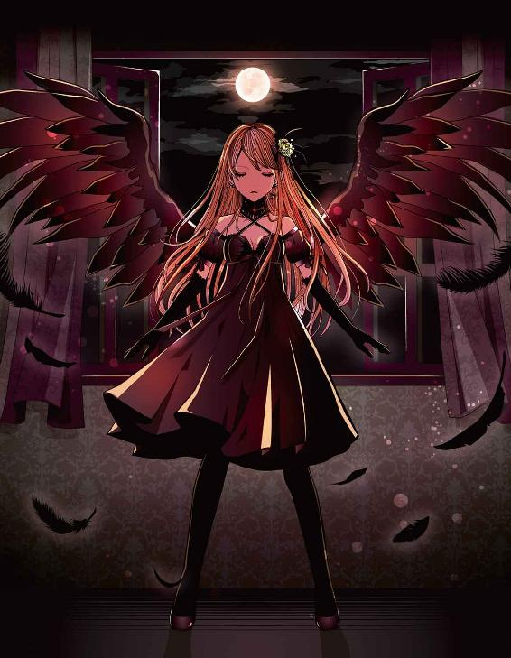
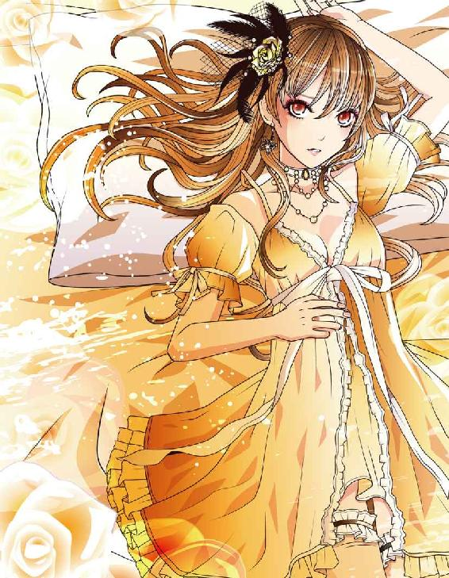
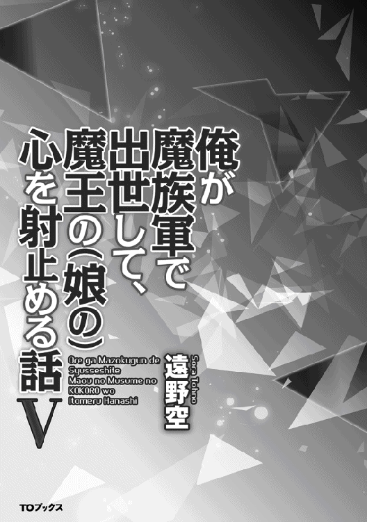
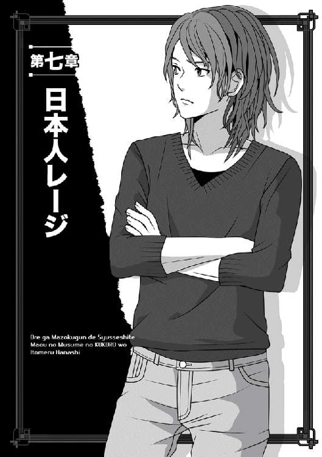
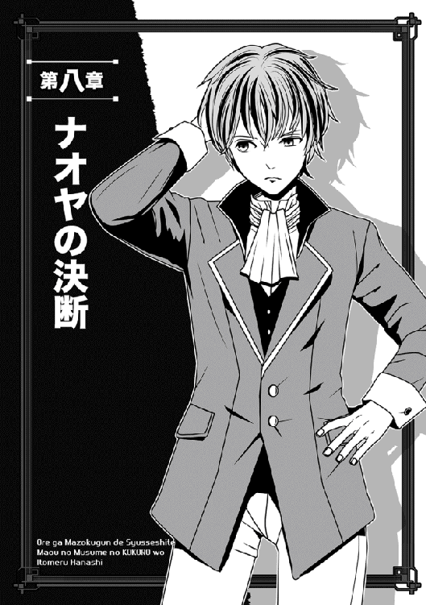
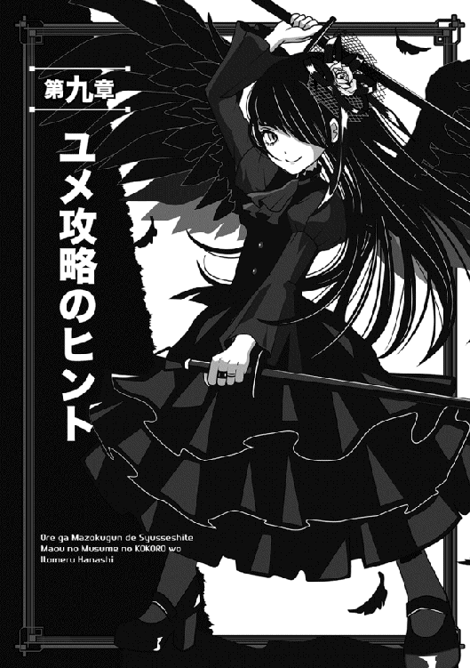
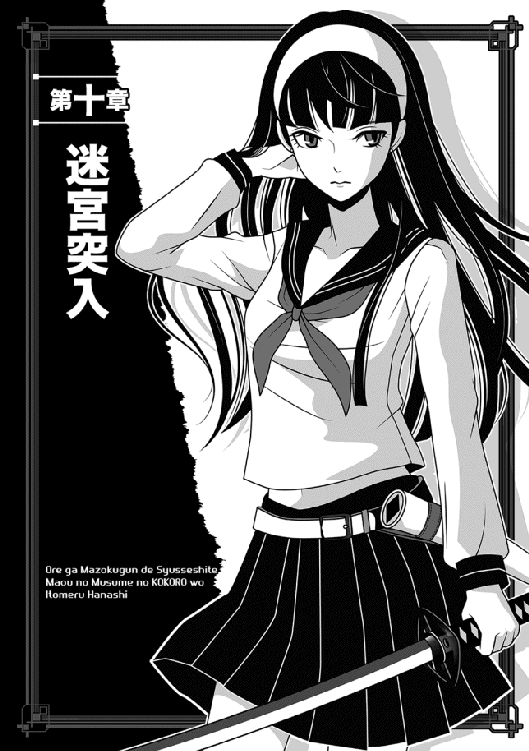
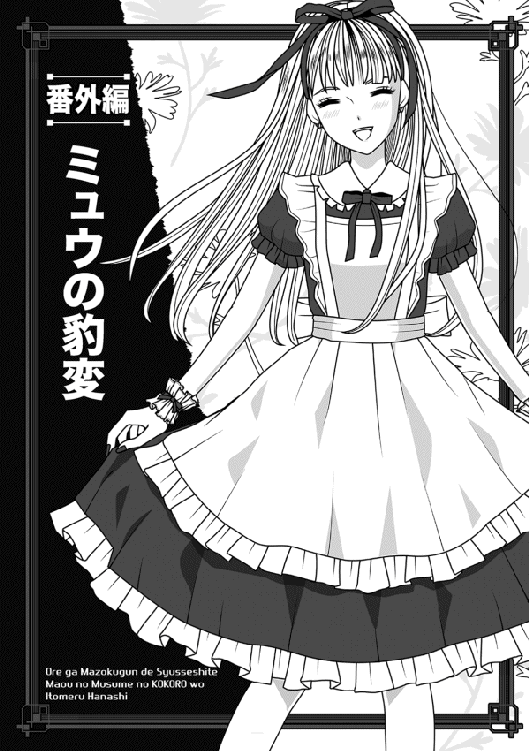

| 俺が魔族軍で出世して、魔王の娘の心を射止める話V | |
| 遠野空 | |
| (2016) | |
新魔王マヤの一存で、敵の砦へ進軍した魔族軍は、強硬突破に成功し、相手の軍を率いる謎の青年を取り押さえる。その男レージはナオヤと同じ日本人だった。だが、レージの仲間の一人に、二千年前にこの世界を席巻した暗黒の女神――ユメがいるとわかる。ナオヤはその計り知れない力を恐れ、戦いを避けようと奔走するが......。新たな覇権争いへ大陸が動き始める中、それぞれの思惑の行方は!? 魔王VS邪神！シリーズ最高潮の激闘に、マヤ様の恋心もスパーク!? 幸せすぎる男・ナオヤの成り上がりファンタジー！



Illustrated by Eri Kamijo
Designed by ansyyqdesign(yoko)

なんだか、妙なことになってしまった......というのが、正直な俺の気持ちである。
まず──俺達、魔族軍が事前に得た敵に関する情報は、おおよそ以下のようなものだったはずだ。
○敵はホムンクルスを創造して兵士としているらしく、なおかつ、降伏した兵士や金で雇える傭兵なども、どんどん味方に招き入れている。
○敵の首領は、当初の情報では、二千年前にこのクレアル大陸に栄えていたロクストン帝国の全土を席巻し、滅亡寸前まで追いやった邪神だそうな。ヴァレンティーヌという名の暗黒の女神らしい。今は、ユメと名乗っているそうだが。
○ただ、その邪神は問題の二千年前に、ブレイブハートと呼ばれる、百人の勇者によって倒されてしまった──かに見えた。
○ところが、実は滅びたわけではなく、どうも邪神とその関係者は軒並み、俺が元いた世界の日本に逃れていて、おまけにブレイブハートの一人であるサクラという女までが、日本人として転生していたそうな。
○そしてどうやらその日本で、邪神ユメとダークピラーと名乗るユメの関係者、そして元ブレイブハートのサクラが結託し、元の世界へ戻るべく、日本から転移しようとした。
（ここが特にややこしい。なんで邪神の敵だったブレイブハートが、邪神側にいるのかと）
○しかし......元の大陸に戻ることには成功したが、あいにくそこは、ユメが破壊活動を行っていた時代より、二千年も過ぎた世界（俺達の現代）だったと。
○はた迷惑なことに、そこで邪神ユメとその軍団は、今更のようにこの世界を支配下に収めるため、全世界に戦いを挑み始めた。
○なお、邪神ユメが率いる軍団は、レージ軍と名乗っているのだが......そのレージ軍には、邪神ユメをも従わせる、影の支配者的な奴がいて、そいつがユメとともに軍団を動かしているようだ。
......とまあ、これまでにわかった断片的情報を繋げると、そういうことになる。
問題は、その影のボス的な、レージである。
こいつはほぼ人前に出ることが皆無らしく、当初、本人に関する情報がまっったくなくて、俺自身は「きっと雲を突くよう大男で、邪神を従わせるほどの剛の者に違いない」と思っていた。
しかし......今、突発的な作戦で砦の最上階に突入して出会ったレージ本人は、ただの青年にしか見えず、しかも出自は俺と同じ日本だという。
めんどくさいことになった、というのが俺の偽らざる気持ちだった。
○────○
「正直、対応に困るよなあ」
俺は椅子に座ったレージを見てため息をついた。
ちなみに今は、砦の指揮官であるレージを押さえてしまったので、彼に要請して（早い話が、脅して）ホムンクルスの部隊の攻撃は停止してもらい、しかもそんなことをやっているうちに、当初から俺が予定していた「待機させた部隊の襲撃時刻」が来たのだな。
当然、そのままうちの部隊がこの砦に押し寄せ、もはや無事に占拠してしまっている。
他へ置いてきた本隊へも、こちらへ合流するように使いを出したし、結果から言えば、万々歳なんだが──。
「なにを対応に困ることがあるのか？」
皆を下げた中で、唯一残っていたマヤ様が、俺をしんねりと見た。
「敵の指揮官クラスが砦に残っていて、マヤとナオヤがそいつを取り押さえたわけだ。後は、こ奴の首を刎ねて、次に邪神ユメを見つけて首を刎ねる......これで万事、解決だろうっ」
「いや、またそんな簡単に──」
「えええっ」
俺の声を遮り、椅子に縛られたレージが叫んだ。
人の良さそうな大学生風の顔立ちの奴なんだが、この時ばかりは飛び出しそうな目でマヤ様を見ていた。
「そこの......キ、キツそうな美貌の君っ。ユメを殺す気なのかっ」
「誰がキツそうだとっ!?」
マヤ様はまずレージを睨んでから、鼻息も荒く宣言した。
「ユメどころか、おまえも外のポンコツ（ホムンクルスか？）も、その他のダークピラーとやらの関係者も、全部まとめてそっ首を刎ねるつもりだ！」
腰に両手を当てたマヤ様は顎を上げて縛られたレージを見下ろし、きっぱりはっきり言い切ってくれた。
八つ当たり気味なのか、瞳は未だに真っ赤である。
「ま、まあまあっ」
俺はマヤ様を宥めるように声をかけた。
放置しておくと、「だから今殺すっ」てことで、すぐにバッサリやっちゃうからな。
「とにかく、この人の事情も聞きましょうよ。それで戦うしかないなら、その時にまた考えればいいじゃないですか」
「......ナオヤに任せている故、話を聞きたいならそうするがよいが......しかし、マヤからすれば、魔界を攻める者は全て敵ぞ。そこだけ、はっきり主張しておく！」
鼻息荒くそう告げると、マヤ様はベッドにどすんっとばかりに座った。
立っているのに飽きたらしい。
となると、俺だけがボケッと立っているのも馬鹿みたいなので、俺もテーブルの椅子を引き寄せ、レージの前に座った。
男同士で、しかも日本人同士でこの異世界で対面しているわけだが、違和感が凄まじいな、ホント。
「ええと、一つ尋ねたいんですが、貴方とユメはどこで知り合ったわけです？ やっぱり元の日本で？」
「そういう......ことになるね」
なぜか迷うような口ぶりで、レージは頷いた。
「ユメはもちろん、レイモンもサクラも、元々はこの世界の住人でさ、彼らが日本へ来たのは、転生したユメを伴って、日本へ一時避難してたからなんだ」
「それは......こっちにいたままだと、かつての敵に倒されるから？」
「そういうこと」
レージは何度も頷く。
「ユメは、邪神扱いされていた強大な女神で、かつてはこの世界を滅ぼしかけたほどの存在だからね。当然、世界中が敵だと言っても過言じゃない。で、異世界である日本へ逃れたのはいいけど、そこでも追っ手が来ていて、危うく殺されそうになっていたんだよ......なにしろ、その時はまだ赤ん坊の姿だったし」
「しばし待て！」
そこで不機嫌そうな顔で聞いていたマヤ様が、じろっとレージを睨んだ。
「おまえの言う通りだとすると、異なる世界間を渡れる者がいるということか？ 言っておくが、それはかなり難しい術のはずだぞ。我が魔界ですら、この前ようやく、ナオヤの元の世界へ飛ぶことが可能になったばかりだ」
「それは......俺にもわからないけど、元々こっちの世界じゃ、そういう術があったらしいよ。今は無理かもしれないけど、ユメの時代である二千年前にはできてたわけだし。それに、仲間に聞いた話じゃ、あんた達だって異世界から人を召喚したりしたことがあるそうじゃないか。つまり、劣化したとはいえ、今も転移術の残滓みたいなのはあるわけだ」
「誰があんた達だっ。気安いぞ、貴様！」
早速、むかついたマヤ様がまた立ち上がろうとする。
「ま、まあまあっ」
俺が焦って腰を浮かすと、レージが俺とマヤ様を見比べ、眉根を寄せた。
あまりにも性格も人種も違うので、奇妙に思ったらしい。
「それで君に訊くけど......この女の子、どういう立場なんだ？」
「え、もしかして知らなかった？」
俺は呆れてレージを見返す。
まあ、別に前線にいたわけでもないみたいだし、知らなくても不思議じゃないのかもしれないが。
「マヤ様は、魔界を統べる魔王ですよ。貴方は、簡単に言えば、その魔王を相手に戦っているわけです。とうに理解していたと思ってましたけど」
「ま、魔王だってえっ。この子がぁ!?」
おぉ、心底ぶったまげた顔になったぞ！
「い、いやっ......そりゃ、魔界に魔王がいるのは聞いてたけど、まさか......こんな女の子だったとはっ。態度が大きいのが不思議だったけど、それを別にすりゃ、こっちの世界のモデルかアイドルかと思ってた」
「あいどるとはなんだ、ナオヤ？」
気に入らんものだったら殴るっと言わんばかりの表情で、マヤ様が俺を見る。
「いや、俺の世界じゃ、度を過ぎた美貌と気品と可憐さを備えた人がなる職業で、むちゃくちゃ人気職ですよ。有り得ないような花形職業ですね。なりたくてもなれない人が大勢いるんです。だから、褒められてるんですって。まあ俺もこっちに来たばかりの頃は、『うわぁ、マヤ様って女優とかアイドルみたい』とか、そう思いましたもん」
ここぞとばかりに持ち上げまくったが、別にでたらめこいたつもりはない。
俺は最初からマヤ様の立場を知っていたけど、そうじゃなきゃ、絶対に外人女優とかアイドルじゃないかと思ったはずだ。
まあ、アイドルにしちゃ、凄みと殺気がありすぎるけどな！
「......む」
なぜかマヤ様の勢いが弱くなり、立ち上がりかけていたのに、すとんとまた座った。
妙に上目遣いで俺を見て、思い切ったように訊く。
「そ、それは......本当にナオヤもそう思うのか？ 今でもか？」
「ええ、今でもそう思いますね。実際、今からでも二人で俺の世界に行けば、マヤ様は即、アイドルでも女優でも、なんでもイケると思いますよ！」
その意味じゃ、ミュウもそうだと思うけどっという部分は、当然、言わずにおく。
マヤ様はなんとも言えない複雑な顔で俺を見て、口を半開きにした。なにか言おうとしたらしいが、言葉にならなかったようだ。
そのうち、ぷいっとそっぽを向いてしまう。少し頬が赤い。
「そ......そうか......うむ」
よかった、ちょっと機嫌が戻った。
俺は大いにほっとした。
この隙に、わからない部分は全部レージに訊いておこう。
「それでですね、貴方と俺が同じ日本人だってことは、戦いに関係ないんで、この際は置いておきます。それより、なんでまたユメと貴方達は、こっちの世界に戻ってこようとしたんですか？」
「理由は簡単さ」
レージは心なしか胸を張った。
「ユメを敵視して、しぶとく日本まで追ってきていた連中は、ユメ達がみーんな倒しちゃったわけだ。そこで、ユメは故郷に凱旋するために戻ってきたわけだな。元々こっちがユメの世界だしね」
「はぁあああ」
俺は迷惑な気持ち半分、感心した気持ち半分で、眉根を寄せた。
「で......元のユメの世界であるロクストン帝国へ戻ろうとしたら、二千年ほど時間がズレてしまったと」
「そ、そうなんだよ、そういうことなんだっ」
今度はまた、えらく情けない表情になったな。
「俺達も最初は、それで途方に暮れたんだ。いきなり、ルクレシオンの帝都であるクレアールなんて都市に出ちゃってさ。いやぁ、あの時はみんなで呆然としたなあ」
「そのまま呆然としていればいいのに、どうしてまたすぐに戦を始めるのだ!?」
復活したマヤ様が、そこでいきなり突っ込んだ。
一応、話は聞いていたらしい。
「そりゃまあ......いろいろ調べた結果、この大陸では、どうやら二千年前以上に戦乱の世の中らしいじゃないか？ いわゆる、血で血を洗う乱世？ だから、本来は女神であるユメとしては、この乱世を自分の力で終わらせようとしたかった......みたいなんだな」
話しているうちに、またまた瞳が真紅になっていくマヤ様を見て、レージの声は徐々に尻すぼみになった。
まあ、自分でもかなり迷惑な論理であるとは思っているらしい。
それと......この人、ベッドに座ったマヤ様のストッキングの足を、だいぶチラチラ見てるな。俺と同じで、煩悩に弱いタイプか！
他の女の子を見る分には共感覚えるけど、マヤ様を見られるとあんまりいい気分じゃないな。
というわけで、俺はすぐに割り込んだ。
「だいたいのところはわかりましたが、今気付いた疑問が二つほどあります」
マヤ様とレージが俺の方に注目するのを待ち、ずばっと告げた。
「第一に、どうして貴方にその......太古の女神であるユメが懐いたのか？ そして、貴方はどうして、ユメとともに戦うのか。あ、もう一つありますね」
そこでレージの話の内容を思い出し、俺は追加で指摘した。
「貴方が日本に避難してきたユメと出会った時、彼女は転生して赤ん坊の姿だったわけだ。まさか、今もそんな姿じゃないでしょう？」
それじゃ、軍を率いるのも無理だしなぁ。
「それとも、長らく日本でともに暮らしたとか？」
あえて秘匿するかと思ったけど、レージは正直な人らしかった。
困惑したように首を傾げつつも、ちゃんと答えてくれた。
「順番に話すとだね──まず、ユメが俺に懐いたことについちゃ、俺自身にも見当がつかない。多分、危ないところを偶然助けたために、その恩義を感じてるのかな？ とは思うけどね。あと、その後何ヶ月か一緒に暮らしたから、仲良くなってるし。ちなみにユメって、転生後の年齢的にはまだ一歳にもなってないよ。生後数ヶ月かな？ 見た目は、中学生くらいの女の子に見えるけど」
「えぇーーーっ」
「ほぉ？」
俺とマヤ様の声が重なったが、マヤ様はあまり驚いていないようである。
俺はたいがい、度肝を抜かれたっていうのに。
「......それって、元が女神だから成長早いとか？」
「いや、関係あるまい？」
今度はマヤ様が割り込んだ。
「そういう種族は、普通に魔界にもいるぞ。だいたい、マヤだって生まれてすぐ、もう歩き出したからな。父上を力任せにベシベシ叩いたりして、散々手を焼かせたらしい」
いや......そこで懐かしそうに遠い目をされましても。
「は、ははは。まあ、マヤ様の成長が早いのは、前にも聞きましたけど」
特にスタイル──じゃなくて、すぐに歩き出したんだったな。
あと、ベシベシ叩くというのは、実によく想像できる。この方は、当時から手が早かったのだろう。生まれて即、活発かつ乱暴。まさにマヤ様。
「ユメの成長が早い理由は、正直、俺じゃわからない。俺も君と同じ日本人だしね」
レージは人の良さそうな顔で俺とマヤ様を見比べ、困ったように答えた。
「とにかく、ユメとともに数ヶ月過ごした俺は、その間に日本であの子の追っ手との戦いにも巻き込まれたし、一緒に暮らして情も移ってる。そりゃもう、君達の想像以上にね。だから、俺はユメとともに命をかける決心をしたし、ユメが戦うなら、ともに命を捨てる覚悟で臨もうと思ったのさ。それくらい、俺はユメを大事に思っている！」
おお、この最後のセリフを言う時だけは、すっごくきっぱりはっきり言い切ったな。
今度は俺達が黙り込む番だった。俺もマヤ様に従う身なんで、共感を覚えなかったというと、嘘になる。そして......少なくともレージの最後のセリフについては、マヤ様も多少は思うところがあったらしい。
多分、一緒に命をかけるって部分に、少し感心したんだろう。
俺はこの機を逃さず、提案してみた。
「あのですね......今からでも、戦いを回避する方策ってないもんですかね。そういう事情なら、なんかお互いに誤解もあった気がするんですよ。今ならほら、レージ軍もルクレシオンを制圧しかけてるし、頃合いかなあと」
「誤解？ なにをぬるいことを言い出すのだ、ナオヤ」
マヤ様がベッドで足をぶらぶらさせるのをやめ、いきなりキッと俺を見た。
「考え方が逆ぞ？ こ奴らは、既にルクレシオンを制圧しているのだ。王族どもも、とうに虜の身となっている。今更、後戻りできる状況ではない」
「いや、そうなんですけど、別に我々はルクレシオンに恨みはあっても、義理はないじゃないですかー」
俺は顔をしかめて抗弁する。
というか、占領活動をルクレシオンで止めてもらえば、俺達にとってもいいことじゃないかー......と思うんだけどなあ。
しかし、信長もびっくりの覇気に溢れるマヤ様は、当然ながら、俺みたいな考え方はしないらしい。即座に言われた。
「──却下だ。マヤは、とことん戦うぞ！」
「えぇーーっ」
「えー、ではないっ。ルクレシオンがどうあろうと、確かにマヤには関係ない。関係ないが、魔王たるマヤが目指すのは、まずはこの世界の統一、次に多々ある異世界を、行ける限りは全て占領に乗り出すことだっ。その長き道のりに、当然、こいつらは邪魔になるに決まっているではないか！」
「い、異世界を全部占領っ!?」
「じゃあ日本もっ」
俺とレージが、それぞれの思いを込めて口走る。
うおお......さすがは、野望値が百を振り切りそうなマヤ様。
いや、百というのは、信長を扱った歴史ゲームの話だけど。あれはなぜかいつも、ゲーム開始からして、信長の野望値がマックスの百だった。
まあそれは置いて......俺はマヤ様が以前にも似たようなことを宣言するのを聞いたけど、レージは驚いただろう。
「いや、しかし......そりゃ、無茶じゃないか？」
レージは真面目そうな顔を引きつらせ、俺とマヤ様を順番に見る。
「ルクレシオンでの占領行動を止めろっていう君の意見は、まだわかる。しかし、そこの彼女──」
言いかけ、レージは真紅の瞳とばっちり目が合い、たじろいだ様子を見せた。
「もとい、魔王殿か？ とにかく、その人の言い分はむちゃくちゃだ。真面目に受け止めるなら、俺や君の日本だって危ないってことじゃないか」
「なにが真面目に受け止めればだっ。マヤはいつでも本気だ！」
「ま、まあまあ......マヤ様が本気なのは、俺はちゃんとわかってますって」
マヤ様がレージに掴みかからないよう、俺が慌てて介入した。
どうでもいいけど、レージのマヤ様を見る目が明らかに変わったなぁ。「この女の子、やべぇええ」とモロに思ってる顔だぞ、あれは。
実際、マヤ様は危ない人なんで、そこは否定しようがないんだけど。
「ここではっきり訊いておくぞ、ナオヤ。そもそも、おまえはどちらの味方なのだ!!」
マヤ様は立ち上がり、つかつかと歩いて俺の前に立った。
「さっきから聞いていれば、戦いを避けるようなことばかり言うではないかっ」
「俺はどこまでもマヤ様に付き合いますよ。本気で異世界全てを敵に回すおつもりなら、最終的にはそのご意志に従います」
胸の谷間を見ないようにして、きっぱりと言い切る。
ここで下見ると、すぐに腰が萎え萎えになるからな......。
「そ、そうか。ならばいいのだ......うん」
マヤ様は真紅の瞳を大きく見張り、それからやや表情を和らげて頷いてくれた。
その呼吸を読み、俺はここぞとばかりに提案する。
「とにかく、レージの首を刎ねるのは、今は保留しましょう。その方が、後々のためになるかと」
レージが聞いてるので、必死で視線を飛ばして訴える。
こいつは絶対、人質に使えるっ。だから、今殺すのはだめぇえええ......という思いを込めた視線だ。
口に出すと、邪神ユメが大事なレージは、自決とかしそうだしな。
通じたのか通じなかったのかはわからないが、少なくとも見つめ合ううちに、マヤ様の瞳の色が薄れてきた。
ああ、よかった......こりゃ、いい兆候だ。
「......わかった、ナオヤの進言故、首を刎ねるのは一時待とう。その代わり」
マヤ様は俺に素早く顔を寄せ、耳元で囁く。
「久しぶりに、後でまっさーじを頼むぞっ」
「わ、わかりました」
久しぶりかぁ？ つい少し前にも、陣中の小屋でやらされたような......と思ったけど、ここは素直に頷いておいた。
いや、俺だってマヤ様に公然と触れることができるのは、嬉しいしな。半分以上が筋トレになっちゃうのがアレだが。
とにかく、レージを今殺すのはまずい。
......特に、邪神ユメの力量がわからないうちは、絶対に！
俺とマヤ様がひそひそやっていると、今度はレージが質問した。
「ところで......仲間は誰も死んでないだろうね？ サクラを始めとして、あの連中もみんなさ？」
「無事どころか、俺はサクラに騙されて──」
言いかけ、俺はそこで思い出す。
「そうだ、サクラだよ！ ダークピラーって連中は元々邪神ユメの配下だっていうから、それはいいとして、あのセーラー服女はどういうアレなんです？ あいつともちょっと話したけど、本人は元勇者に当たる、ブレイブハートだって言ってましたよ」
俺はレージの前に戻り、怒濤の勢いで詰め寄る。
「ブレイブハートは、邪神ユメとやり合ったんでしょうがっ。サクラも日本人として転生していたのは置いても、なんで転生後の今はユメの側なんですかーっ」
あまりに憤慨した物言いだったせいか、レージがたじたじとなっていた。
「いや......そこは俺も不思議だったけど、後から聞いた話では、あいつはブレイブハートとして生きていた時代に、守っていた人間から裏切られたって話だった。......なんでも、ユメに攻められた街の住人が、自分達が助かるために、サクラの家族をユメ達に人質として差し出したとか」
「そ......それはまた」
俺は当初の勢いが消えて、思わず口を半開きにした。
なんと、あの自称勇者のねーちゃんに、そんな事情があったのか。
「それで、今生では邪神側につくことにしたと？」
「まあ、当時は邪神の方が彼女の家族を保護したくらいで、人間側はサクラ達家族に散々なことをしたそうだしね。......ただ、あいつが俺達と一緒にいるのは、別に恩義のためだけじゃないと思うよ」
レージも困ったように眉根を寄せた。
おそらく俺と同じできっついセーラー服ねーちゃんを思い出しているんだろう。
「あいつの前世の恨みは深いってことさ。サクラが俺達についたのは、たまたま俺達が人間の敵として知られていたからじゃないかな」
「......それじゃ、別に魔界の味方をしてくれてもいいような」
ポロッと俺が言うと、レージは思いっきり顔をしかめた。
「冗談言わないでくれっ」
「冗談じゃありませんよ。俺はどっちかというと、敵を増やすよりは味方を増やすことを考えたいですねっ」
今度は俺が捲し立てる。
「だいたい、サクラは血の気が多すぎて嫌だ。戦うと疲れる──て、いつつっ!?」
「もういい、ナオヤ！」
拳を固めて力説する俺の肩を、マヤ様が掴んだ。
その際、またクソ力が発揮されて、肩の骨が砕けたかと思った......こりゃわざとだな。
「この男は敵であり、この男と一緒にいる者もみんな敵だ。それだけわかっていれば、マヤとしては十分ぞ」
身も蓋もなく言い切ったあと、マヤ様はじろりと俺を横目で見る。
「しかし、サクラと言ったか？ その女のことは、マヤも少し──いや、かなり気になる。まっさーじの途中、どういういきさつでまた女と知り合ったのか、じっくり聞こうではないか、うん？」
おぉ......俺の肩を握る手がぷるぷる震えているような......最近、嫉妬深くなってないか、この人。いや、ある意味じゃ嬉しいんだけど。
「いや、別にサクラと遊んでたわけじゃ──てててっ、痛い、痛いですって！」
人の言い訳を全く聞かず、マヤ様が俺の首根っこをひっ掴むようにして引きずっていく。無論、この方の腕力に対抗するなんぞ不可能で、俺はずるずると引きずられていった。
こうなるともう俺としては、見張りの兵士を呼びつけるのが精一杯である。まだ、レージに訊きたいことがあったというのに。
○────○
ホムンクルス兵士達が活動を停止し、魔界軍の本隊も到着したことで、にわかに砦の中はみっしりと過密状態になった。
まあ、それは仮宿舎を増やすとか、野営とか、いくらでも方法があるからいい。問題は、今後のことだ。どうせ、ユメの側も黙ってないだろうしな。
俺は筋トレかと思うようなマッサージでくたくたになった身体を引きずり、かつてここにいた時の私室に、皆を集めた。
マヤ様がようやく休んだ今、相談しておかないと、今度はいつ時間が取れるかわからないからな......なんか、いつもマヤ様が眠った後でこんなことしてるけど。
......それはそれとして、ソファーが足りないので、立ってる仲間もいるんだけど、ギリアムとローズが見事に一番遠い位置に立っているのがなんとも。
こいつら絶対、俺がいない間に喧嘩したな。
でもって、そのローズが立ち上がり、わざわざ俺の前に来てしんねりと見下ろした。
「......あっ」
「あ？」
言いかけ、口を噤んだ金髪ねーちゃんを見て、俺は首を傾げる。
遠くからギリアムが叱り飛ばす声が聞こえた。
「ちゃんと言わぬか！ 誰のお陰で助かったと思っている!!」
兄貴に促され、ローズはようやく深々と頭を下げた。
「危ないところを助けて頂き、ありがとうございましたあっ」
「わあっ」
急にでっかい声出すな、馬鹿。鼓膜が破れるだろっ。
おまけに、ちっとも申し訳なさそうじゃないし。同じくそう思ったのか、既に合流していたヨルンが、大声で野次を飛ばしやがった。
「いつのまにか制服着替えて、何事もなかったような済まし顔してんじゃねーぞおっ。さっきのズタボロなエロエロ制服のままで、もう少し済まなそうな顔しろってんだよお！」
途端に、キッとまなじりを吊り上げ、ローズが窓際に立つヨルンを振り向く。
「これでも、謝っているではありませんか！」
「だから、全然申し訳なさそうに見えないっつってんだっ」
「貴方にそんなことを言われる筋合いは──」
「ストーーーーップ！」
俺はうんざりして、途中で二人を止めた。
やかましいというのもあるが......皆の表情を見た感じじゃ、おおむねヨルンに賛成したそうなのだな。
まあ実は、俺もどっちかというとヨルン寄りだけど。
つまり、このまま言い争いを続けたら、ローズはみんなからボロボロに言われて、再起可能になりそうだ。
ただでさえ、プライド高そうだし。
一応、不満そうにしつつも、ローズとヨルンが黙ってくれたので、俺はすかさずローズに訊いた......できるだけ穏やかに。
「で、遅まきながら尋ねるけど、どうしてまた命令無視したわけ？ 下手すると殺される──前に貞操の危機だったんだぞ？ 笑えない状況に陥っちまってたんだ」
「......そ、それはそうですが、左右の山肌を見れば、なんとかよじ登れると思ったのです。実際、戦士将も前に山をよじ登ってこの砦に侵入したと聞きますし」
「俺が前に成功したのは、一人じゃなかったからだよ」
誤解のないよう、俺はきっぱりと言った。
「みんなの協力があったからだ。あの時に一人で突っ込んだら、俺だって失敗して殺されてたさ」
「ですがっ」
「あのなあ！」
ローズの言い訳を途中で遮り、俺はわざと大声を出す。
あまりそういう言い方したくないが、このまま放置すると、おそらく遠からず本人が死ぬからな。
「確かに俺は人に説教できる経歴じゃないけど、この際だからはっきり言っておくぞ。ローズは今回、失敗したんだ。それも、誰が見ても大失敗だ。そういう時は、ひとまず自分のわがままは置いて、素直に反省した方がいい。さもないと、次は命まで落とすぞ......しかも、仲間も道連れでさ」
珍しく俺がきっつい口調で言ったせいか、みんな静まりかえってしまった。
ただ、ギリアムだけは大きく何度も頷き、ローズにとんがった声を叩き付けた。
「ナオヤ様の仰る通りだ。失敗した上に、言い訳を並べるのは、戦士として恥ずべきことだぞっ」
これで、さすがのローズもしゅんとなってしまい、今度は割と真面目に深々と頭を下げた。
「......確かに聞き苦しい言い訳でした。この度はご迷惑をおかけしました」
「わかればいいけど......ていうか、下手するとマヤ様に目をつけられて、あっさり首が飛んだりするから、気をつけてくれ。マジで頼むよ、俺が止めるにしたって、限界があるんだから」
一転して、俺は懇願口調で眉根を寄せる。
実はこっちが本音なのだな。
「正直な話、せっかく縁があって知り合ったわけだから、ローズの首が胴体と泣き別れするトコとか、身体が縦割りになって内蔵ぶちまけたトコとか、見たくないんだよ、わかる？」
「......すみません」
もう一度低頭してくれたので、俺はもうこの件でこれ以上追及するのはやめた。ローズがどこまで納得してるのかわからないけど......これで身に染みてくれたらいいんだが。
「さて、話は変わって、現在の状況だ」
気分を変えて、俺はレージの話と、それに伴うマヤ様の方針......まあ、あのシンプルな「向かってくる奴は全員敵っみたいなお考えが方針と言うならだが──。
とにかくマヤ様のそのお考えを含め、一切合切、打ち明けた。
......ところがこいつら、おおむね全員、マヤ様寄りでやんの。
「おぉ、さすがは魔王陛下だな。そりゃ、向かってくる奴らは全員敵じゃん」
偉そうに窓際の壁にもたれたヨルンがまず唾を飛ばすと、エルザが「そうよねぇ。後腐れなく、サクッと全員倒しちゃうのがいいんじゃない？」と後を引き取り、歴戦のネージュも「ま、それが戦の基本よねぇ」とうんうん頷く。
......こいつら、殺伐としすぎ！ さすがは魔王率いる魔界の住人だ。
いつもは慎重派のギリアムまで、「魔界としては、こうなれば徹底抗戦しかないでしょうね」などと言うじゃないか。
「いや、あのね。講和の道を探れとまでは言わんけど、少しは敵に離関の策かけて、有力な戦士を抜いちゃおうとか思わない？ 向こうに寝返ったばかりのアランはともかく、サクラなんか、状況次第でこっちにつくと思うんだけど」
「それって......本当に戦況を有利にするため？」
これまで内輪もめに加わらなかったレイバーグが、じっとりとした目つきで言ってくれた。
「ナオヤがサクラって子を気に入ったからじゃないの」
「そうなんですか!?」
ぎょっとしたように、隣に座ったミュウが俺を見つめたりしてな。
「ナオヤはエッチだものねぇ」
......で、エルザがトドメを刺してくれたよ。
「それは関係ないだろうがあっ」
思わず熱く言い返してしまった。
「まあ、離関の策は置いても──」
助け船を出すつもりなのか、ギリアムが口を挟む。
「敵の事情は事情として、太古の昔に大陸全土で暴れた邪神とやらが、今になって舞い戻って復権を狙っても困ります。理不尽な理由で攻められているのは、我々の方ですからな。ここは全面的に叩くべきでしょう」
おぉ、そうだそうだ！ みたいな声が、たちまち部屋中に満ちる。
俺は反射的に顔をしかめ、ぐるっと仲間を見回した。
「いや、その意見は意見として聞くけど、なんかみんな、大事なことを忘れてないか？」
俺の問いに、全員が首を傾げてくれた。
「......もしかして、今回はたまたま攻められる側になってて、みんな重要なことをころりと無かったことにしてるな？ 言っとくけどなあ、マヤ様は魔王だぞ？」
ここではっきり言っておく必要を感じて、皆を見渡した。
「そして魔王であるマヤ様は、この大陸はおろか、存在する限りの全世界を手中に収める気なんだ。言っちゃなんだが、それって攻められる方からすりゃ、むちゃくちゃ理不尽な話だろ？ 現在の敵をどう倒すか話し合うのはいいとして、敵が戦を始めたことを非難する資格なんか、俺達にないんだって。なにせ、俺達は別に攻められなくても、遅かれ早かれ、今後は邪魔者をかたっぱしから片付けるつもりでいたんだから」
顔を見合わせて押し黙る全員に、俺はきっぱりはっきり言っておく。
「だから、いい子ちゃんぶるのはよそうってことさ。この戦に限って言うなら確かに被害者だけど、その意味じゃ、俺達にだって正義があるとは言えない。今回のことで正義がどうのを持ち出す資格があるとしたら、理不尽な仕打ちに腹を立てて裏切った、アランくらいだろ？ 俺が戦ってるのは、マヤ様の世界制覇の野望に従う覚悟をしてるからであって、別に正義感のためじゃないからな。そこは、はっきり言っておく」
「......つまり、ナオヤもまた、正義のために戦っているわけじゃない？」
ちゃっかり対面のソファーに座っているレイバーグが、恐る恐るといった様子で訊く。まあ、勇者としては、その辺は重要なんだろうな。
しかし......勇者娘をがっかりさせて悪いけど、俺はちゃんと公言しておくことにした。
「違うね、俺は全然正義のために戦ってない。それを問題にするなら、俺なんて肉の盾にされてたわけだから、むしろマヤ様に反旗を翻せって話になるだろ？ だけど俺、そんな気が全然ないどころか、今はマヤ様の世界制覇の手助けしようとしてるからな。正義なんかあってたまるか」
そこで俺は声を大にして主張する。
「忘れるなよ、みんな。俺達は魔王の下にいる魔族なんだよ！ 魔王の手足となって働くのが、俺達の役目だ。何度でもきっぱり言い切るが、決して良いことをしようとしてるんじゃないんだ。正義の側じゃない、ないんだ！ だから、こんな時だけ被害者ぶるのはやめろって」
勢いよく述べたのはいいけど、レイバーグが腕組みして考え込み始めたので、俺はちょっと焦った。
いや、ここで「正義の側じゃない？ むむむ......それは駄目じゃないか」とかこいつに心変わりされるとたまらん。
だいたい、俺だって口ばっかりで、本心は甘っちょろいことしか考えてないからな。
というわけで、すぐに宥めるように続けた。
「まあしかし......そうは言いつつも、なるべくなら穏便に、しかも死者の少ないようにやっていく手は──」
......と、人がせっかく、際どい話をよいお話に昇華しようとした瞬間、ドバンッと身も蓋もない勢いでドアが蹴り開けられ、蝶番ごと鍵が吹き飛んだ。
「おわっ」
「きゃっ」
「わ、びっくりした！」
俺とエルザとネージュが、度肝を抜かれて声を上げる。
いや、おおむねミュウ以外の全員がそうだったけど。さっと注目を集めた戸口には、薄絹のガウンのみを着込んだマヤ様が立っていて、ちょうど足を下ろしたところだった。
お、惜しい、そっち向くのがもう少し早ければっ。
──じゃなくてっ。いつもながら、貴女はいちいちドアを蹴飛ばさないと開けられないのかとー。あと、いつ起きたんだよっ。
「ナオヤの、その言やよし!!」
俺の考えなど無視し、こっちをビシッと指差してマヤ様が叫ぶ。
すげーでっかい声で、これでまたみんな飛び上がりそうになっていた。ただでさえ、地声がでかいのにー。
「な、なにがですかっ」
──びっくりするじゃないかっ。
だいたい、「その言」ってどの言だ、「なるべくなら穏便に」って部分か？ いや......それは絶対違うな。
「なにがですか、ではない」
マヤ様は紅潮した頬ときらきらした瞳で、まっすぐに俺を見る。
どうでもいいが、また上は下着つけてないぞ、この人......すぐに胸に目をやって、そこに気付く俺もアレだけど。
「マヤは正義の味方でもなければ、正義の使者でもない。むしろ、なにが正義かは、マヤがその都度、決めることだ！」
「え、えっ!?」
そ、それはちょっと違うくないっすか？ 俺の主張とだいぶズレがあるような。
でもまあ、魔王だしなあ......自分の正当性に悩む魔王とか、そっちの方が駄目か？
マヤ様に甘い俺は、一人で悩んであわあわした。本人は全然悩む様子もなく、熱く語ってるけど。
「今後も邪魔者は片付け、そして全てを魔界とし、マヤの領土とする。それが我が野望ぞっ。当然、マヤの知る全世界を制覇し尽くすまで、この野望は終わらぬ！」
俺どころではないきっぱりした言い方に、皆が静まり返る──以前に、レイバーグとミュウ以外は、全員慌てて跪いてるけどな。
マヤ様はそこで、まだポカーンとした俺の眼前に立つと、右手の手の甲を俺の眼前に突き出した。
「さすがに、ナオヤはよくわかっているようだ」
「は、はあ？」
それはいいけど、なんで手の甲を出すんスか。
......さてはまた俺の、「地球の騎士道にはこんな習慣があったような、なかったような」という与太話を覚えてたのか。
しょうがないので......と言いつつ、本当は少し嬉しくもあり、俺はマヤ様の期待に応えて、白い手の甲にそっと口付けする。
......いつも思うけど、鋼材すらぐんにゃり曲げちゃう握力（本気出せば、五トン以上あると睨んでる）なのに、なんでこの人の手はこんなにほっそりしてて白いんだろう。
しかし、そんなほわほわな気持ちでいるような状況じゃないので、俺はささっと手を離した。なにしろ、周囲の視線が痛いんで......特にミュウとか。
「ええと、なにかご用事があったのでは？」
「確かに用事を思い出してナオヤに見せてやろう（なにを？）と足を向けたが、その言い方はどうも引っかかるな」
マヤ様は切れ長の目を細め、不平顔で俺を睨む。
「ナオヤはミュウやエルザなどといつも遊んでいるようなのに、なにか、マヤが突然来ると困るわけか？」
「いやいや、そんな馬鹿な。いきなりそんな風に拗ねられても」
「ならば、別にいいではないか！ ちょうど、よい話が聞こえたから立ち聞きを──いやっ、とにかく介入して褒めてつかわそうと思っただけだ」
......立ち聞きしていたわけですね、つまり。
俺はこっそり息を吐く。それにしても、短時間とはいえ、立ち聞きしてて俺に気付かせないとは。いや、今はそんな感心より、この場の収拾か。
「あほん。え〜、マヤ様の目指すところは、もちろん俺はよくわかっていますが、でもまあほら、その道行きはなるべく静かに穏やかに話し合いを交えつつ」
などと......俺がせっかく、好戦一色になりかけたこの場を、軟弱な平和路線へ戻そうとしたのに──。
これがまた、人の努力をあっさりと無駄にすることが起こった。
つまり、俺の発言を遮り、なんの前兆もナシに、いきなり大爆発が起こったのだ。
「おわあっ」
喚いた俺を皮切りに、全員が「わあ」だの「きゃあ」だの、それぞれの悲鳴を上げる。勇者レイバーグですら、女の子っぽい悲鳴を上げたという。
それだけ凄まじい爆発音であり、揺れだったわけだ。
震災の時の方が、まだ全然マシだったね！
爆発音とほぼ同時に、一瞬、ふわっとなにもかもが浮いた。まるで無重力にでもなったかのように、ソファーなどの家具を含め、俺達全員が持ち上げられ、そしてすぐに床に叩き付けられた。
俺はとっさに、マヤ様とミュウに飛びついて、二人揃って腕の中に抱え込んで自分が下になったせいで、ムギュッとばかりに女性二人に押し潰されかけた。
ただ、揺れはその巨大な一回のみで、部屋の中がしっちゃかめっちゃかになったのを除けば、一応誰も怪我などはしてない......はずだ。
何事か、と刀の柄を握った途端──。
外から女の子の金切り声が聞こえた気がして、俺は即座に跳ね起きて部屋を走り出た。
「これ、ナオヤっ」
「ナオヤさんっ」
慌てた女性二人の声がしたが、俺は振り向きもせずに怒鳴り返していた。
「全員、その場で待機！ まず、俺が外の様子を見てくるっ」
いや、そんなこと言ったってマヤ様は言うこと聞かないだろうけど......それを見越して、誰かマヤ様を押さえててくれるといいんだけど......無理だろうな。
しかし、俺は一瞬、掛け値なしにぞくっとしたのだ。
爆発音がしたその時、身が震えるような威圧感を全身に感じた。
多分......いや、間違いなく、外に敵が来ている。それも、レイバーグやサクラをも凌駕するようなとんでもない敵が。
確信に近いような予感に、階段を駆け下りる俺は、早くも震えていた。
武者震いだと言いたいところだが......正直、ちょっとびびってるのも否定できない。
一階まで駆け下り、破壊されたままの砦のドアから外に駆け出した俺は、たちまちその場で急停止してしまった。
まず、今の大揺れの原因がわかった。
元通り、外に整列しているホムンクルス達のすぐそばに、でっかいクレーターができて、底の方から煙が上がっている。
まさに、今いた砦の主塔に近い、ギリギリの位置だった。さっきの揺れは、この大穴が原因らしい。こんなでっかい穴、攻撃魔法使ってもなかなか無理だと思うけど。
そしてトドメに......なんと砦の主塔よりも高い空中に、黒い影が浮いていた。
元魔王陛下のナダル様のように漆黒の翼を広げ、漆黒のドレスを纏った少女である。
マヤ様と似て、切れ長の凄みのある瞳だが、こちらは片眼が隠れそうな長い黒髪をしていて、ややマヤ様よりは年下に見える。
ドレスこそ、舞踏会にでも出そうなふんわりと広がったスカートなのに、黒髪をうねうねとなびかせて眦を吊り上げる様は、ただ事ではない。
正直、物凄い威圧感があった。
そう感じるどころか、実際に黒々としたオーラが身体の周囲に立ち籠めていて、俺、鳥肌立ったよ、鳥肌っ。
「──パパはどこっ」
俺を見下ろす少女が、いきなりでっかい声を張り上げる。
「ぱ、ぱぱ？」
「そうよっ。知らないようなふりをしないでっ。砦がせんりょーされてるなら、パパのことも知ってるはずだもんっ」
いや、舌っ足らずの声で、だもんって言われても。
しかし......そういや、レージに懐いている邪神は、レージのことをパパって呼んでるんだっけか。
「なんてこと!?」
俺は戦慄して口走った。
するとなに、このマヤ様の向こうを張るようなゴシック少女が、例の邪神かよっ。
え、生後数ヶ月で、生まれて間もないはずの、邪神の転生体？ マジで!?
「すると......あんたが、ユメ？」
「知ってるじゃない、やっぱり！」
言うなり、女の子──ユメがすうっと下りてきた。
「正直に言わないと、切りきざんじゃうからっ」
小学生高学年っぽい見かけのくせに、やたらとドスの利いた声で言うと、ユメは両手を左右にさっと広げた。
するとなんと......その左右の手に、真っ黒な刃を持つ長剣が二振り握られたじゃないか。
しかもこれ、俺のと同じで魔剣の類いか？ 峰部分が星が瞬くみたいにきらきら光ってるけど。
「いや......あの」
言い訳しかけたその時、よいタイミングでネージュが、壊れたドアのとこまで駆け下りてきてくれた。
おお、どうやらマヤ様は他のみんなで止めてくれたらしいなっ。ナイス！
少しほっとした俺は、ネージュにゼスチャーで『人質を連れてきてくれっ』と合図した。
自分の身体の周りをぐるぐる縛られた感じを手で表現したんだが、ネージュは呆れた目つきで、「......俺は壊れちまった？ そう言いたいの？」なんて吐かしやがった。
そりゃ、頭の横で指をくるくる回した時だろっ。
「違うわっ！ 例のあいつ、あいつをっ」
「あ、ああ──」
これでようやく通じ、「わかった！」と言ってネージュがまた駆け去っていく。最初からこう言えばよかった！
「ちょっと、ユメが話してるのに、なにっ」
「え──てマジっ!?」
なんか風切り音がしたなと思ったら、もうユメが俺の眼前にいて、漆黒の剣を振り下ろそうとしている！
なにこいつっ、サクラとかより速いんだけどっ!?
「対の魔剣、ダークスターのエジキになりなさいっ」
「わたたっ」
思わず妙な声が洩れたが、反射的に手が出て、一応俺は相手の剣を受けた。
し、しかしっ。
受けた途端に、相手のスカートがふわりと翻る。
ユメはそのまま身体をひねって、今度は左手の剣を思いっきりこっちの脇腹に繰り出してきやがった！
に、二刀流の奴なんて初めて戦ったけど、嫌すぎるっ。
なにこの、イカサマ剣技！
泡を食った俺は、それでも飛びすさって避けた。背筋が寒くなり風切り音がして、今まで俺のいた場所を左手の剣が薙ぐ。
や、やべぇ......あと半秒くらい跳ぶのが遅かったら、身体が泣き別れだった。
「......ふーん、いちおー避けたんだ？」
ユメはなんだかやたら嬉しそうに俺を見る。こいつも、戦いで血湧き肉躍るタイプかっ。そんなんばっかりだな、俺がやり合うのっ。
「戦士将っ」
「戦士将様あっ」
やっと騒ぎを聞きつけたのか、兵舎の方からどやどやと味方が走ってきた。「あにぎぃいいっ」というボンゴの喚き声も聞こえたが、俺は慌てて手を挙げた。
「いい、こっちへ来るな！ 多分この子、見た目で判断すると、痛い目を見るぞっ」
つか、砦の横のクレーターがいい証拠だっ。
「見た目でわからないのは、おまえも同じじゃない？ 階級が戦士しょー？ それってえらい奴なの？」
ユメは目を細めて言う。
「ほけっとしてくるくせに、見た目より強いのね」
「いや、見た目は関係ないだろっ」
人の突っ込みを無視して、ユメは可愛い舌でぺろっと上唇をナメた。邪神とはいえ、神様の一種なくせに、なんと人間臭い子だっ。
「ユメの力で一撃で殺しちゃったらおもしろくないから、少しためしてあげるぅう」
「いや、どっちもご免つか、うわあっ」
人の話を聞けよ！
ぶわっと間合いを詰められ、頭上から漆黒の剣が襲いかかる。冷や汗まじりで避けた途端、しかし即座にもう片方の剣があらぬ場所から攻撃してくるのだ。
「嫌な剣技だな、くそっ」
二振りの剣をかいくぐるようにして、俺はユメの懐に飛び込む。
しかし──。
「え、消えたっ」
「はぁい、後ろでしたぁ」
ぞっとした。
背後から声がした途端、即座に思った。「あ、俺死んだっ」てな。どうやらユメは、俺が思う以上にとんでもないスピードを持つ子だったらしい。
しかし......むしろ、この殺気のお陰で、俺の例の力が久しぶりでまた出てくれたっ。もちろん、同時に死にものぐるいでその場から跳んで逃げたさっ。
振り向くと、ユメはなぜか元の場所から動いてなかった。
いや、それはこの必殺モードに入ったら普通なんだけど、この子、ちゃんと視線が俺を追ってるんだっ。
つまり、銅像みたいに固まってない！ 超スピード状態なのに。
二振りの魔剣を両手にひっ下げたまま、小さな唇を吊り上げてニイッと微笑んだ。まさに死の女神のように。
ここでまたぞっとして、お陰でせっかく発動した力が引っ込んでしまったぞ！ 妙に間延びして響く音が普通に戻るから、それでわかるのだな。
「ふぅーん、それが切り札なの？」
ぎらぎら光る瞳で、冷たく言う。
「うふふっ。でも今の感じだと、いつもいつも都合よく発動するわけじゃない？」
お、お見通しかよっ。嫌過ぎる！
なんでこいつ、こんな鋭いんだ......やっぱり、邪神とはいえ、身分的には神様ってことか。
つか、神様と戦って勝てるわけないだろっ。
俺が冷や汗で「どうやってこの状況で上手く立ち回り、この子を退かせるかっ」ということを考えていたまさにその時──
この瞬間、俺が一番聞きたくない声がしたっ。
つまり、マヤ様の雄叫びである。
それはほんっとうに、雄叫びと言ってもいいような絶叫調で、しかも歓喜に溢れた叫び声であり、音として無理に再現すると「いやぁああああああああっ」みたいな声だったように思う。
焦って上を見上げれば、最上階の窓をぶち割り、マヤ様が豪快に空中へ躍り出ていた。その背後には、レイバーグとミュウとエルザとギリアムが、慌てた顔で虚空に手を伸ばしている。「あ、止めきれなかったのな」というのが、一目瞭然である。
あと、関係ないけど、俺はタイツ越しに下着まで見ちまった。今日は黒らしい、とかすかさず考える自分が嫌だ。
「だ、だれっ」
さすがの邪神ユメも驚いたのか、身体を覆っていた真っ黒なオーラが、今は引っ込んでしまっている。
その頭上へ──満を持してマヤ様が斬りつけてきた。
高さ四階分からの、ジャンピング斬りである。相変わらず、ゲームキャラみたいな人だっ。
「いやぁああああああっ」
「くっ、このおっ！」
対の魔剣をクロス──つまり、十字形に構えて空へ向け、ユメはなんと真っ向からマヤ様のジャンピング斬りを受け止めた。
ガィイインッと聞いたこともないようなでっかい音がしたが、驚くべきことに、ユメはマヤ様の攻撃を受けきった。
膝が少しガクッとなったし、立ってた部分の地面がぼこっと派手に陥没していたけど、本当に受けたのだ、このちっこい女の子が！
「嘘だろ、どんな怪力だよっ」
「はははっ、おもしろい！ ナオヤ、マヤも加勢するぞっ」
──いや加勢もなにも、既にバリバリ戦ってますがなっ。
俺はポカンとしつつも、内心で突っ込みを入れた。
実際、ギラギラした真紅の瞳でマヤ様が哄笑し、その場で大剣を思いっきり横薙ぎにする。しかし、これはユメが素早く身を沈めて躱し、逆にマヤ様の懐に飛び込んでいく。
「ぬっ。やるではないかっ」
「ふん！」
い、一応避けたけど......危ないな、おいっ。見てられんっ。
それでも、まだマヤ様の覇気と闘志は健在だ。一旦間合いを空けたが、すぐにむちゃくちゃ嬉しそうに哄笑し、馬鹿でかい大剣を縦横無尽に振り回してユメに迫る。
短いスカートの裾が翻り、ユメと同じく真っ黒な大剣が、風を巻いて小柄な身体に迫る。十トンダンプの正面衝突より破壊力がありそうな横殴りの斬撃だったのに、ユメは避けきれぬと見るや、真っ向から受けてたじろがない。
......俺だって、あんな本気の斬撃、受ける自信ないのに。
だって、力負けするからなっ。
「なまいきな女ぁーーっ」
「どっちがだ！」
双方、一歩も退かずに渡り合っているわけで、嘘みたいな光景だ。
そこでようやく俺は、慌てて加勢しようと駆け付けた──が。ユメはマヤ様と戦いつつ、面倒くさそうにこっちに左手を伸ばした......ほんの一瞬。
途端に、俺の眼前が太陽が爆発したみたいな有様になり、ぞっとした俺はその場から跳んだ。
ほぼ同時に、俺が駆けてた辺りに、またでっかいクレーターができていた。
着地した後、まだ大地が揺れていて、お陰で俺は尻餅ついちまった。
当然、こっちに駆け付けようとしていた魔族軍の将兵も、全員がその場で急停止し、驚いたように叫んでいる。
おいおいおい、なんだそのイカサマっ。今の、全然呪文も発動の言葉も口にしてなかったぞ。いやでも、神の身なら当然なのかっ。
「ナオヤ、まだ生きてるよねっ」
「ナオヤ、しっかり！」
「ま、まだこれからさっ」
駆け付けてきたレイバーグとエルザに、俺は強がり百二十パーセントで言い切り、何事もなかったようにさっと立った。
「戦士将っ」
「ナオヤ様！」
遅れて金髪のローズとギリアムの兄妹も来たが、ミュウと──それから肝心のネージュがまだだ。まあ、人質連れてくるんだから、ダッシュってわけにもいかないか。
多分、ミュウはネージュを手伝ってくれてるんだろう。
「なら、まだしばらく時間を稼がないといけないっ」
ギンギンギンッとうるさいほどの剣撃の音がする中、俺はまた魔剣を構え直す。
うっ......この短い間に、心なしかマヤ様の旗色が悪くなってる感じがするぞ。
未だに剛力もスピードも健在だが、徐々に死角を突かれることが多くなっているような。今のところは、まだ辛うじて避けているけど。
「レイバーグ、合図したら、俺と同時に頼むっ。ここは一斉にかかろう」
「任せて！」
頼もしいレイバーグの返事を聞き、俺はようやく少し落ち着いた。
「それから他のみんなっ」
ギリアム達にも素早く命じた。
「俺達二人で、あのユメって子の隙をつくる。俺が合図したら、トドメを頼むぞ。エルザは魔法発動の待機、ギリアム達はエルザの攻撃が当たった直後に、かかれ」
そこで俺は、特に不安げなエルザを見る。
「当たり前だけど、間違っても狙いを外して、攻撃魔法をマヤ様に当てるなよっ。後で死ぬからな！ 絶対殺されるからなっ」
「え、えぇええええっ」
「わかりました！」
エルザの怯えたような声と、やけに張り切ったローズの声が同時である。不安はあるが、もう時間がない。
「──っ！ おのれっ」
わあっ、ちょっと作戦練ってる間に、マヤ様が剣撃を受けきれずに跳ね飛ばされたっ。あんな剛力の人を跳ね飛ばすって、マジか。
「ヤバいっ。行くぞ、レイバーグっ」
「うんっ」
俺達は二人して頷き合い、ほぼ同時に大地を蹴った。
「ドラゴンバスター！」
レイバーグがいきなりお得意の必殺剣技を繰り出し、そして俺もヤツに刺激されたのか、例の超加速状態に入ることができた。
おお、さすがにこの状態だと、レイバーグの動きがちゃんと見えるっ。
見えるっ、俺にも見えるぞ！
などと考えてる場合ではなかった。あの少女邪神ユメ、マヤ様の足を払って転ばせ、その前で大きく双剣を振りかぶっているじゃないか！
こ、これはまずいっ。
疾風の勢いで躍り込んだ俺達は、今まさに双剣を振り下ろそうとしているユメに、二人同時に斬りかかった。
「ふんっ」
「ナオヤ、マヤに任せよ！」
ユメの生意気な挑発の声と、慌てたマヤ様が止める声が聞こえたが、構わず思いっきり刀を突き出す。
輝く魔剣の切っ先は、真っ直ぐにユメの胸に吸い込まれそうになったが、なんとこの子、右手の剣であっさり下から突きをかち上げやがった。
おまけにまたスカートが翻り、レイバーグの必殺剣を避けた上で、ヤツの横腹を思いっきり蹴飛ばす。
「ぐっ」
「おわっ」
レイバーグは蹴り飛ばされ、体勢を崩された俺はぶざまによろめいてしまう。
お、おいっ。この子、俺とレイバーグを易々とあしらいやがったぞっ。とんでもないな、これでさらに邪神としての力を振るわれたら、どうなるんだ!?
体勢を回復しようとする僅か半秒ほどの間、俺は本気で度肝を抜かれていた。
そこへ、満を持してユメの左手の剣が襲ってきた。
まさに横殴りの一撃であり、当たったら最後、輪切り確定だ。今、俺は超速状態なのに、この子のスピードはどうなってんだ!?
「ナオヤあっ」
「ナオヤ、避けて！」
尻餅をついたマヤ様とレイバーグの声が重なり、そしてすぐ間近に迫ったユメの悪夢のような微笑が妙に目に焼き付いた。
「はい、一人欠け〜」
「──っ！」
間合いを空けるような時間はない、横に跳んで逃げる時間もない、ならどうするどうするっ。
一瞬で脳内を危機感が駆け巡ったが、気付けば俺は逆に彼女に突進していた。そう、間近に迫った剣は無視して、眼前のユメに思いっきり飛びついたのだ。実際、死角になりそうで、回避可能な手段はこれくらいしかない！
「も、元肉の盾をナメんなあっ」
「え、ええっ!?」
ユメが初めて狼狽の声を上げたが、その時には俺はこの少女邪神に思いっきり抱きつき、その腕を掴んで（ほそっ）、強引に足を払って地面に倒していた。
「いたいっ」
さすがのユメが、しこたま背中を地面にぶつけ、この時ばかりは見た目年齢相応の悲鳴を上げた。
だが、痛覚があるってことは、効果があるってことだよな!?
俺はすぐさま飛び退き、声を張り上げた。
「エルザ、今だあっ」
「わ、わかったわようっ」
珍しく、ヤケクソのようなエルザの応答の声がして、待機していたらしい、魔法発動の声がした。
「いっけぇ、フレイムアロー！」
しかし、なんとこの時、俺が予期せぬハプニングが起こったんだ。
「ナオヤに手を出すなっ」
なんとまさにこの瞬間、跳ね起きたマヤ様が憤怒の表情でユメに突っ込んできた！
よりにもよって、攻撃魔法の射線上にぃいいい。ユメが俺に斬りかかった瞬間、切れてしまったらしい。
も、モロに命中コースですがなっ。
「ひぎゃあああああっ」
炎の魔法を放った直後のエルザが、血も凍る悲鳴を上げた。
両の掌で頬を挟んで、絶望の目つきで自分の放った魔法を眺めていた。
「し、死刑はいやぁあああっ」
俺はその悲鳴を聞きつつ、さらにマヤ様に向かって突っ込んでいった。
「よ、避けてくださいぃいいいっ」
絶叫したが、ヤバいっ。これがかえってまずかった。俺が怒鳴ったせいで、マヤ様が「なんだ？」という顔で立ち止まっちまった。
これが本当に、ぴったり火炎魔法の進路上なのだ。
むしろ、掠った程度で済むかもしれなかったのに、俺が怒鳴ったせいで微調整されてど真ん中コースになっちまった。
走る俺も間に合いそうになく、思わずエルザの二つ割りシーンが脳裏に浮かんだが、幸か不幸か、直前でいきなりマヤ様はべしゃっと伏せた。
......というより、主塔の四階の窓からミュウが飛び降りてきて、問答無用でマヤ様を引き倒したのだ。
どうも、本来はユメの隙を突こうと、ずっと機会を窺っていたらしい。
「失礼します!!」
「つっ！ 何をするかあっ」
お陰で重なり合うように倒れた二人の上を、火炎攻撃がギリギリで通った。
よっしゃ！ 攻撃の射線から飛び退きつつ、俺は心中でガッツポーズを取る。さすがにマヤ様も、これは不問にしてくれるだろ。お陰で当たらずに済んだんだし。
おお、しかも幸運は続くもんで、ちょうどよろっと立ち上がろうとしたユメに、直撃したじゃないか！
バンッと結構いい爆着音じみた音がして、ユメの身体が派手に火炎に包まれた。
それを見て、俺は一瞬だが、レージに申し訳なく思ったほどだ──が。
なんと、炎に包まれているくせに、この幼女邪神は平然と辺りを見渡して、顔をしかめやがったぞ。
「やったわね！」
え、なに？ そんだけ!?
俺は顔面蒼白になる思いで、まだ火炎の真ん中にいるユメを見やった。というか、俺以外の仲間も、おおむね全員が唖然として見ている。
「え、えっ......う、嘘よね？ 当たってるわよね」
駆け付けてきたエルザが、俺に訊く。......俺に訊いてもわかるもんか。
「と、とにかく敵は弱ってるはずだっ。予定通り、一斉にかかれぇーー」
俺の号令一下、ユメの背後からはギリアムとローズの兄妹、そして正面から俺とレイバーグ、さらにエルザが次の魔法発動のために詠唱待機に入る。
布陣は万全だったのに、ユメがいきなり狂ったように哄笑して、ぎらつく瞳で俺を見た──真っ直ぐに。
「魔法もアリなのね？ じゃあ、ユメも使っちゃう！」
「ちょっ」
嫌な予感がしたその瞬間、ユメが左右の腕を時間差をつけて豪快に振った。正面と背後にそれぞれ。
途端に、俺は自分の眼前に真っ青な雷光を見て、泡を食って背後に倒れた。
危ないところで、耳をつんざく音とともに、ユメの放った雷光が俺の直上を通過する。レイバーグもなんとか避けたらしいが──あいにく、射程外のマヤ様達は別として、ちゃんと躱しきったのは俺達だけだった。
「きゃああっ」
エルザは飛び退こうとして果たせず、腕を雷光が掠めてしまい、倒れてビクビク痙攣始めたし......って、白目剥いてるぞ......こりゃエルザの援護はもう期待できないな。
あと、ギリアムなどは、とっさに妹のローズを押し倒して伏せようとして、代わりに自分が背中に雷光を食らっている。
「に、にいさんっ」
ローズが聞いたこともないような悲痛な声を出し、ギリアムを揺さぶっている。だがまあ、少なくとも致命傷じゃないはずだ。
それに、悪いがまだ戦いは終わってない！
のんびり倒れてたら、次の攻撃でトドメを刺されるだけなので、跳ね起きてまた走り出そうとした。
──て、俺を追い越して、マヤ様とミュウが二人して走っていった！
「ま、待って！ 迂闊に近寄ったらっ」
「あっ」
わあっ、マヤ様を庇おうとしたミュウが斬られて倒れた！ マジか、大丈夫なのかっ。
「待ってろ、すぐに──」
言いかけた俺は、ようやく待ちに待ったネージュがレージの縄尻を持って入口を出て来たのを見て、無言でそっちへ走った。
俺の加勢より、絶対にこっちの方が早いはずだ！
「遅れてごめんなさい、ナオヤ君！」
「ネージュ、よく来てくれたっ」
俺はせかせかとがんじがらめに縛ったレージの縄尻を受け取ると、倒れたエルザの方に顎をしゃくった。
「とりあえず、こいつは俺が引き受けた。エルザと──あと、向こうで倒れてるギリアムを見てやってくれ」
「わ、わかったわ」
さすがにざっと現状を見て、これが危機的な状況であることがわかったらしい、ネージュは一言の反論もせずに、まずはエルザの方へ走っていった。
そして俺は、またしてもマヤ様と斬り合いを演じ始めたユメに、大声で叫んでやった。
「おいこるらぁあああああ、暴れまくるのはいいけど、こいつがどうなってもいいのかあああっ」
おお、さすがにユメの動きが止まったぞ。
それでもしつこくマヤ様が斬りかかろうとしたが、そのまま最初みたいにすうっと宙に浮いてしまう。
まさに空を渡るように、俺達の近くへ来ようとした。
「そこまでだっ」
俺は抜き身の刀をレージの首に突きつけ、堂々たる恫喝を加えた。
「忘れんなよ、俺は極悪な魔族軍の戦士将だからなあっ。こいつの首をすこーんと落とすくらい、朝飯前にやってやるぜ！」
「ほ、本気か？」
むしろ腕の中のレージが腰の引けた声で訊いたが、「おおさ！」と力強く頷く。いや、ぜひとも本気にしてほしい。
本当はやりたくないから。
ユメは厳しい顔で何事か考えている様子だった。
刀をレージの首に突きつけている俺を見て、そして俺達の有様を見て、さらに周囲を囲んで唖然と眺めている魔族軍を見る。
火炎魔法の炎もいつの間にか消えていて、全然けろっとしてやがる。
そのうち、憎たらしい声で言ってくれた。
「......ふん、そんな人間、ユメはどうなっても、全然気にしないからっ。好きにすればいいわ」
あぁ......今ので、レージを人質に使うのは効果があるとわかった。
俺もたいがい大根だけど、この子も演技が苦手らしい。
「は、はははっ」
レージが今更のように引きつった笑い声を響かせた。
「言っちゃなんだけど、彼女の言う通りなんだな！ 俺はユメを大切に思ってるけど、向こうはこっちのことなんか、肉の駒くらいにしか思ってないわけで」
いやいや、レージさん。
あんたもたいがい、大根だから！ もう演技の才能、皆無だからっ。
俺を上回るダメダメ演技に、思わず笑っちまったが......決定的なことに、当のユメがいきなり涙目でレージに声を張り上げた。
「ええっ!? パパっ、ユメのことそんな風に思ってたのーーっ」
「ば、馬鹿っ。そうじゃなくて！」
俺の腕の中でしきりにレージが目で合図する。
今更遅いわっ。つか、こんな時に必ず出しゃばるマヤ様が、なぜかさっきから倒れたミュウのそばにしゃがみ込み、動かない。
レイバーグと一緒にえらい深刻な顔で傷口を見てて、むちゃくちゃ心配なんだよっ。早く消えてくれっ。ギリアム達のそばにいるネージュも同じ思いなのか、治癒の最中なのに、はらはらした目つきで俺達を見比べている。
「はいはい、とっとと結論出してくれよな」
たまらず、俺は怒鳴った。
握った刀の柄に、ぐっと力を入れて、わざとらしくレージの喉にぐいぐい押しつける......あ、ちょっと切れた。
それを見て、ついにユメが大きく息を吸い込み、ぎろっと俺を睨んだ。
「パパを助けたら......おまえだけは絶対に殺してやるから！」
「けっ、こう見えて俺は、ついこの前まで日常的に、死ねだのおまえらは消耗品だの、ガンガン脅されて毎日戦ってたんだよ！ 相手は味方の上官だったけどなっ」
自慢にならないことを白状し、逆に睨み返してやった。
「今更、そのくらいでびびるかっ。いいから、とっとと退け！」
「くっ」
悔しそうに唇を噛み、ようやくユメはさらに上空へ舞い上がり、いずこともなく姿を消した。
これほどほっとしたことは、なかったかもしれない。

邪神のユメは飛び去ってくれたが、あいにく俺にのんびりしている暇などない。
即、ミュウの元へと駆け付けた。周囲は敵ばかりだし、まさかレージも逃げないだろう。
あと、エルザやギリアムもぶっ倒れているのはわかっているが、ネージュがミュウにかかり切りってことは、それだけ彼女のダメージがでかいってことだからな。
見ていた俺の目から言っても、他の二人は命に別状まではないはずだ。
俺が怒濤の勢いで駆け寄ると、倒れたミュウの上に手をかざしていたネージュが、汗まみれの顔で振り返った。
「い、一応......完治したはず......だけど」
「いや、だけどじゃ困るよっ」
俺は嫌な予感がどっと心中に噴き出し、慌ててミュウの脇にしゃがむ。
しかし......完璧な美貌を誇るミュウは、静かに目を閉じたまま、ピクリとも動かなかった。まるで眠れる美女だ......いや、美少女か。
「ていうか、呼吸もしてないんだけどっ」
遅ればせながらそこに気付き、俺の焦りは最高潮に達してしまう。
「そ、そんなこと言われたって、あたしにもわからないわ」
ネージュは困ったように言った。
「そもそもこの子って人間じゃないわけでしょう？ だから、前にも言ったと思うけど、あたしのやったことって、いわば機械の状態復元的な魔法を試みただけで......その点じゃ、ちゃんと元通りになっているはずなのよ」
「だけどっ」
目を開けないじゃないか！ と喚きかけ、俺は自ら自制した。
落ち着け、落ち着け俺っ。ミュウは高度に生体化された人工ヒューマノイドだけど、待機状態になった時には、呼吸も心臓の動きもない。いや、現実にはあるんだが、ほぼ一分に一回とかの動きだと前に聞いた気がする。
そこを思い出し、俺はミュウの胸にがばっと身を伏せる。
もちろん、鼓動を確かめるためだ......けど。
しばらく試みて、首を振った。
「わ、わからないな......もし一分に一回ほどの鼓動なら、こんな風に胸に手を当ててもわからないんじゃ」
「心臓の話か？ では胸の鼓動ではなく、脈を診ればどうか？」
黙って聞いていたマヤ様が言う。
「それより、サーチアイの方が早くない？」
遅れてきたレイバーグが口を挟む。
途端に、ネージュが手を叩いた。
「それだわっ。そうだ、サーチアイがあった！」
ネージュが大声を出した。
「思い出すの遅れてごめんなさい」
俺とマヤ様が注目したせいか、先に説明してくれた。
「本来は敵を探るための魔法で、およそ半径十メートルくらいの人やモンスターは、軒並みこれでわかるの......生きていれば、確実にね。だから、この探知で引っかかったら、ミュウは生きてるってこと！」
「おお、すぐに──」
頼むと言うまでもなく、ネージュは既にぶつぶつと詠唱を始め、その後で軽く手を振った。しばらくそのまま目を閉じて動かなかったが、固唾を飲んで俺達が見守る中、ようやく目を開けて微笑んだ。
「......大丈夫、彼女は眠ってるだけよ。あたし達にはわからない理由でね」
「そ、そうかぁ......ああ、よかった！」
まあ、安心しきったわけじゃないけど、ネージュがそう言うなら大丈夫だろう。
一応、あのひどい怪我は再生されてるし。
ほっとして改めて周囲を見渡すと、ちょうど目覚めたエルザと......それに、妹のローズの肩を借りたギリアムなどが近付いてくるところだった。
「あたしの心配もしてよっ。言っておきますけど、気絶している間、冥界の川が見えたんですからねっ」
エルザが絵に描いたような膨れっ面でまず文句を言う。
しかし......抗議できるだけ、彼女はまだ元気が残っていると言える。
ギリアムなんか、粘土みたいな顔色だしな。
「大丈夫か、ギリアム」
「も、もちろんです」
妹の肩をふりほどこうとしているが、ローズがそれを許さなかった。なんだかんだ言って、兄が心配らしい。断固として身体を支えている。まあ、それで正解だろう。
「......怪我人は、休息するがよい」
立ち上がったマヤ様が、ぐるっと皆を見渡した。
「ただ、ナオヤには話がある」
「うっ」
いや、マジでぎくっとした。
てっきり、抜け駆けの件をどやされるのかと思ったからだが、マヤ様は自ら首を振った。
「なにを考えているかはわかるが、今はそれどころではあるまい？」
「......はい」
まあ......そりゃそうだな、うん。
○────○
というわけで深夜、俺とマヤ様は改めて砦主塔最上階の私室で、額を集めて相談することとなった。
いい加減疲れているし、少し休みたいんだが、マヤ様の要請は無視できない。
他に直臣がいれば、複数メンバーと軍議できるんだが......現状、俺一人だからな。
まあだからと言って、直臣増えたら嬉しいかと言われると、それはそれで複雑な気分なんだが。
「聞いているのか、ナオヤっ」
あ、唾飛んできた。
「す、すいませんっ。な、なんでした!?」
「やっぱり聞いてないではないか！」
「おっとお！」
テーブルの下からこっちの足を蹴ろうとしたマヤ様の攻撃を、俺は華麗に避けた。
ほとんど反射的な行動だが、さすがに慣れてきたのである。こんだけゲシゲシ殴る蹴るがあれば、犬でも避けることを覚えるさ。
「小癪なっ」
しかし、マヤ様は避けると余計にむかつくらしく、代わりにテーブルの上に置いた掌をぐっとつねられてしまった。
「いってえっ」
ペンチかよ！ かえって避けた方が痛えよっ。
涙目で手の甲をさする俺を、マヤ様がしんねりと睨む。
「だから、ナオヤは実は、ミュウと日頃から怪しいことをしているのではないかと言ってるのだ！」
「はぁああ？」
いや、思わず妙な声が出ちまったよ......怪しいことを......している？ なにを？
この人が深刻な顔してたの、そのことか。
「今、そんな話をしてる時ではないのでは？ 俺だって、ミュウが心配なのを我慢してるのにー」
「それだ、マヤが言いたいのはっ」
半ば腰を浮かせて、マヤ様が俺に指を突きつける。
「確かに、ミュウが斬られた直後は、マヤも多少は心配してやっていた......しかし、あの後で駆け付けてきたナオヤの顔を見ると、真っ青で引きつっていたぞ！ あれは、日頃からただならぬ情を交わしていた者の顔だ。そうだ、そうに違いない!!」
いや......情を交わしていたと言われても。
当惑しているうちに、「そもそもおまえはミュウの胸や腰をいつもトロンと見ている」だの、「配下に胸の大きな女が多い（前も言われたぞ）」だの、「ネージュがおまえのところに来たのは偶然ではあるまい」だの──しまいには「他の女を見る視線がいやらしい」だの、とんでもない因縁まで付けられた。
いや、最後だけは否定できない面もあるが。
しかし......なにもこんな時に言わんでもいいような。鼻息も荒く睨むマヤ様を呆れて観察し、俺はようやく気付いた。
もしかして俺......嫉妬されている？
そう言えば、立ち上がったマヤ様は、めちゃくちゃ膨れっ面だしな。
「ええと......そりゃミュウの身体は心配ですけど、おそらく待機モードで回復中なんだろうから、今は過剰な心配はしてません。それより今の俺は、マヤ様の方が心配ですよ」
嫉妬はやめましょう、などと言うと余計に修羅場になる気がするので、俺はわざと真面目な顔を作った。
「今現在、俺が頭を悩ませてるのは、今後の我が軍の対応ですよ。どうすれば、マヤ様に危険が及ばないようにできるかという──」
「そんなもの、軍勢を集めて攻め入る他はなかろう！」
不服そうではあるが、一応マヤ様はそっぽを向いて言ってくれた。
「それより、ナオヤはミュウが」
「今はそんなことより、対応を決めるべきですって！」
気ままな新魔王陛下に、俺はきっぱりと言う。
「時間が経てば経つほど、ヤバくなっていく気がします。あの邪神女、どうやら自前で人工兵士を量産できるらしいし、それでなくてもルクレシオンでは寝返る連中が多かったようですし」
「......では、どうせよと言うのだ」
ようやくマヤ様は追及をやめて座り直し、話に乗ってくれた......不機嫌そうではあるが。
「当初、話し合うことを考えていましたが。どうも、この調子では厳しいですね。相手を怒らせてしまったし」
俺はため息まじりに両手を広げる。
「そこで──やむを得ないことですが、ユメをどう倒すかを考えましょう。他の連中はみんなあの邪神より力が劣るはず。ならば中心にいるユメを倒せば、自然と敵が瓦解するかもしれません」
しばらく俺を見つめた後、マヤ様は首を傾げた。
「......ナオヤの意見にしては意外だな」
「いや、俺だって女の子を倒したくありませんよ」
実際、嫌でたまらないのだ、俺も。
だけど、今回は事情が違う。
「俺の命だけの問題ならともかく、このまま戦況が進めばマヤ様まで危なくなるかもしれない。俺の役目は、マヤ様の覇道を助け、同時に身の安全を確保することです」
どうも忘れられているようなので、きっぱりはっきり言っておく。
「そのためなら、いくら気が進まなくても、なんだってやりますよ。もちろん、レージを盾にとって向こうを脅すことだってね！」
綺麗事じゃ、マヤ様を守れない。
さっきの戦いで、俺はそれを実感した。
「そ......そうか......うん、そうか」
なぜかだいぶ当初の怒りが萎んだようで、マヤ様は目を瞬いて俺を見た。なぜかそっと手を伸ばしてきて、俺の手を握ってくれたり。
「ナオヤは本当にマヤを心配してくれているのだな」
「そりゃ心外な言いようですねっ」
今度は俺が膨れっ面になる番だった。
「わかったわかった、そう拗ねるな。今のはナシだ、マヤの失言だった」
マヤ様が慌てて手を振る。
この人にしては珍しいことなので、俺もうるさく言うのは控えた。
「それで、具体的にはどうする？ なにか手はあるのか......あの女は、相当以上に不死身に思えたが」
「マヤ様がそう言うくらいだから、相当なものですね」
実際に戦い、マヤ様は敵の実力を実感したのだろう。
そもそも相手の実力を認めるのも、この人にしては珍しい話だ。
「でも......俺達は忘れがちですけど、別にユメは無敵じゃない。少なくとも過去に一度、敗れて封印されているわけです。ええと、邪神ヴァレンティーヌ？ とにかくユメがそんな名前だった二千年ほど前に」
「うん。ロクストン帝国が実在した頃に、百人の選ばれた勇者によって──だな。ただし、戦いの途中で次々と勇者達は倒れ、最後は数名ほどしか残らなかったらしい。今は色あせたが、長らく語り継がれた伝説らしいぞ」
「みたいですね......俺も聞いて間がない話ですけど」
俺は顔をしかめて頷く。
聞いただけで腰が引ける話だが、どうやら事実らしい。
そしてあのサクラは、最後まで生き残った数名のうちの一人に入っていたということだろう。まあ、当時の名前は違うんだろうけど。
「この大陸の歴史を調べたことのあるレイバーグによれば、勇者の最後の生き残りとなった数名は、なんらかの非常手段を使って、邪神を封印したそうです。とはいえ、この封印というのは殺したことを指すのか、あるいは文字通りの封印か、そこは不明ですけど」
俺はゆっくりと語り、不審そうなマヤ様の顔をじっと見つめた。
「つまり、俺が思うに、あの邪神を倒すための手段が、なにかしらあると思うんですよ」
無理してにんまりとほくそ笑んでみたり......実際は、笑うような気分じゃないけどな。これから持ちかけることを考えれば。
「そこで、攻略するための最良な手段は、おそらく当時あったその方法に頼ることかなと」
「......ふむ」
マヤ様は眉根を寄せて考え込んでいたが、やがてため息をついて頷く。
「まあ、あまり豪快な手段ではないようで、マヤの好みからは遠いかもしれぬが、この際、贅沢も言ってられないか。あの女が消えるのなら、この際はよしとしよう」
気楽に言って、期待した目つきで俺を見た。
「それで、その手段とは？」
「......残念ながら、レイバーグ曰く『記録が残っていない』そうで」
「なんだ！」
気が早いことに、すかさず失望の声を上げた。
「手段がわからぬのでは、話になるまい!?」
「そうでもありません」
俺は自然と声を潜めてしまう。
いや、別に芝居がかっているわけじゃなくて、どう考えても気が進まないので。しかし、他に手段も思いつかないしな。
方法がなければあとは力押ししかないけど、それで勝てるとは思えない。
「少なくとも今の世にも、当時の戦いを知る者が幾人か残っています。もちろん、彼らが肝心な方法を知っているかどうか断言はできませんが──」
俺はそこで思い切って言った。
ええい、どうせ他に方法はないんだ！
「よく考えてみてください。今だって最低一人は、当時封印した手段を知る者がいるじゃないですか」
俺がそう言うと、マヤ様はしばらく眉をひそめて俺を見返した。
まさか今のヒントでもわからなかったのかな、と思ったが──そうではなかった。
この人は今の俺の言葉に潜んでいた、ヤバすぎる意図を見抜いていたのだ。
その証拠に、しばらくしてそっと指摘したからな。
「あのサクラとやらを、誘拐でもする気か!?」
「まあ、せずにすめばいいんですけどね」
俺は暗に認めた。
眉をひそめたままのマヤ様が反対しそうなので、急いで言った。
「俺自身も気が進まないですが、方法を知る確実な者としては、まずサクラが第一候補でしょう。かつてのブレイブハートなのだから。であれば、否応なく彼女に尋ねるしかない。最善の方法は、彼女をスカウトすることですが──」
言いかけた途端、マヤ様が腕組みして俺を睨む。
「これまでの経緯を聞く限りでは、とても誘いに応じるとは思えぬが」
「......そうなんですよねぇ。だとすれば、方法は一つじゃないですか」
あえて言いたくないことを、俺はずばり口にした。
「つまり、サクラを誘拐して訊くしかないってことでしょう！」
途端に渋い顔でなにか言いかけたので、俺は重ねて説明した。
「とはいえ、誘拐も難しいのはちゃんとわかってます。しかし、俺達には現在、レージという敵側の大物人質がいるわけです。だから、もしも誘いに応じないなら──後はわかるな？ 的な脅しを使えば、なんとかなるかもしれません」
「な、なかなか悪辣だな」
マヤ様は妙な感心の仕方をした。
「ナオヤは......マヤが思っていたより遥かに、魔王の参謀に相応しいかもしれぬ」
いや......その感心の仕方、なんか引っかかるんだけどな。
俺、そんなにヤバい奴になってるか......こういうの、自分では気付かないらしいからなあ。
自分で勧めておいてなんだが、最後は俺自身が顔をしかめることになっちまった。
○────○
無論、俺はマヤ様の私室を辞した後、他の仲間にもこの件を説明している。
砦内にある、軍議を開く部屋に皆を集め、ざっと話したのだ。まあ、ミュウはお休み中だし、ボンゴは見回り当番なので、二人はこの場にいないけど。
「当面、サクラの居場所を知るのが最優先だな。そっちの方は、もう間諜に指示して探りを入れてくれるように命じてある」
説明の後、俺はずばっと結論を言った。
「だから、その報告待ちかな、後は」
ただ、はいこれで話は終わり、とはならなかった。
当然ながら、俺が沈黙した途端、みんなあっという間にざわめき始めた。
コの字型に配置している長机について、全員が上座の俺をポカンと見ていたのだが、いの一番に発言したのは、エルザである。
「その子ってむちゃくちゃ強いんでしょ？ そもそも、かつての勇者ってことになってるわけで......ナオヤ、勝てるのぉ？」
猜疑心満載の顔で訊いてくれた。このアダルトねーちゃんも、実はいちいちきっついな、言い方がようぅうう。
「勝てる勝てないの問題じゃない！ いざとなったら、レージを盾に脅してでも、話を聞くのっ。それか、拉致るんだよっ」
むっつりと言い切ると、次にレイバーグが発言した......ヤケに哀しそうな声で。
「ナオヤは......どんどん悪くなるなあ......はぁあ」
「お、おまえなあ、俺だって気にしてるんだから、ずばり言うなよっ」
憤慨した俺は、思わず遠くのレイバーグを指差す。
「あと、胸に手を当ててため息つくな、ため息をようっ」
「あの──戦士将」
下座の方にいた金髪のローズが手を挙げて発言を求めた。な、なんか今日は声が小さいな......しかも声が遠慮がちだし。
「なに？」
「もし、その女性の所在がわかり、遠征する必要が生じた場合は──」
そこで、なぜか口ごもる。
これも、このねーちゃんには似合わない。
「生じたら？」
仕方なく俺が促すと、ようやく言った。
「わ、私もお連れくださいませんか」
途端に、俺ではなくヨルンが口を挟みやがった。
「おまえ、もう引っ込んでたらどうよ？」
鼻ほじりながら言うか、しかし。
「今まで、散々迷惑かけただろ？ ここは、歴戦の俺が同行する場面だって」
......いや、おまえはおまえで、一緒に連れていくメリットとか、あんまりないぞ？
とっさに思ったけど、それは言わず、俺はどう断るか考えた。だってまあ、ヨルンの言い分は置いても、連れていってもいいことない気がするしな。
ただ、ローズがまた、いつもと違ってヨルンに言い返さないのだな。
ひどく落ち込んだ顔つきのまま、俯いてやんの。一眠りした後だし、邪神の攻撃受けたのはギリアムだし、ダメージが残ってるわけでもないだろうに。
関係あるかどうかはわからないが──。
階級を無視して妹の隣に座っていたギリアムが、思い切ったように顔を上げた。
「ナオヤ様、私からもお願い致します。今回、もう一度だけ、ローズに機会をやってくださいませんか」
「ええっ」
これも俺じゃなく、そばに座っていたネージュが声を上げた。
「珍しいわねぇえ。今回は妹側なんだ？」
「私はいつも、妹のためを思っている！ その言い方は心外ですっ」
ネージュの正面に座るギリアムが、たまりかねたように言い、びっくりしたようにローズが兄の顔を見た。
それに気付いたせいか、ギリアムはやたら焦った顔で俺に向き直った。
「と、とにかく──ローズはこれまで失敗が重なったせいか、ようやく自分の実力を素直に認める気になったようなのです。それはいいことだと思うのですが、ただ今度は極端に落ち込んでしまい、必要以上に萎縮しているようなのです......故に、今度なにかあった時は、率先して手伝うようにと、私が妹に言っておいたのです」
「ああ、なるほど......つまり今の要請はギリアムの意志でもあるわけね」
俺は頭をかき、レイバーグの真似してため息をつく。
まあ、ギリアムの頼みは無下にもできないかな......。
「わかった。遠征する必要が生じたら、必ずローズも連れていく」
「えぇええええ」
「おいおい、ナオヤ。死にたいんか？」
「あたしは同行する気が少し半減......」
黙って腕組みしたのはレイバーグだけど、エルザもヨルンもネージュも、同時に不平不満の声を上げてくれたね！
いやぁ、俺が言うのもなんだけど、ローズはだいぶ疎まれてるな......むしろ、昔の俺みたいで、他人事とは思えんけど。
仲間内の軍議ならぬ相談はそれで終わって、いらいらしながら情報を待つことになったが、サクラの現在位置は数日を経て報告がきた。
なんのことはない、俺が脱出した例の国境の支城にまだ残っているらしい。
レージ軍は階級制度ではなく、ダークピラーとやらが全面的に仕切っているらしく、その二人のダークピラーは現在、ルクレシオンの帝都でレジスタンスと化した元ルクレシオン軍と睨み合っている最中だとか。
そこでやむなく、国境線はサクラを最高指揮官として、あの支城が最前線扱いになっていると。......要は、レイモンとかいう奴がいないだけで、後は俺達が脱出した時と変わってない。
ただ、本来はユメ達もサクラに任せたくはないだろうな......あいつらから見たって、サクラは元ブレイブハートで、昔の敵に当たるわけだから。
「しかし、俺達にとっては、そこが希望かもしれないし」
この際、俺は前向きに考えることにした。
まだミュウが目覚めてないのが気になって気になってしょうがないのだが、しかし、時は待ってくれない。
早速、自分の部屋にみんなを呼び、窓をバックに立ち、ささっと通達した。
こういうのは、さっさと告げるに限る。
「そこで前に言った通り、サクラと接触するための人選だ」
皆、関心ないような振りをして、心持ち前傾姿勢になった。
「今回は俺とレイバーグ、それにネージュとローズの四人で行こうかと思う」
早口で言って、「あと、出発時間は〜」などと、何事もなかったように次の話に移ろうとしたのに、甘かった。
わざわざやってきて、俺の真っ正面に足組んで座っていたマヤ様が、いきなり俺を睨んだ。
「女ばかりではないか！」
「......いや、最初から俺達って女子率高いじゃないですか！」
話の腰を折らないでほしいぞっ。
「あたし、大人の女なのに入ってないし......入ってないしっ」
なぜか今回、エルザまで連呼して文句つけるしな。
自分で言うようにいい大人のくせして、膨れっ面である。
「頼りにならないと思ってるわけ!?」
「なんでそうなるかなー！」
これだから美人はようっ、といういつもの愚痴が出そうになり、俺は辛うじて我慢した。
「俺の立場で考えればわかるだろ？ この砦にも、ちゃんと指揮する人間を残さないと、まずいじゃないか」
宥めるように両手を広げた。
基本方針として、駐留軍として大半の軍勢をここに留め置き、あくまでも少数精鋭でサクラの支城に潜入することにしているわけだ。
ということは、ここでなにかあった場合、指揮を執る者がいる。
「だから、しっかり者のギリアムもヨルンも、残留組として残すわけさ」
多少のヨイショも含め、俺は熱弁した。
「そりゃ他にも指揮官クラスはいるけど、俺としちゃ、気心の知れた奴に後を任せたいじゃないか。マヤ様の補佐も必要だし」
「なにを見当違いのことを言うのか。マヤも同行するに決まっておろう！」
当のマヤ様がすかさず口を挟んだ。
うわ、やはりそう来るか。
俺は頭を抱えそうになって息を吐く。まあ......どうせそう言うと思ってたけどね。
「なにか同行に不満でもあるのか......うん？」
不気味に声が低くなったりして。
「いえ、マヤ様の同行は心強いし嬉しいんですけどね」
本音もまじえて肩をすくめておく。
「護衛も兼ねた俺としては、いろいろ心配なわけで」
「......それはお互い様ではないか」
少しだけマヤ様の目つきが優しくなった。
「マヤはナオヤの命を心配するし、ナオヤもマヤを心配する。それでいいではないか」
「ええと」
えらく素直に言われて、逆に驚いたな。
部屋が静まり返ったし。
だいたい今のお言葉って、他のメンツについては全然言及してないわけで、なんか不満が膨れ上がりそうで、それも恐い。
なんで俺が、マヤ様の立場まで心配しなきゃいけないんだって思うが......本人が全然気にしないんだから、しょうがない。せめて側近の俺くらいは気にしないと。
「と、とにかく......そんなわけで、夜になったらここを出ますから。だから、該当者はよろしく！」
「いえ、お待ちをっ。せめて私は」
「おいおい、ナオヤ。俺を忘れてるだろ！」
速攻でギリアムとヨルンが声を上げたが、俺は「用事あるから！」と言い放ち、とっとと部屋を出た。
まさか、追いかけても来ないだろう......。
......時間が来るまで、病室代わりの部屋に寝かせてあるミュウを見ていたが、相変わらず、全然目覚める気配がない。
長いまつげを伏せたまま、身動きもせずに横たわったままだ。
人形みたいになってしまって、お陰で俺は枕元で散々泣き言を洩らしてしまったじゃないか。やはり、ミュウの存在は俺にとって大きいのだなあ。
ただ、俺は彼女が死んだとは微塵も思っていないので、やむなく伝言を書いた紙を枕元に残しておいた。
これまでの経緯と、俺がどこに向かうかを記してある。
あと、さっきの軍議では話に出なかったが、同じく既に残留が決まっているボンゴに、くれぐれも後のことを頼んでおいた。
ギリアム達にも別に頼んでおくけど、奴隷兵士に睨みを利かせるなら、なんといってもこの頼もしい獣人だ。元ルームメイトでもあることだしな！
そうこうするうちに夜も更け、俺達は砦の門に集まった。
......それはいいが、両手を前で縛られたレージが、俺を見た途端に、険悪な顔で話しかけてきた。
「なんで俺も一緒だよ、えっ!?」
「いやぁ......俺も申し訳ないと思うんだけど」
俺はモゴモゴと言い訳する。
「ここに残しておくと、後から俺らみたいなのが潜入してくるかもしれないだろ？ その時に奪還されたらたまらんからさ。貴重な切り札だし」
「くそっ、人を人質扱いしやがってえっ」
なにもできない自分が情けないのか、レージは歯軋りした。
「きっと途中で、ユメの配下が奪いにくるからなっ」
戦いの時にユメを脅したせいか、機嫌も悪い......俺も気が咎めるので、言い返す気にもならなかった。
......けど、マヤ様がすぐに言い返したな。
「黙れ、雑魚司令！」
「うおっ」
身も蓋もなくマヤ様が決めつけた。きっつい言い方は、ふて腐れていたレージが、さすがに唖然とするほどだ。
「ざ、雑魚指令て......」
ショックを受けた顔で仰け反る......俺は慣れてるけど、まあこんな超美人に罵倒されたら、いい気分しないよな。そこは同情する。
「さあ、参ろうぞ、ナオヤ。やはり、外で作戦行動する方が退屈せずに済む！」
一人だけ張り切っているマヤ様が、レージを無視して明るく言ってくれた。
正直......むちゃくちゃ不安だ。
そう思ってるのは俺だけじゃない証拠に、他のみんなもそっと視線を交わしていた。
○────○
我々レージ軍は、今はルクレシオン帝国とやらの王都を制圧し、ベルグレム王の居城だったクレアール城を本拠としている。
王都クレアールへの空からの奇襲が功を奏し、敵の本拠を風のように制圧したわけだ。お陰で、この城にいた王族どもは軒並み捕らえたし、滑り出しは上々だった。
しかし......後がよろしくない。
ルクレシオンの元司令官のレイバーグという奴は魔界へと寝返り、そしてその魔界は我々への徹底抗戦を選んだ。
こちらもすぐに、ルクレシオンと同じく空からの奇襲を試みたが、向こうの帝都はルクレシオンの王都ほど甘くはなかった。
どうやら、敵のナダル大公とやらが魔王城にがんばっている限り、あそこを制圧するのは容易ではないように思える。最悪、ユメ様の出馬を待つ必要があるかもしれない。
この私──ダークピラーの一人たるレイモンが制圧に向かえばいいかもしれぬが、あいにく元ルクレシオン内で抵抗運動が度々重なり、今はその対応に大わらわである。
とてもまだ、魔界まで手が回らない。
......そして今、さらに頭の痛い出来事が起きている。
もちろん、我らとは本来関係ないはずの人間......あのレージのことだ。
一応司令官扱いをされているわけで、そのこともあって一時は国境の砦にユメ様と詰めていたのだが、ユメ様がちょっと砦を留守にしている間に、あっさりと敵に捕まりおった！ とんでもない役立たずである。ここまで役に立たない指揮官も、ちょっと珍しい。敵の数はさほどでもなかったらしいのに、あの砦を奪い返されるなど。
ユメ様がいかに持ち上げようと、あの男に大きな秘密があるなど、到底信じられん。
かつて、その証拠の片鱗らしきものを見た私も、実はあれは他の要因が原因だったのではないかと疑っている。
はっきり言ってレージ軍のお荷物以外のなにものでもないが、ダークピラーである私は、創造主たるユメ様の意向には逆らえない。
今、渋々対応策を練っているところである。ただあいにく、時間は都合よく待ってはくれない。
ここへ来て、さらに問題が起きてしまったのだ。
ヴァレンティーヌ様改めユメ様の下へ報告に行った時、当然ながら、あのお方は不機嫌極まりなかった。
元ルクレシオン王のベルグレムが座していた玉座に座り、ドレス姿のまま、むっつりと考え込んでおられる。
しきりに人差し指を噛んでいるのは、転生したこの方が思案中の証拠だ。
お邪魔はしたくないが、この報告はしないわけにはいかない。
「おほん......ユメ様」
私が話しかけると、ようやくユメ様がこちらを見下ろした。
跪く私を見て、ぶすっと声に出した。
「なに、レイモン？」
「お邪魔して申し訳ありません。実は、間諜より報告がありました」
「なによ？ あっ、まさかパパ（レージをこう呼ばれるのだ）のこと!? パパのことだから、自力で脱出してくれたとか!?」
途中で気になったのか、ぐっと身を乗り出す。
「いいえ、実は敵の内情のことです」
私は恭しく頭を下げた。
「奴隷として潜り込ませた間諜の報告によれば、どうやら敵は、サクラの居場所を探っているとか」
「サクラの居場所ぉ？」
お気持ちはよくわかるが、ユメ様は実に胡散臭そうに私を見た。
「なんで魔界の連中が、太古の昔に活躍したブレイブハートに興味持つの？ 前線にいるから？」
「その辺の細かい事情はわかりませんが」
私は目線を下げたまま、お答えする。
「捕らえた敵の間諜も、同じことを証言しました。敵の戦士将という将軍クラスの若者から、『レージ軍のサクラの所在地を、できるだけ正確かつ早急に調べるように！』との指令が届いているそうです。しかも、密かにコンタクトが取れる方法があるようなら、それも合わせて探り出せとの命令だとか！」
後半が特に重要なので、私は声を大にしてご報告した。
「ユメじゃなくて、サクラの所在？ なんでまた──」
考え始めたユメ様は、すぐにぱっとお顔を上げた。
漆黒のドレス姿のまま、玉座から勢いよくお立ちになる。
これはおそらく、私と同じ疑いを持った証拠だろうと思ったが......残念ながら、その予感は外れた。
「まさか......サクラを通じて探し出すつもりなの!?」
「なにを、でございましょう」
私が顔を上げると、ユメ様は苛ついたように言われた。
「レイモン、最近のおまえ、頭の回転が鈍いわよ！ そもそもユメやおまえ達ダークピラーが、かつて鼻持ちならないブレイブハートどもに後れをとったのはなぜ？」
「それはもちろん、奴らが最後にとんでもないものを──」
言いかけ、さすがに私も思い出した。
ユメ様が仰せの通り、なるほど、そういう可能性もあるか......しかし、あいにく私は、さらに嫌な可能性を考えているのだ。
忠実な臣下としては、それを指摘しておかねば、なるまい。
「お待ちください。確かに、ユメ様のお考えはある意味で筋が通っていますが......もう少し、現状に即した考えた方もあるかと」
「......回りくどいわよ、レイモン！」
叱責されてしまったが、それでもユメ様は一応、玉座に再びお座りになった。
「なにが言いたいの？ 聞くだけ聞いてあげる」
「つまり......言いたくありませんが、サクラと敵は通じているのでは？」
ユメ様はじろりと私を睨んだ。
人間で言えばまだ十三〜十四歳程度にしか見えないが、さすがは神の化身たるお方。かつてと違って黒い瞳で見据えられても、その威圧感はただ事ではない。
「なんでサクラが敵と通じてると思うの？ 立っていいから、落ち着いて説明してみなさい」
「そう、そこです！」
お許しを得た私は立ち上がり、ぐっと身を乗り出す。
「お考えあれ。そもそもあのサクラが我らと組む理由がありません。ブレイブハート時代に人間に裏切られたという事情はわかりますが、しかし今の我らは、そもそも殺戮よりも人間達を懐柔する方針を採っています。新たなる闇の軍勢が数を増しつつあるのも、その方針のお陰と言えましょう。ならば、どうしてサクラが我らに協力する理由がありましょうや？」
「う〜ん」
年齢相応の女の子のような声を上げ、ユメ様は軽く胸の下で腕を組まれた。
これはいい兆候だろう。即座に私は畳みかけることにした。
「それに、これもご報告しようと思っていましたが、サクラの方も、どうやら人間どもとコンタクトを取ろうとしているようなのです」
「──！ それ、本当なの!?」
さすがにユメ様も真剣なお顔になられた。
「本当ですとも！」
断言はしたが、実は今のご報告は細かい部分を端折っている。
サクラの方も魔族軍の......確かナオヤ？ そいつの所在を探し始めたのは事実だが、それは向こうがサクラの所在を探り始めた後である。この事実をそのままお伝えすると、お優しいユメ様はおそらく、「勝ち気なサクラのことだから、敵が自分を探していることにいち早く気付いて、逆襲するつもりで自分も相手を探し始めたんじゃない？」などとお人のよいことを言われるに違いない。
私に言わせれば、そんなわけはないのだ。
あいつは最初から怪しい！ 私への態度も終始、生意気だしな。ユメ様を支えるダークピラーとしては、サクラを放置してはおけんっ。
「......怪しいのは認めるけど、レイモンはサクラと仲が悪いものね」
しんねりとした目つきでユメ様が言われる。
「なんと!?」
いきなり痛いところを突かれて、私は思わず動揺を露わにした。
しかし、かろうじて立ち直った......ここで引いてはいかん。
「お言葉ですが、サクラは私だけではなく、同じダークピラーのヒューネルとの仲も良好とは言えませんぞ。もちろん、ユメ様ともです！ あの生意気な女と普通にしゃべっているのは唯一レージ──」
呼び捨てにしかけたが、ユメ様に睨まれ、慌てて言い直した。
「......レージ殿だけでありましょう」
「レージ殿じゃなくて、おまえはレージ様と呼ぶの！」
きっちり叱責をした後、しかしユメ様は思案顔になった。
さすがに、私の諫言に思うところがあったらしい。
「いいわ......では、こうしましょう」
深々と息を吐いて、言われる。
「サクラの身辺も、それとなく見張りなさい。もちろん、本人に気付かれるようなドジを踏まないようにしてっ」
「ははあっ」
私は笑みを堪えて、恭しく一礼する。
ふふふ......ついに我が主の許可を頂けたぞ！ 首尾は上々だ。これでようやく、あの女の正体を暴くことができそうだ。
○────○
砦を出た俺達は、なるべく街道を通らず、道なき荒野を進んでいる。
理由はもちろん、途中で敵であるレージ軍に見つかりたくないからだ。ここはまだ魔界の領内だが、敵もいっちょまえに間諜を使うらしいという報告が来ている。
だから、用心しないといけない。
......ただ、俺は自分が使う間諜達には、こっちの現在地がわかるようにしておいた。
そのお陰で、道中でも割と頻繁に間諜達の報告を受け取っていたのだが、その中に気になる情報が混じっていた。
なんと、これからコンタクトを取るつもりのサクラの方でも、どうやら俺達を探しているらしく、やたらと探索の間諜を放っているとか。
理由が不明なだけに、不気味だ。
向こうからこっちに投降する意図がある──という話なら楽でいいが、もちろん、そんな甘い理由じゃないだろう。
これはおそらく、俺達がサクラの身辺を探っていることに気付いた本人が、「なら、こっちから出向いて叩きのめしてやるわよ！」とか考えているに違いない。
実際、あいつはそんな短気そうな女だったからな！
だがしかし、その嫌な報告以外では、今回、道中はおおむね順調だった。
もちろん、途中で散々マヤ様の気まぐれやらわがままに振り回されはしたが、それはいわゆる、想定の範囲内である。
気付けばまた国境の森へと入り込み、例の支城まであと僅かと迫っていた。
......翌朝早くにはまたあそこへ着くという日の夜、俺とレイバーグは当番の見張りに立った。
本当はネージュの魔法結界があるから、見張りはいらないはずなのだが......本人が俺に話があるらしいので、無理に時間を作ったのである。
寝静まった皆から離れると、レイバーグは早速、訊いてきた。
「サクラとコンタクトを取るって言ってたけど、計画はあるの？」
「一応、な」
俺は肩をすくめて見せる。
正直、自信満々とはいかないが、他に代案もない。
「間諜の報告だと、どうやらサクラの方でも俺達を探しているらしい。その証拠に、どうも俺達の接近も薄々察知してるような気配があるんだな。夜ごとに、支城の周辺を自ら巡回しているらしいんだ。だから、逆にそこにチャンスが」
全部言う前に、レイバーグが口を出した。
「サクラにバレているなら、敵のほとんどはもうこっちの接近に気付いてるということじゃないかな？ それに君は、アランという敵戦士にも恨みを買っていたじゃないか。迂闊に近付かない方がいいんじゃないかい」
自分達の安全というより、俺の身を案じているような口ぶりだった。
しかし、俺の内心をずばり抉ってくれたなあ。口には出してなかったが、俺自身もアランのことは忘れてない。
もう配置が変わって、あの支城を去っていたらいいのにと願っているほどだ。
「アランの動向については、全く情報が入ってこない」
俺はブラックウッドの太い幹にもたれかかり、さりげなく言った。
「だから、この段階で考えてもしょうがないさ。今はサクラを確保することだけを考えよう」
「君の気持ちはわかるんだけど」
「なんだよ、今日のおまえ、やたらと回りくどいぞ。なにか危惧でもあるのか？」
「......危惧というか、本題はこれからさ」
誰もいないというのに、レイバーグは森の中を見渡し、わざとらしく声を潜めた。
「君には話しておこうと思うけど、これからボクはもう一度、二千年前に栄えたロクストン帝国時代の古い記録を調べてみようと思うんだ」
「どうやって!?」
驚いた俺が声を上げると、レイバーグは誇るでもなく答えた。
「こう見えても、ルクレシオン帝国内には、まだ何人かの仲間が残っているからね。彼らの多くは傭兵時代に世話になった人達で、連絡さえ取れれば、協力してくれる。彼らを通じて、当時の古い書物か、あるいは遺跡の在処を調べてもらえないかなと」
「なるほど......」
俺は小さく頷く。
わざわざ俺に断ってくれたのには驚いたが、それで正解だったかもしれない。
というのも、俺はレイバーグが裏切るかもなどとは微塵も考えてないが、他の仲間はどう思ってるかわからんしな。
下手に話すと、勘繰る奴もいそうだ。
レイバーグはまだ身分も定まってないし、その辺は微妙な立場だよな。
「そりゃ、俺としても有り難いことだが、どうしてまた、急に調べる気になったんだ？ こう言っちゃなんだが、サクラとコンタクトが取れたら、あの女に聞くのが一番早くないか？」
「それだと、真偽の判断がつきにくいだろう？ ボクらの未来のためにも、自分達でも情報収集した方がいいと思う」
「......まあ、それはわかる」
さすがに、そこら中を漁る勇者は言うことが違う。
いや、それは俺の世界のゲームの話だけど──とにかくレイバーグは、思ったより慎重な性格らしい。
感心してたら、レイバーグが少し離れた場所に座らされているレージの方を見やり、小声で言った。
「それにボクは、彼のことが妙に気になるんだ......あの男は本当に、普通の人間なのだろうか」
「えっ、なんで？」
意外なことを聞き、俺はとっさに大声を出しかけ、慌てて自分で口元を押さえた。
「......じゃなくて、なんでそう思うんだ？」
「納得いかないんだよ、ボクは」
レイバーグは俺にぐっと顔を寄せてきた。
髪の香りがしてきて、意識するからよせというのに。
「昔、ちらっと文献で読んだだけだけど、ユメの前世である邪神ヴァレンティーヌは、なんの特技もない普通の人間に惚れるような存在じゃない。人間に価値など認めず、軒並み殺してきたような女神だよ？ それがなんで、転生してナオヤの世界に逃れた途端、普通の男にべったり懐くのさ？明らかにおかしいよ」
「う〜ん......まあ、そう言われればそうだけど」
しかし、それを言うなら、普通ぅううの中坊であるところの俺も、今や現魔王と割と良好な関係を保っているわけで、それは人それぞれじゃないのか。
......とはいえ、レイバーグの疑問も、もっともと言えばもっともだ。
さすがに俺も、自分とマヤ様みたいな例が、その辺にゴロゴロ転がっているとは思えない。
「わかった。なら、俺の名前で間諜使っていいから、ロクストン帝国関連と併せて、存分に調べさせてくれ。ちょうど、また早朝前に連絡要員が来るし、そいつに頼んで使者を出せばいい。ただし、途中経過は教えてくれよな」
「うん！ 信頼してくれてありがとう」
俺の支持がよほど嬉しかったのか、レイバーグはわざわざ手を握ってきた。
......いや、迂闊に俺のような堂々たる元ボッチの手を握るのは、控えて頂きたい。いきなりだと焦るんでな。だいたい今の俺は、こいつをもう男だと見られなくなってるし。
「い、いや......そんな感謝されるほどでは──」
言いかけ、俺とレイバーグはそこで大きく息を吸い込んだ。
反射的に、互いに顔を見合わせてしまう。
「感じたかい？」
「ああ！ おまえもとなると、俺の気のせいじゃないな？」
「気のせいじゃないさ」
レイバーグは腰の刀に手をかけ、囁いた。
「誰かが接近してくる！」
二人揃って緊張した。
俺だけなら間違いってこともあるが、レイバーグの能力は信用できる。こいつが人の気配を感じるなら、まず絶対に間違いあるまい。
「よ、よし。ここは一つ、俺が様子を見て──」
「いや、君はこの場で待機してた方がいい」
レイバーグがやけにきっぱりと言ってくれた。
「斥候は指揮官の仕事じゃないからね」
「そ、そりゃそうだけど、俺は元々そんな要職でも──じゃなくて」
俺はまた闇を通して遙か先を見通す。あいにく、まだなんにも見えないが。
「こいつ、予想以上に移動速度が速いぞ。明らかに走ってくるらしい。もう、斥候なんかしてる場合じゃない」
「──！ 確かにっ」
レイバーグも気配を感じて同じことを思ったのか、厳しい顔で頷く。
俺はさすがに決断した。
「皆を叩き起こして、警戒しないとっ」
捕虜のレージを含めて、みんなうたた寝──特にマヤ様などは爆睡していたわけで、なんだかんだで起こすのに時間がかかった。
小声で呼んだだけで目を覚ましたのは、実にローズだけという有様である。
しかも、目を開けるなり「敵ですかっ」と訊いてきたぞ、この人。
おお、ちょっと見直したな。反応の良さは肉の盾に放り込まれた兵士並だ。
あそこじゃ、夜襲された時にのんびり寝てたら死ぬから、みんな否応なく反応がよくなる。
「まだわからないけど、何者かがまっすぐこっちに来る。警戒してくれ」
「はいっ」
おお、よい返事。
逆に、他のメンツはホントに寝起きが悪く、全員がもそもそ起き上がる頃には、俺とレイバーグ、それにローズは手ぐすね引いて謎の誰かを待っていた──が。
なんだ......なんだか妙な具合だぞ。
「なんだよ、いきなり接近速度が落ちたじゃないか」
俺が呟くと、ローズがすかさず言った。
「こちらが待ち構えていることに、気付いたんでしょうか？」
反応のいいこの子も、さすがに気配を読むのは無理らしい。
「まあ、少し騒がしかったから、気付かれても全然不思議は──」
次の瞬間、俺は顔をしかめた。なんと、気配があっさり消えたからだ！
反射的にレイバーグを見ると、こいつも丁度、俺を見たところだった。
「気配が消えたよね!?」
「うん。......ということは、気配を消せる実力の持ち主ってことで、嬉しくないな」
対抗してこっちも気配消して潜んでもいいけど、どうせ俺とレイバーグ以外のメンバーは、そんな器用なことできないしな。
ここはやはり、レイバーグを斥候として出すかと俺が考えていると、なんとあらぬ方向から聞き覚えのある声がした。
『今から出ていくけど、いきなり斬りつけるのは勘弁してよね』
「げげっ」
心臓に悪いだろ、馬鹿！
接近してきたのは、俺達が求めていた張本人だった。
間違えようのないサクラの声に、俺は素っ頓狂な声が洩れてしまう。ローズなんか、慌てて抜剣して、せかせか周囲を見ているが......あいにく、暗い森が広がっているだけだ。
月明かりしかないんで、かなり不気味である。
『......警告はちゃんとしたわよ。下手に斬りかかってきたら、逆襲しますからね』
うおっ、今度はさっきと全然違う方向から聞こえた。
しかも、移動速度はやっ。女忍者かおまえはっ。
「大丈夫だ！」
俺は極力平静を保って声を張り上げ、ついでにローズに「剣を収めてくれ」と頼んだ。
「俺達は戦いに来たわけじゃない。話をしに来ただけだ。戦うなら、もっと大人数で来るさ！ 安全だから、出てきてくれ」
『......どうかしらね？ まあ、話の内容とやらに興味があるし、わたしも今は大人しくしてあげるわ』
してあげるわと来たかっ。
しかし俺は余計なことは言わず、暗闇に向かってコクコク頷いた。
そのうち、ネージュなども集まってきた中、みんなで固唾を呑んで暗い森を見渡す。
気が利くネージュは、ちゃんとレージの縄尻を取って、彼ごとこっちに来ていた。よしよし。
「なにか魔法使う？」
「いや、今はやめとく」
俺はひそひそと答える。
「別にサクラと戦いに来たんじゃないからな」
『......その言葉を信じましょう』
うおっ、今の聞こえたのか！
俺は戦慄した。なんて耳のいい女だ。油断も隙もないな、しかし。
こりゃ、みんなにもきっちり警告しておこう。
「い、いいか？ サクラが出てきても、下手に手を出すなよっ。あくまで話し合いのために来てるんだし、手は出しちゃ駄目だ。絶対だからな、くどいけど、絶対だぞ！ ていうか絶対ですよ！」
最後の一言は、もう顔が既に戦闘状態のマヤ様に言ったつもりだ。ローズも油断ならんが、マヤ様はなんかもう、今にも剣出して走り出しそうだからなっ。せっかく、当初の予定と違い、誘拐なんかせずとも、向こうから来てくれたんだし。
「そう案ずるな」
マヤ様はようやく微苦笑を浮かべた。
「......マヤとて、ナオヤの言葉は覚えている。よほど気に食わないことでもなければ、手は出さぬ」
いや、気に食わなくなっても、手は出してほしくないんだって！
こっちがびびってる間に、かさりとも音をさせず、ようやく木立の陰から、セーラー服姿のサクラが登場した。前に見た時より制服の生地がくたびれていたが、それ以外は相変わらず、触れれば切れそうな威圧感を漂わせている。
彼女は俺達のすぐ前まで歩み寄ったものの──ネージュがレージの縄尻を掴んで立っているのを見ると、呆れて肩をすくめた。
「連絡は来てたけど、本当に捕まってたのね」
「め、面目ない......」
本当に情けなさそうな顔でレージが俯く。
まあ、彼の身になってみれば、気持ちはよくわかる......明日は我が身かもしれん。捕虜の待遇は考えんとな。
「さっき言った通り、俺達はあんたに話があって来たんだ」
意を決して俺は進み出た。ここからが正念場だし。
「......とにかく、そっちの接近には途中から勘付いてたわよ、こっちも」
迷惑そうにサクラが俺を見る。
「支城のそばに間諜がうろうろしてたものね」
く......この調子だと、間諜の一人が捕まってあっさり吐いたらしいな。
まあしょうがないけど、油断だった。
「あの」
ここで金髪のローズが、ひそひそと尋ねてきた。
「この方、私より年下に見えますけど、本当にかつての勇者なのですか？」
「本当だって！ 言っておくけど、見た目で判断するとひどい目に遭うぞ。こいつは本当にめちゃくちゃ強いんだ」
「......戦士将みたいな方なんですね」
ひどく感心したように言われたが、それは何を指して言ってんだ？ 見た目と実力が一致しないってトコかっ。
「全部聞こえてるわよ」
サクラに不機嫌そうに指摘され、俺は慌てて咳払いした。
「ごめん。ちょっとおまえのことを訊かれたんで」
「わたしは本当に、遙かなる前世においては、邪神を倒すブレイブハートとして戦ったのよ。まあ、勇者って呼びたいなら、それでもいいけど」
ローズにぶっきらぼうに言い捨て、サクラは続けた。
「身構えてこっちから来てみれば、なによ？ ただ話をするために、わたしに会いに来たの？ あんた達がわたしを探してるのって、わたしはもちろんのこと、クレアールにいるユメ達も、事前に察知してたわよ」
「マジか！」
「本当ですとも。お陰でわたしは、あの子やらレイモンに疑われる羽目になってるのよ。迷惑なことだけど──」
言いかけ、そこできっと眦を吊り上げる。
そのきっつい目つきといったら、顔をしかめてじろじろサクラを眺めていたマヤ様が、思わず身構えたほどだ。
「でもこれはいい転機かもしれない。こう見えてわたしはわがままですからね」
おぉ、このツンケンねーちゃん、自慢にもならんことを、呆れかえるほど堂々と！
「こっちがせっかく過去を忘れ、好意で手伝ってあげてたのに、大した証拠もなしに疑われるのは、心外だわっ。肩身の狭い思いをしてまで、手伝ってあげる義理もないしね。正直、わたしはユメ達に愛想を尽かしかけている」
「おいおい、サクラっ。どうせそれはあの傲慢イケメンのレイモンが」
なんてレージが捲し立てそうになったが、俺は大急ぎで割り込んだ。
これはひょっとしてチャンスかもしれんやん!?
「なら、俺達の話を聞いて協力してくれるってこと──」
みなまで聞かずに、サクラがずばっと割り込んだ。
「いきなり、そんなわけないでしょ、馬鹿！」
......きっつい目つきで睨み付けられてしまった。
「しかし、ナオヤから聞いたところでは、君は人間達に恨みがあるそうじゃないか」
レイバーグが進み出て、落ち着いた声で話しかける。
新旧の勇者が向かい合って立ってるのって、なんかすげーな。
「守っていた人間達が、逆に君を裏切ったとか。その気持ちは今のボクにもよくわかる。つい最近、似たような経験をしたからね」
は、話が怪しい方向に飛んだが、俺は口を挟まずに、黙ってレイバーグに任せた。実力者同士、通じ合えるかもだしな。
「今も、ユメ達は君に疑いの目を向けているというなら、過去の二の舞にならないうちに、考えた方がいい。これはボクの経験から、本気で言ってるんだ」
サクラはレイバーグをしばらく見つめた後、マヤ様達に素早く視線を走らせ、最後に俺の顔を穴があくほど見つめた。
しばらくして、根負けしたように言う。
「それで、話ってなに？」
「よくぞ聞いてくれたっ」
俺は勢い込んで、しかしなるべく顔には期待感を出さないように捲し立てた。
「おまえの腕を見込んで仲間にしたいっていうのもあるけど、実は俺達、ユメを倒すのなら、おまえに協力を仰ぐのが一番だと思ったわけさ！ なんたって、かつての勇者だからなっ。餅は餅屋っていうか、経験済みのおまえに協力頼むのって、ごく自然なことだろ」
サクラはまた黙り込んだが、今度の沈黙は長くなかった。
密かに恐れていたように怒り出すことはなかったが、苦笑じみた表情で俺を見返した。
「あぁ......なるほどねぇ」
胸の下で腕を組み、俺にずばっと訊いた。
「それを思いついたのは、ナオヤ？」
「お、おぉ......」
いきなり名前を呼び捨てっすかー。
「ふふん。ようやく得心がいったわ。なるほど、わざわざわたしに会いに来るわけね」
「待てこらあっ」
俺がぶちまけた後、しばらく魂が抜けたような顔で黙り込んでいたレージが、ここで猛然と抗議した。
「なんだよ、詳しい事情は知らなかったが、そんな用事だったのか！ ふざけるなよ、おまえらっ。おい、サクラっ」
ガミガミ怒鳴った後、レージはサクラを見る。
「今こそおまえの短気を生かす時じゃないか！ 暴れまくってこのロクデナシどもに、ブレイブハートの底力を見せてやってくれっ」
「い・や・よ」
「おおっ」
即答されて、レージが仰け反った。
「な、なんでっ」
「なんでって──今やわたしは、レイモンはおろか、ヒューネルやユメにまで疑われているのよ。自分を疑って見張りまでつけてる人達のために、どうしてわたしがここで死闘しなきゃいけないの！」
ぎらっとレージを睨むと、気圧されたようにレージが黙り込んだ。
むう。このレージって人、なんか親近感湧くな。俺と似てるような気がする。
「いや......き、気持ちはわかるが......しかしっ」
ようやくレージが反撃した。
「それじゃ、まさか協力する気か」
「そうね......ただ協力するのも馬鹿らしいわね」
サクラはなんだかめんどくさそうに独白した。
というか、こいつもしかして、ユメ達に疑われてヤケを起こしてないか。態度がすげー投げやりなんだけど。
「いいことを思いついたわ」
俺が考えている間に、サクラがようやく顔を上げる。
「ここは一つ、ナオヤの度量を見て決めましょう。どうやら、魔界の重鎮でもあることだし」
「重鎮て......俺、ついこの前まで魔界で絶賛、肉の盾として戦わされてて──いでぇええええ」
「これ、ナオヤ！」
隣にいたマヤ様に足を踏まれ、俺は思わず前屈みになった。だから、気安くそういうことするなと!? この人は、自分のクソ力を全然意識しないから、たまらんっ。
「余計なことは言わずともよい。過去がどうあれ、今は本当に重鎮なのだ」
「うぅう......今はひたすら足が痛いです」
みんなが見てなきゃ、うずくまって靴下脱いでるよ！ 絶対、運がよくてもアザにはなってる気がする。下手すりゃ骨にヒビが入ったかも。
「ふぅん、ナオヤも大変ねぇ」
おまけに、完全に他人事みたいな口調でサクラが言いやがる。
これだから美人はようっ。
「──話は戻るけど、条件によっては協力してもいいわよ。確かにわたしは、ユメを倒す手段を知ってるしね」
「なんと！」
「きゃあっ」
「おい、サクラああっ」
マヤ様とネージュとレージが、一斉に声を上げた。
ちなみに、レージの悲痛な声が一番大きかった！
「だから、場合によっては協力してあげましょう。みんなに思われてる通り、わたしは人間を相手に暴れまくれるなら、それで満足ですしね」
「おいっ、そんな投げやりなっ。仲間だろ！」
レージが宥めるように言う。
自分が助かるためというより、かなりサクラを心配している感じだった。
「ちょっと疑われたからって、そんな簡単に出奔するなよ」
「文句があるなら、終始わたしを疑っていた、レイモンやヒューネル達に言いなさい」
サクラがまた、きっぱりはっきりと言い返す。
「それに、どうせユメを相手にしちゃ、奇跡でも起きない限りは勝てないのよ。かつて人間達の最後の希望だったブレイブハートとしては、こっちに味方するのが筋かもしれないわねぇ。ナオヤ達のところで死に場所を見つけるのもいいでしょう」
横目でレージを見やり、サクラは実に皮肉な物言いをした。
俺はこの時思った。
こいつ......少なくともレージは嫌ってないなと。だって、なんだかレージを困らせて、面白がってるように見えるもんな。
「ただし、さっき言ったように条件があるわ。それを受け入れてくれるなら、協力しましょう！」
考え込んでいたら、サクラがびしっと話を戻した。
「ちょい待った！」
俺はいきなりサクラの機先を制した。
「なによっ」
「いや、条件提示の前に、俺が事前に言っておかないと」
むっとしたサクラに言い訳し、俺はマヤ様をこっそり手招きして、皆から少し離れた。いや、少しじゃまずいな。サクラは地獄耳だ。余分に距離を取っておこう。
「どうかしたのか？」
木立の陰で、マヤ様も声を潜めて訊く。
そこで俺は低頭して頼んだ。
「提案ですが......条件提示されたら、俺に任せてくれませんか」
「マヤはいつも、ナオヤに任せているではないか」
マヤ様が早速、不機嫌そうに言い返す。
「言っておくが、マヤが誰かを信頼して任せるなどということは、今までにまずなかったのだぞ。そこを考えよ！」
おまえ、ちゃんとわかってるか！ と言わんばかりに睨む。
絵に描いたような膨れっ面である。
この人は時として、子供みたいなところを見せるので、困るのだな。いや、俺はそこも可愛いと思ってるんだけど。
「いやいや、わかってますよ。でも、今回はあのサクラが相手なので、ちょっとでも不服そうなところを見せたら、たちまちへそを曲げそうな気がするんですよ。自分でわがままだって自称してますし」
「マヤだってわがままだ！」
す、すぐさま鼻息も荒く言われた。
だから、全然自慢にならんっつーのに。
「ナオヤはどっちの味方なのかっ」
「マヤ様の味方ですがなっ」
俺はいつの間にかマヤ様の手を握っていた。
「だからここは一つ、横槍を入れずに、ずばっと俺に任せてください。最後はマヤ様のためになるようにいつも考えてますから」
「むう」
必死こいて訴えたせいか、ようやくマヤ様が軟化してくれた。というより、少々呆れ顔で俺を見た。
「......案ずるな、ナオヤ」
「わっ」
素早く頬にキスされて、飛び上がりそうになった。
なんだよ、いきなりっ。
「マヤとて、ナオヤの顔を潰すようなことをするものか」
頬に手を当ててきて、柔らかく言われる......珍しくも。
「妙なことを気にせず、存分に交渉せよ」
「あ、ありがとうございます......」
いや、キスのせいでちょっと魂抜けたな。
もう何度か経験してるのに、唇がすっげー柔らかくて、思わず意識してしまう。おまけに、俺が慌てるのを見て、物凄く楽しそうに微笑するのだな、この方は。
こっちが焦るのを見ると、嬉しいらしい。
「お、おほん......では、戻りましょう」
いささかギクシャクした歩き方で、俺はサクラの前に戻った。
全員のじっとりした視線を浴びて。
腰に片手を当てて俺達をしんねりと見ていたサクラが、いの一番に言った。
「......もしかしなくても、ナオヤってお尻に敷かれてるの？」
くっ。なんか、胸にずしっと来そうな軽蔑の目だな、ちくしょうっ。
「し、尻も胸も関係ないって！ 俺は元々、マヤ様の臣下だろっ。第一、なに言われても従うわけじゃないわいっ」
あ、いかん......思わず熱くなったな。
どうも俺は美人の挑発に弱いので、気をつけんと。
「んなことより、条件はなんだ」
身構えて問うと、今度こそサクラはあっさり言ってくれた。
「仲間になってあげるから、この場でレージを解放しなさい」
途端に、仲間から黄色い叫び声が上がった。
「馬鹿を言うでない！」
「おい、サクラあっ」
「ええっ」
「そんなの無理ですっ」
おぉ......レージ本人とレイバーグとローズの声が重なったのはともかく、一番先に一番でっかい声で、マヤ様が叫んだという。
──さっきの約束が五秒で反故かよっ。
「マヤ様っ」
俺は他の連中は放置して、マヤ様に即、抗議した。
「俺に任せてくださるはずではっ!?」
「そ、そうは言ったが」
さすがにバツが悪かったのか、マヤ様の歯切れは悪かった。
「しかし、それは一番呑みにくい条件ではないか！ せめて金では駄目なのか」
「わたしはいいのよ、別にきっぱり拒否してくれても」
地獄耳のサクラが口を出した。
「そしたら、今ここで暴れまくってやるわ」
有り得ないことに、完全に本気の口調だった。
「ちょうどこの場に、この世界で屈指の凄腕が揃ってることだし、それはそれで楽しみねぇ......」
濡れたように光る黒い目を細めて、俺とレイバーグを交互に見やがる。一番、腕が立つのが俺達だと見定めたようだ。
な、なんというイケイケねーちゃん!? 俺が出会う美人って、こんなのばっかだな！
「いやいや、そんな昔のアメリカ映画であったラストシーンみたいな展開、絶対にごめんなんでっ」
俺は慌てて手を振りまくり、マヤ様にも強く言った。
「とりあえず、俺に話させてください。いいですね？」
「......わかった。ナオヤに任せる」
既になにか言おうと口を開きかけていたマヤ様は、肩をすくめて黙り込んでくれた。
そこで俺は、サクラに恐る恐るお伺いを立てた。
「サクラの要求はわかったが、ちょっと考えてみてくれよ？ レージを押さえてるからこそ、俺達は砦でもユメを退けられたんだぞ」
「人質にとったわけね」
即座に言われて、今度は俺がバツの悪い思いを味わった。
「う......まぁな。とにかくだ、レージを押さえていれば、さすがにユメも迂闊な行動は取れないわけで。俺達としては、なかなか簡単に解き放つっていうのは」
「あんた達、致命的な勘違いしてるわよ」
サクラが人の主張をあっさり全否定してくれた。
「なにが勘違い!?」
「レージに人質の効果があるように見えるのは、ただの幻想ってこと。実際は、ほとんど意味なんかないに等しいわ」
「おい待てっ。そりゃなんでだよっ!?」
当人のレージが、びっくりしたようにサクラを見た。
......おいこら？
さすがの俺も、顔をしかめちまった。レージ本人が、悲壮な顔つきで訊いてるやん？ 俺達が訊き返すより、こいつの抗議の方が早かったぞ。
「まだ仲間になるかどうかわからない人達の前だし、迂闊に理由は言えないわねぇ」
気のせいか、実に意地悪な口調でサクラが答えた。
さらさらの長い髪を背中に払い、相変わらず他人事みたいに俺達を眺める。
「今わたしが言えるのは、前に脅しの効果があったように見えるのは、根本的にナオヤ達の勘違いってことだけ。ユメが本気で覚悟を決めれば、レージを押さえていようが、全然関係なくなるわ」
「意味がわからないぞっ」
「戦士将！」
堅苦しく階級で呼ぶローズが、我慢できなくなったのか、俺に囁いた。
『彼女は、あのレージを解放させるためだけに、わざと無茶な条件を出しているのでは』
「──はい、大外れ」
サクラ本人が答えた。ホントに内緒話しにくいなっ。
「そのつもりがあるなら、わたしはそんな姑息な真似はしない。いきなり暗がりからナオヤ達に襲いかかってる。だいたい、今だってもう少しマシな嘘つくわね」
むう......確かにこの危ない女なら、そんな奇襲をしそうだ。
俺は腕組みして考え込んでしまった。
レージを解放すれば、わたしが仲間になりますから〜......なんて条件、普通は絶対に考えない。こっちが断るに決まっているからだ。
となると、あえて呑めない条件を出しているのかと思うが、その割には、サクラの顔はすげー本気に見える。
俺が条件呑んだら、ホントに仲間になりそうな気がするのだな。
なんでレージに人質の価値がないんだ？ 砦じゃ、立派に人質として使えたじゃないか。
「よくわからないわね、大昔の勇者さん」
俺が考えている間に、ネージュが小首を傾げた。
「もう少しヒントないのかしら？」
「もう金輪際ないわよ、そんなの」
きっついサクラが、相変わらずきっつい返事をした。
「それと言い忘れたけど、のんびり考えてる時間も、既にないのよ」
「どういう意味ですか!?」
既に周囲を警戒モードだったローズが、素早く尋ねた。
「わたしは見張られているって言ったでしょ」
気怠い声でサクラが言う。最近の勇者は、投げやりなのが流行ってんのか。レイバーグも前にこんなんだったしな。
それでも俺は、「だから？」と促してやった。なんか気になるしな。
「見張りは途中で巻いたけど、そろそろ兵士達が大挙して探しに来る頃よ。こんなところを見られたら、たちまち大乱闘になるでしょうね」
そこで含み笑いを洩らして俺を見る。
「これも、脅しじゃなくて、本当ですからね」
「うわぁ、タチが悪いな、ちくしょう！」
思わず呻いちまった。
最悪なのは、おそらくサクラの指摘は事実だろうってことだ。
考えろ考えろ、俺。今、なにが一番優先だ？ 意地を張ってレージを断固確保するのはいいが、サクラの言い分が本当だったらどうする？ そしたらレージにこだわる意味などないし、挙げ句の果てにサクラは去り、ユメを倒す有効な手段も永遠にわからないかもしれない。
それは絶対に避けないといけない。
しかし、サクラはいかにも本当そうな顔つきで、しれっと大嘘言いそうな気もするんだな。だいたい、美人は迂闊に信じるなってのが、小学校以来の俺の持論だ。
「チクタクチクタク......ナオヤ、悪いけど時間切れが迫っているわ」
サクラがふいに笑えないことを言って、暗い木立の向こうを指差す。
「はぁ？」
「はぁじゃないのよ。ナオヤとそのレイバーグという人なら、まさに今、運命が迫る気配がしないかしらね？」
──うわ、マジだ！
俺はたちまち我に返った。ほぼ同時に、レイバーグが警戒の声を上げる。
「ナオヤっ。多数の気配が近づいてるっ。少なくとも、彼女が追っ手について言ったことは本当だ！」
この瞬間、一斉に「どうするんだっ」という目つきで皆が俺を見た。
お、俺みたいな優柔不断が決断するのかって思うが、しかし「俺に任せてください」とさっきマヤ様に言ったばかりだしな。
「ええい、もうっ！ なんで俺みたいな奴がこんな決断をっ」
俺はいきなりサクラを指さした。
「おまえは初対面で不意打ちした時、俺を殺すこともできたのに、しなかった！ だから、今もおまえを信じることにするっ。協力してくれるなら、要求通りにレージを解放するっ」
「本気か、ナオヤ！」
「きゃー、ナオヤ君、思い切りすぎぃいい」
「ナオヤ、いいのかいっ」
「戦士将、本気ですか！」
「俺の意思はどうなってるんだっ」
最後のレージはどうでもいいが、他の連中は全員で声を合わせるなあっ。
「本人も迷ってるのに、言ってくれんなようっ」
我ながら情けない声が出たが、少なくともサクラの反応は素早かった。
一瞬、切れ長の目を見開いて俺を見た後、どこか寂しそうに笑った。そう、ヤケに達観した顔で笑ったのだ。
次に、レージの前まで歩み寄ると、なぜかやや腰を落とし、一瞬だけ俺を見た。
「気は変わらないわね？ 最後のチャンスよ」
「変わらないっ。その代わりサクラは俺達と──」
言いかけた途端、サクラの右手が霞んだ。
魔法付与の刀が一閃し、薄闇に綺麗な三日月形の軌跡を見せ──次の瞬間、儚く光の筋が消えてしまう。やや遅れ、レージを縛っていた縄が簡単に全部切れて、下に落ちた。
サクラは、既に刀を鮮やかな動きで鞘に戻すところだった。
「わあっ」
今頃になってレージ本人が飛び上がった。
「危ないだろっ。俺に刃が当たったら、責任取れんのかサクラっ」
苦情の割に、レージの身体には傷一つついていない。着ていたシャツも全然無事だ。さすがだな......いや、感心してる場合じゃないけど。
「わたしがそんなヘマをするわけないでしょ！」
ぴしりとサクラが言い返し、西の方角を指差す。
「いいからレージは、さっさと逃げなさい。支城の方角は向こうだから、そっちへ行けば助かるはず──」
「待て待て待てっ」
矢継ぎ早に勝手な指示を出すサクラに、レージが慌てて口を挟む。
「おまえ、本当に彼らと一緒に行くつもりかっ。作戦だと思ってたけど、マジなのか」
「作戦じゃないわよ。本当にもう、ここにわたしの居場所はないの」
「俺がなんとかするって！」
懸命な表情でレージがサクラの手を握る。
「ちょっとレージっ」
普段はそんなことする性格じゃないのか、サクラ本人も驚いた様子だった。
信じられないような表情で、レージを見ている。ただ、手を引っ込めることまではしなかった。
「最初はともかく、今の俺はおまえを仲間だと思ってるんだ！ それに、同じ日本人じゃないかっ」
「......わたしには、この世界の前世の記憶もあるけどね」
サクラが苦笑して囁く。
「でも、確かにレージは、わたしと出会った最初からいつもわたしのわがままを聞いてくれたわね。最近じゃ、さりげなくユメ達からかばってくれたことも多かったし、あなたにだけは感謝しているわ。だからほら、もう行きなさい！」
言うだけ言うと、サクラはレージの手を自ら外し、数歩下がった。
「これはもう、どうにもならないことなのよ。あなたを解放させたのは、せめてものわたしのお礼だと思ってほしいわ」
「しかしっ」
「もういいだろう！」
痺れが切れたらしく、マヤ様が二人の間に割り込んだ。
「おまえはとっとと戻るがいい。以後は、マヤ達の問題だっ」
「ナオヤっ、急いで！ 本当に気配が近いっ」
レイバーグが鋭く指摘する。
「今すぐ逃げないと、ボク達まで捕まるよっ」
「わかってる！」
俺はレイバーグに答え、まだサクラに近付こうとするレージの前に立つ。
「できれば戦いたくないけど、互いに退く気がないなら、もうどうしようもない。せめて、あんたは被害を抑えるように努力してくれっ。俺もそうするから！」
早口で、しかしあくまでレージにだけ聞こえるように囁く。
「おい、今になって勝手なこと言うなっ。それより、サクラは諦めて、おまえ達こそ俺達に降伏しないか？ 言っておくが、ユメの力はおまえ達が想像する以上なんだぞ。このまま続けば、今後はもっと死人が出る！ しかも大勢っ」
あいにく向こうは、逆に必死で俺に説いてきた。
間違いなく、この時のレージは本気だったと思う。
「俺の言うことなら、ユメは必ず耳を貸してくれる。降伏してくれたら、おまえやマヤって子や他の仲間にも、絶対に悪いようにはしないっ。約束するよ！」
一瞬、頭に血が上りかけたが......俺は無駄に罵倒することは控えた。
このレージと俺は、言ってみれば似たような立場なのだ。おそらくこいつも、自分よりユメを基準に考える癖がついているのだろう。
それがわかっているから、俺としてはこう言うしかない。
「なら訊くが、あんたが逆の立場で、もし俺がそう提案したら......あんたなら降伏するのか？」
あとは反応を見ず、俺はすぐにレージを押しのけた。
そして、断固として全員に告げる。
「ここまでだっ。みんな、退くぞ！」
俺の号令に従い、全員が走り出した。
○────○
心ならずも解放された俺は、ナオヤとかいうガキとその仲間が逃げていくのを、呆然として見送っていた。
いや、これは正確な表現とは言えないな。
俺が見ていたのは、主にセーラー服の後ろ姿──つまり、碧川サクラだ。
あいつ、本気で俺達の元を去っていきやがった！ 文字通り、走り去るってやつだ。
出会った最初の頃はともかく、少なくとも俺とはそれなりに馴染んでいて、もうすっかり仲間のつもりだったのに、こんな結末か！
ユメになんて言おうと思うが......案外、ユメは全然気にせず、喜ぶかもしれない。
というか、あのレイモンやヒューネルも、「これで元通りの敵に戻った！」とか喜びやがるかもな。なにせ、昔は敵だったわけだから。
ブレイブハートが味方なんておかしいと、いつも愚痴ってたくらいだし。
「ちくしょう、俺がもっと気付いてやれれば」
サクラが見えなくなった後も、俺は一人でギリギリと奥歯を噛みしめていた。
あいつの疎外感が増していくのを、なんでもっと早めにわかってやれなかったのか！
「......貴方はどなたです？」
「わあっ」
一人で悔やんでいた俺は、いきなりの声かけに飛び上がりそうになった。
焦って振り返ると、なんだか妙に虚ろな目をした若造が立っていた......多分、あのナオヤってヤツと同年代か。
髪と目の色は俺やナオヤと同じだが、色白だし、顔立ちも日本人っぽくない。よもや、ナオヤの仲間ではないだろう。
「ええと、君は誰？」
俺は一応、敬語で尋ねてみた。
すると向こうは微笑し、即答してくれた。
「最近になってレージ軍に加わった、アラン・リムスキーと申します。......それで、貴方は？」
なぜか声を潜めるようにして、アランという少年は尋ねた。
なんかこいつ、笑い方にヤバさが漂うな......全然楽しそうじゃないし。
まあ、味方と聞いてほっとしたけど。
「となると、降伏した兵士か、ユメかレイモンが雇った傭兵かな？ まあどちらでもいいけど、俺はレージだよ！ これでも、ユメの保護者的立場の者だ」
「では、司令官殿ですか！」
「殿ってほどじゃない。ただの足手まといさ」
自嘲気味に呟いてしまう。
さすがに驚いたのか、アランは俺をしばらく見つめ、それからなぜかこっちの袖を引っ張って、そこらの大木の陰に連れていった。
「どうした？」
「申し訳ないですが......しばらくお静かに」
ほぼ同時に、俺達が今まで立っていた場所を、どやどやと兵士の集団が通り過ぎていく。「連中は、向こうへ逃げたらしいっ。追え、追えぇええっ」などと喚きつつ。
喚く内容からして、おそらくこっちの味方なんだから出ていってもいいんじゃないかと思うが、俺はアランに合わせてなんとなく息を潜めた。少なくともこいつは冷静そうだし、なにか考えがあるのかもしれない。
「なんで隠れたんだ？」
兵士達が去った後、一応、訊いてみた。
「いえ、今は誰が味方かわからないので」
わかったようなわからないような返事の後、アランは逆に俺に尋ねた。
「ところで司令官。敵がこの近くに来たという情報がありましたが......彼らは今、どこに」
「さっぱりわからんが、ユメを倒す手段を求めて、どこかへ行っちまったらしい」
俺は激しく首を振り、枝葉の隙間に見える夜空を仰ぐ。
「ちくしょうっ。俺がもっとしっかりしていれば！」
アランはしばらく黙り込んでいたが、ふいに低い声で言った。
「なるほど、邪神を倒す手段があるわけですか」
嫌な言い方をした後、急にすらすらと続けた。
「つまり敵は卑劣にも、司令官であるレージ殿を殺害した上、裏切り者のサクラと合流して逃走したわけですね」
「──はあ!?」
呆れ果てて、俺は表情のないアランの顔を睨む。
「おまえ、俺の話を聞いてたかっ。レージは俺だって──」
喚きかけたが、途中から声にならなかった。
胸に激しい痛みが爆発し、息ができない！
いつ手にしていたのか、アランがダガーのようなもので俺の胸を刺しやがった。たちまち鮮血が腹を伝って足元に流れていく。
「おま......え、どういう......つもりで──ぐああっ」
途中で、アランが手の中のダガーを激しく捻り込むように動かした。
さらに激しい痛みが脳天に突き上げ、俺の意識は簡単に暗黒に飲み込まれた。

逃げる時の俺は、まさに一目散という言葉がしっくりくる勢いで逃げる。
当然、逃げ足の速さはちょっとしたものである。
まだ肉の盾だった頃、よく「（敗走時限定で）奴隷最速のナオヤ」と他の仲間から噂されていたほどだ。
......まあ、仲間のほとんどは途中でどんどん戦死していき、最後はどこか壊れた奴か、ボンゴみたいに恐ろしくタフな獣人族しか残らなかったが。
とにかくそんな俺だから、時刻が深夜で、しかも障害物が山のようにあるこのブラックリーフの森など、逃げるステージとしては楽勝過ぎる。
最初の頃は後ろの方で追っ手の声がしてたが、飛ぶように走るうちにたちまち聞こえなくなってしまった。
俺も、最後の最後まで仲間の先頭切ってたし、ぶっちぎりの逃走ぶりと言えよう。
あのレイバーグですら、途中でやや遅れ気味だったね！ いや、マヤ様とサクラだけは、後ろからつかず離れずついてきたけど。
「ナオヤの遁走ぶりは、後ろで見ていて鮮やかだったな！」
ようやく危険地帯の森を抜けて魔界領まで戻ったところで、マヤ様が感心したように言ってくれた。全然褒められた気がしないけど、口調は完全に本気だった。
「魔界最速のマヤが、最後まで抜けなかった。初めて駆けっこで負けたぞ」
「いや、今のは駆けっこじゃないですし」
「て、ていうか......かよわいエルフのあたしもいたのに......それ、完全に忘れてた......でしょう？」
へべれけなおっさんみたいな足取りで追いついてきたネージュが、地面にばったり倒れて恨めしげに俺を見上げた。華奢な見た目を裏切らず、体力は乏しいらしい。
しかし......エルフって足が速いイメージあるけどなあ。
とはいえ、別にネージュだけじゃなくて、金髪のローズもかなり辛そうだし、レイバーグですらうっすらと汗をかいている。
むしろ、見かけ（だけ）はエルフ並にほっそりしたサクラが、平然と呼吸も乱してないのがすげー。ある意味、さすがである。
「......ナオヤ、見た目より体力あるわね」
おまけに、逆に俺にお褒めの言葉をくださったという......胸の下で腕組みして、すげー上から目線で。なんかむかつく！
いや、いちいちこんなことでつっかかっても仕方ない。とにかく、早速次の一手を決めないとな。
「みんな休憩したいだろうけど......もう少し我慢してくれ。せめて、近くの村か街まで行って、そこで休もう。まだ油断しない方がいい」
「あ、それならはいはいっ」
地面に転がっていたネージュが、慌てて飛び起きた。
「この近くにいい街があるわよっ。そこで部屋を取りましょうよ。お腹も空いたし」
「う......のんびりしすぎじゃないかと思うが、実際に腹も減ったな。よし、じゃあネージュ、すぐに案内頼む」
俺の要請に、ネージュはいそいそと俺の横へ来たが、そこでしっかり釘を刺してくれた。
「でも、今度はもう少しゆっくり行きましょう！」
......結局、それからさらに一時間ほどかけて、道なき荒野からまともな街道まで戻り、俺達は一番近くの街へ到着した。
ちなみに魔界とはいえ、国境に近いこの辺りは、ルクレシオンにどこでもあるような町並みとそう変わらないらしい。
つまり、街路は石畳でそれなりに舗装されていて、建物もおおよそ石造りの数階建てくらいの高さのものが多い。
俺の感覚で言えば、百数十年くらい前の、ヨーロッパの地方都市みたいな感じか。
住人の数が多いのか、建物と建物の間隔がほとんどなくて、ぎちぎちに道の左右に並んでいる。見る角度によって、街路に並ぶ建物が、まとめて一続きの長屋みたいに見えるほどだ。
明らかに特殊なのは、街路を行く住人だろう。
さすがに魔界領だけあって、見かけるのは人間とは限らない。獣人族やら半分魔獣みたいなやつが、その辺にゴロゴロしているのだ。
......まずいな、マヤ様の居場所をそこら中に吹聴されたら、俺としても困る。あまり街に長居するのは禁物かも。
それはともかく、俺はホテルに着く前にさりげなくサクラの隣に移動し、こっそり先んじて尋ねてみた。
レイバーグとも前に話したが、ちょうどよい機会だからな。
「ユメを倒す話は後でするとして、ちょろっと訊くけど、あのレージにはなにか秘密があるのか？」
サクラは横目で俺をちらっと見た後、なぜか親指と人差し指で、口にチャックをする仕草をした。
「......なんだ、それ？」
「その件は内緒という意味よ」
「え......今更隠すのか、おまえ？」
俺はげんなりしたね！ こいつ、ユメを倒す手段とか、ホントに話す気あるのか。
なんか先が思いやられるぞ。
○────○
先行きに暗雲を感じはしたが、それでも俺達はネージュお勧めのホテルについた。
予想に反して、そこはかなり高級感漂う煉瓦造りのホテルで、ついこの前までボンゴらと雑魚寝していた俺からすれば、場違いにもほどがある場所だった。
だいたい、宿泊──まではしなくても、食事代だけで結構な代金だと思うんだが、それはマヤ様があっさり解決してしまった。
真っ先にホテルに入ったかと思うと、いきなりフロントで「マヤの顔は知っているな？ うむ、では責任者を呼ぶがよい」と言いつけ、支配人的なおっさんを呼びつけたのである。
でもって、「今からマヤ達が作戦会議を開くので、しばらくここを借り受ける」と堂々と言い放ってくれた。
いや、後ろで見ていた俺は、あまりにも傲慢かました言い分に、マジでびびった。
普通に考えて断られるだろうと思ったのだが......ところがこれは、俺がまだまだ魔界の原則をよく理解していないが故の、取り越し苦労だった。
魔界の原則──それは実に単純に、「魔王の意思が全てを決定する」というもので、マヤ様の顔を見た途端、立派なスーツを着た中年のおっさんは、震え上がって這いつくばっていたという......。
結果として、なんの苦情も受けずに、俺達は無事にホテルを貸し切ることができた。
元からホテルにいた宿泊客は、全員が追い払われたわけだ。
客のほとんどは（戦時だってのに）魔界の貴族階級の連中が多かったが、半獣のボーイに退去を請われて激怒し、「俺に出ていけだと！ 責任者を呼べっ」とかマヤ様みたいなことを喚いてフロントまで怒鳴り込みに来たが──
連中もマヤ様の顔を見た途端、あっさり態度を翻し、風のようにホテルから消え去ってしまった。出会い頭にマヤ様から、「なにかマヤに意見でもあるのか？」と真紅の瞳で睨まれ、チビりそうな顔してたな。
服装からして、帝都へ帰れば、結構な実力者に見えるのに。
しかし、疲れ切っていた俺達にとってはこれほど有り難い後ろ盾はなかった。
たちまちガラガラのレストランに案内されてご馳走の山が届くわ、「大浴場の準備が整いましてございます」とか頼んでもいない知らせがくるわ、ネージュは飯代がロハだとわかった途端、「とにかく、一番高い料理をじゃんじゃん持ってきて！ あとお酒、お酒もよぉおおっ」なんて言い出してレストランで足に根が生えるわ、知らないうちにローズが消えてると思ったら、いつの間にかメイドさんの案内で風呂に浸かりに行ってやがったわ......。
小心かつ真面目な俺としては、こいつら緊張感なさすぎじゃないかと思った。
ちなみに後から訊くと、ローズは多少の怪我などは平気でも、身体や服がちょっとでも汚れると、我慢ならないタチらしい。
「私......昔から潔癖症なんです......」と恥ずかしそうに教えてくれた。
俯いて赤い顔で言われても、全然可愛く見えないよ！ それ聞いた途端、むしろ俺はこのねーちゃんを肥溜めに放り込みたくなったなっ。
いや、そんなことする度胸ないけど。
ともあれ、俺だけでもしっかりしないとな。
そこで、俺の五倍は食いまくった後、すぐに寝てしまいそうになるマヤ様を宥め、ようやくホテルの最上階にみんなを集めることができた。
もうその頃には夜が明けて昼間になっていたが、睡眠を取るにしても、まずは今後の方針を決めないと。
わざわざメイドさんだかボーイだかが、ありったけのソファーを円形に並べてくれてあって、話す場所としては申し分ない。
しかし、服を着替えたマヤ様は腰を下ろした途端、えらく不機嫌な顔で部屋を見渡した。
「ネージュの姿が見えぬが？」
「エルフのくせに......食い過ぎて動けないそうで」
俺はなるべくさらりと告げた。
マヤ様が激怒したらどう止めるか頭が痛かったが、意外にも、この件では怒らなかった。
「そうか。まあ、それならやむを得まい。食べられる時に食べておくのはよい心がけだ」
......え、そういうのは別に怒らないんですか。
俺は肩すかしを食らった気分である。この方の怒りの基準は、慣れた俺ですら、たまにわからなくなるな。
まあいい、とにかく平和に話し合いができるなら、文句ない。
「よし、じゃあサクラ、ユメを倒す手段について教えてくれ」
ずっと目を離さずにいた正面のサクラに、俺は早速話を振った。
ようやく、ようやくだ！ いや、いつこのツンケンねーちゃんにトンヅラされるかと、ホテルにいる間もドキドキしたからな。いざとなると、マヤ様以外では俺とレイバーグくらいしか、サクラを止められないし。
しかもレイバーグは、前に話してた調べ物の件で俺に連絡を取りにきた間諜と話してて、途中からサクラを警戒するどころじゃないし。
だから最後は、俺だけが見張ってたようなもんだ。
これでようやくその緊張感から解放される！
......とそう思ったのに、サクラは開口一番、こう言った。
「約束通り話すけど、まず文句言われないうちに先に断っておかないとね」
「な、なんだよ」
身構えた俺が訊くと、偉そうに足を組んだサクラがつんと顎を上げて俺を見た。
「ユメを倒すには、ブレイブハートクラスの戦士が、最低四人いるの」
「えっ」
「わからない？ つまり、現状では既に数が足りないわよ」
「......は？」
おい、そりゃどういう意味だ!?
「四人？ なんで四人限定なの？」
レイバーグが心配そうに尋ねる。
「神器が四つだから」
......いや、それだけでは具体的なイメージが。
俺の不満顔を見て、サクラがようやくめんどくさそうに教えてくれた。
「邪神ヴァレンティーヌ（ユメの前世）と敵対する、アフランという名の光の神がいて、それがロクストン帝国時代に信仰されていた大神なのよ。アフランは当時、暴れまくっていた邪神に苦しめられる人間を哀れみ、これを封印するため、人間達に四つの神器を授けたそうよ。そういうことすると、今度は神同士の戦いになってしまうから、本来はルール違反なんだけどね。──それはともかく、そこでわたし達生き残りのブレイブハートが、ユメとの最後の戦いでそれを使ったわけ。その神器を使う人数が、最低四人いるということ。これでわかったかしら？」
「待て！」
俺の左隣で、いきなりマヤ様が身を乗り出した。
「封印と言ったのか？ マヤ達はあの女を倒したいのだぞ？」
「それは不可能ね」
......これまた、きっぱりはっきり、サクラが言い返した。
サクラはマヤ様にも全然物怖じしないので、見てる俺がハラハラする。
「だって、相手は仮にも本物の神だもの。邪神だの暗黒の女神だのと呼んでいるのは人間側の方であって、ユメの魂が神の座にあることは否定できないわ。......つまり、完全に倒す手段なんかない」
「しかしだな──」
「ま、まあまあ」
俺はマヤ様を抑え、急いで正面のサクラに尋ねた。
「殺せなくても、封印したら問題なくなるわけだな？」
「......封印場所から、誰かが無理に魂を解放しない限りはね。以前はユメの信者がそれをやって、彼女の魂を新たな転生という形で解放してしまった。しかもその転生体を、信者が異世界の日本にまで連れて逃げちゃったし」
「解放されたユメは、元の肉体のままでは、活動できなかったの？」
風呂上がりのふざけたローズが、遠慮がちに尋ねた。
「無理。いざ封印が完成したら、それを物理的に破るのは不可能なの。せいぜいできるのは、封印されてしまった肉体は諦めて、魂だけを分離すること。それなら、転生の儀式を経て蘇らせることが可能よ」
サクラは優雅に肩をすくめた。
「おそらく今から向かう場所には、未だにユメの肉体だけは残っているはずだわ」
げっ......それは不気味だなと思ったが、ドライなローズがあっさりと言ってくれた。
「古い肉体があっても、脅威じゃないなら問題ないでしょう。それで、その神器とやらはどこに？」
「かつて人間が隠れ住んでいた地下の迷宮深くよ」
俺はへーと思っただけだが、マヤ様が顔をしかめて訊いた。
「大昔には、人間が地下に隠れ住んでたと申すか？」
「──そういうことじゃなくて」
どう説明したものか悩むように、サクラがちょっと考え込んだ。
「当時のユメが地上で暴れまくるものだから、やむなく地下に避難して生活していた時期があるのよ。かつては、世界中で地下に潜みつつ抵抗運動してたから、今の時代の人が知らないだけで、この大陸の地下には、今でもかなり広大な迷宮が広がっているわね」
ああ、リベレーターの時も似た話を聞いたな。
俺は大いに納得して頷き、さらに突っ込んで訊いた。
「それって、カッパドキアの遺跡みたいな感じか？」
前に世界遺産の番組で見た、奇妙な地下世界を思い出したんで。
他のみんなはきょとんとしていたが、サクラには通じるはずだ。
「あれに近いといえば近いけど、規模や広さや深さが、段違いね......だって、昔はホムンクルス技術が発達してたから、掘るのに人力だけに頼る必要ないもの。それに、神器のある場所は、元から地下空洞が広がっていた場所だし」
「なるほど......」
「納得しているのはいいけど、わたしの言ったこと覚えてる？」
眉をひそめてサクラが問い返す。
「今のままだと、全然人数が足りないわよ！」
「最低四人いるって話か？」
「ただ四人いれば事足りるわけじゃなくて、ブレイブハートに匹敵する戦士がいるのよ！」
サクラは駄目押しに強調した。
「神器を扱うには、それなりの潜在力が必要ですからね！ 今の世界にあるリングマジックで見れば参考になると思うけど、せめてわたしと同格か、それに近い技量がないと神器が反応しないわ」
「おいおいっ」
思わず声を上げたが、サクラは真剣だった。
「嘘じゃないわよ、こんなことでデタラメ言っても、仕方ないもの。だいたい、神器を使う以前に、戦ってユメを弱らせる必要もあるしね」
「え、マジでっ。大変そうじゃないか!?」
聞いてないよという気分で、俺達は一斉にサクラを見る。
あいにくサクラの方こそ、負けじと俺達を睨み返しやがったけどな。
「仮にもユメを相手に、蚊を叩くみたいにお手軽にいくもんですかっ。それに、邪神を封印しようなんて大それたこと、そこらのモブな人に務まるわけないでしょ？ それこそ幻想ってもんよ！」
「......うっ」
ローズが口を半開きにしてサクラを見ていた。
自分を上回る傲慢な言い方に、呆れたらしい。
そりゃまあ、誰でも彼でも簡単に封印できるくらいなら、今こんなに苦労してないだろうけどさ。
だから言わんとすることはわかるんだが......本当になんて口の悪い女だ、ちくしょう。
黙ってりゃ、誰もが振り返る切れ者風の美人だってのに。
「とりあえず、現在の勇者がそこにいるから、サクラと合わせて最低二人確保だろ？」
俺はあえて気安く言って、黙って聞いていたレイバーグを指差す。
「ええっ、ボクかいっ」
......なに驚いたような顔で自分を指差してんだよ、レイバーグ。
俺はむっとして強く頷いた。
「ここでおまえが活躍せずして、いつするんだよっ」
「では、ナオヤとマヤを含めて四人だな......うむっ」
当然のような顔でマヤ様が腕組みをする。視線は既に、まだ見ぬ地下迷宮にある感じだ。妙に嬉しそうなのがたまらん。
今から頭が痛いぞっ。
「あの......私も剣技だけなら、少しは腕に覚えが」
とかなんとか、小さな声でローズが呟いたが、俺は肩をすくめるにとどめた。
うん、兄貴のギリアムも言ってたし、このねーちゃんは確かにそこそこ強いかもしれん。しかし、レイバーグとサクラを比べるのはな。
だいたい、砦では奮闘むなしく捕まってたし。
「......まあ、ローズのことは置いて」
「お、置くのですかっ」
「（無視）俺もマヤ様ほど自信ないんですが」
「待ちなさい！」
俺達の勝手な言い分を、サクラがばっさり遮った。
「ナオヤはまあわかるわ......貴方は確かに、神器を扱えるかもしれない。確実に死ぬ寸前までは行くにしても、神器が反応しないということはないでしょう」
「待てコラ。今さらりと聞き捨てならん情報を言って──」
「でも、その二人はどうかしらね」
俺の抗議を聞き流して、サクラが胡散臭げにレイバーグとマヤ様を見やる。
つまりこいつもローズはスルーしたわけで、ローズ本人がむちゃくちゃ膨れっ面をしていた。
「特にレイバーグ？ 貴方も、かつてのブレイブハートほどの威圧感なさそうだし」
俺はその言い方に義憤を覚え、思わずレイバーグをけしかけちまった。
「おい、あんなこと言われてるぞっ。現役勇者から、ひとつガツンと言ってやってくれ！」
「ボクは別に自分の力をひけらかす気はないから、いいんだけど」
勢いのないことを言いはしたものの、やはりレイバーグも面白くなかったのか、サクラをじっと見つめた。
「そういう君は、果たして本当に強いのかい？ ボクはまだ手合わせしたことないしね」
「なんなら、手合わせしてみてもいいわよ」
サクラがまた、別に気負うでもなく、さらりと言ってくれる。
いわば「表へ出てもいいのよっ」と申し出ているに等しく、小心な俺のドキドキ感を煽ってくれた。
「待て待てっ。おまえら二人がやり合うと、手合わせと言いつつ、途中からめちゃくちゃ本気出しそうだ。食事の後で、胃の中身をぶちまけるような光景はいらん。そんなのより、リングマジックであっさりわかるだろ！」
サクラはもちろん、今やレイバーグも前にしてたリングを装着していないが、それは別に問題にならない。
あれは元々、普通のリングにレベル探知の魔法を付与して、リングマジックとか名付けてるだけなのだ。
「──だからさ、魔法使いならリング無しでもレベル探知できるわけで、ネージュを呼べば」
「その必要はないわね」
「その必要はないよ」
なぜかサクラとレイバーグの声が重なった。
二人で顔を見合わせた後、サクラが肩をすくめて言う。
「探知魔法なら、わたしも使えるもの」
「えっ」
俺は一人でびびってサクラを見返す。
「でもおまえ、スリープの魔法を部下に使わせてたくらいで、自分は使えなかったんじゃ？」
「いいえ、魔法も使えるわよ。ただ、得意じゃないから、あまり自分で使いたくないだけ。それに無理して魔法なんか使うより、刀で戦う方が好きだもの」
ほんのりとヤバそうな発言は置いて、俺はレイバーグの方をのろのろと見る。
こいつも、なぜか申し訳なさそうに教えてくれた。
「ボクも、簡単な魔法くらいなら使えるよ。彼女と同じく、無理に使おうとしないだけかな」
「うう......俺だけ魔法使えないのか」
がっくりと落ち込んだ俺に、マヤ様がしんねりと横目を使った。
「ナオヤは膨大なＭＰを持つくせに、全然無駄ではないか。もっと精進するがよい」
「こ、ここぞとばかりにお叱りの言葉、まことにありがとうございます」
思わず拗ねたような声が出てしまった。
「ああ、もういいです。それじゃ、俺は自分のリングの付与魔法でステータス出すから、二人ともそれぞれ教えてくれ」
落ち込んだのも束の間で、俺は少し緊張した。
これでようやく、あのサクラの実力が、ある程度は判明するだろう。
ひょっとして、誰か難色を示すかと思ったが、サクラもレイバーグも特に苦情は述べなかった。
ただ、魔法を使う前に、サクラがマヤ様を見て小首を傾げはしたが。
「その人はどうなのよ？」
「マヤ様は心配ない」
俺は素早く断言しておく。
魔王たる者のステータスを、簡単に部外者に見せるわけにはいかない──というのもあるけど、この方は本当に心配ないだろうと思っている。
前に見せてもらった、寒気がするようなヒットポイントというか体力値は、今でも目に焼き付いているからな。
おまけに、筋力値なんか俺の八倍以上あったし。安定のクソ力と言えよう。
他が多少アレな数値でも、有り余るパワーと体力でたいがいカバーしちまうという、とんでもないステータスだからな。
「俺自身、マヤ様と戦って勝てる気がしない。俺が大丈夫なら、マヤ様は余裕」
本人がすぐ横にいるので、この際はヨイショも含めて盛大に褒めちぎっておく。いや、俺としては全く嘘ついてるつもりないんだけど。
「......ナオヤは、なんだかその人に甘そうだけどね」
嫌みは言ったものの、サクラもそれ以上は文句を言わず、レイバーグとともになにやらぶつぶつ詠唱に入る。
おそらく、ステータス値の探知魔法みたいなのがあるんだろう。
俺も早速、リングに付与されたリングマジックで見ようとしたが──
サクラ達の視線が逸れた隙に、マヤ様が素早く頬を寄せてキスしてくれて、驚いた。
思わず息を呑むと、耳元で囁かれた。
「......後で二人きりになった時に、よい物を見せよう」
俺がかばってくれたと思われたらしく、随分と優しい声だった。
横を向くと、やたらときらきら光る瞳と目が合ったりして、焦ること焦ること。俺は了承の印に微かに頷いた後、立ち上がってさっさと声に出した。
「す、ステータス前面表示！」
懐かしいキーワードを声に出した途端、例によって透過スクリーンみたいなのが目の前に出た。久しぶりだな、これ見るの！
いつも通り、細かいパラメーターはほぼ斜め読みで飛ばして、レベルとＨＰとＭＰだけ目を走らせる。
「レベル41で、ＨＰが６９９５にＭＰ４４２０......この数字、アテになるんですかね」
俺は眉をひそめて言ってしまった。
いやだって、このＨＰだと、もはやあのボンゴより上になってる気がするぞ......まあ、あいつも今数値を出したら、どうなってるかわからんけど。
「リングマジックに間違いなどあるものか」
マヤ様がうきうきとした口調で言う。
「やはり、リベレーターとの戦いでエスメラルダと決着を着けたのが大きかったようだな」
我がことのように喜び、俺の肩に手を置かれる。
「さすがはナオヤだ！ よくやった、マヤは感動したっ」
「い、いや......まあ俺のことは置いて」
マヤ様もそうだが──素早く俺のステータスを覗き見したローズが、あんぐりと口を開けて俺を見てくれるので、居たたまれなくなってしまった。
この子の目つきたるや、「このショボそうな人がこんな数値なのぉおおおお。嘘よぉおおお」と言わんばかりの表情なんだな。考えすぎかもしれんが、人の顔色を読むことにかけては、俺はちょっとしたもんなんで。
そんなわけで悪照れしてしまい、同じくこちらに寄ってきたサクラ達の方を見た。
「それで、そっちは──」
言いかけた途端、サクラも消える前の俺のステータスを見たのか、小さく頷く。
「まあ、だいたい予想通りだったわね、ナオヤ」
「......というからには、おまえはさらに上なのか？」
「リングマジックみたいに投影できないから、自己申告になるけどね」
サクラは肩をすくめた。
なぜかひどく悔しそうである。
「腕が鈍ったようね......当時よりかなり落ちてたわ。レベル47のＨＰ６８５０、ＭＰ８５５１だった。細かい部分で、ナオヤの方が上の数値もあったわね」
「なんと！」
いやぁ、俺達は顔を見合わせちまったね！
なんだその、破格のステータスっ。
当たり前だけど、このねーちゃんも態度がデカいだけのアレなセーラー女じゃなかったな。さすがはブレイブハートってトコなのか。
「しかし自己申告って、それは今一つ信憑性が」
疑わしそうに眉をひそめたローズを、俺は慌てて宥めた。
「ま、まあまあ」
少なくとも、サクラはその手の見栄は張らない気がする。魔法で自己探知してその数値だったっていうなら、本当だろうさ。
そもそも、最初に手合わせした時も相当なもんだったし。
「俺はむしろ、慢心の種が一つ減って、嬉しいね。やっぱり世の中、相当に強いヤツっているんだよ。サクラがいい例だ」
逆に晴れ晴れした気分で言うと、なぜかサクラが褒めてくれた。
「......そうは言うけど、ナオヤの数値はかなり自慢できるわよ。邪神との戦いが始まった当初で言うなら、わたしのレベルはナオヤより下だったしね」
一応、本気で褒めてくれているらしい。
俺は素直に喜んでおくことにして、同じくニコニコ顔のレイバーグを見た。
「で、おまえは？」
「うん、ボクは君より下だった！」
......その割に、声が弾んでるやん。
「ボクはレベル39にＨＰ５２００、ＭＰが４６５０だったよ。まあ、サクラさんより下だったのは少し悔しいけどね」
「それにしては、凄くいい笑顔だけど？」
「え、そうかな？」
俺が首を傾げると、レイバーグが照れたように俯く。
「でも、ナオヤの方が強くて、なんだか安心したよ。ボクはそっちの方が嬉しいんだ」
「え、なんで？」
「それはまた何故だ？」
「なんでよ？」
俺とマヤ様とサクラの声が綺麗に重なってしまう。
レイバーグは笑って答えなかったが、ただ、ローズだけが納得したように頷いていた。
「ローズには理由がわかるのか」
こっそり訊くと、わざわざ耳元で囁いてくれた。
「女の身としては、やはり気のある男性には守ってもらいたいものではないでしょうか」
「ええっ!?」
なんだそれっ。
いや、そんな兆候は特にない......ような。
一人で焦ってしまったが、幸い、サクラ達はもう全然別の話をしていた。
「......レイバーグのレベルだと相当に厳しい気がするけど、本当に神器を使うの？」
「当然であろう」
レイバーグではなく、マヤ様が即答する。
「他の選択肢などない。我が軍の兵士を援軍として呼び寄せてもよいが、あくまでも中心は我々ぞ！」
「そう......まあいいんだけどね」
醒めた声で言ったサクラは、しかしぶっすりと釘を刺してくれた。
「でも、わたしとナオヤ以外の二人は、かなり危ないわよ。実際に神器を使って封印を行う時に、ひどく消耗するから......運が悪いと死ぬかもしれない。もちろんその前の戦いでも」
「えぇえええっ」
「マヤが死ぬものか！」
俺の危惧する声とは裏腹に、マヤ様は相変わらず自信たっぷりだった。
「俺が大丈夫なら、マヤ様だって大丈夫じゃ？」
びびりつつ尋ねると、サクラはしれっと言ってくれた。
「大丈夫とまでは保証してないわよ。わたしやナオヤだって、危ないのは同じなの。ただ、危ないレベルで言えば、そっちの二人の方がより危ないってだけ」
「私もいますし、ともに戦います！」
ローズが凜とした声で主張したが、俺は返事する余裕がなかった。
「だから、マヤが死ぬはずがないというのに」
お通夜みたいな雰囲気の俺達の中、マヤ様だけが覇気を失わない。
「当然、マヤが大丈夫なら、ナオヤも大丈夫だ」
......しかも、この自信である。本人である俺が自信ないってのに。
「それで──」
電車の吊革広告を見るような無表情な目つきで俺達を見渡した後、サクラは念押しした。
「まだ神器を入手して、ユメをなんとかするつもり？ 決心が鈍らないなら、約束だし案内はするけど......わかるところまでね」
「に、鈍らないさっ」
他に方法がないので、俺はむっつりと言い切る。
「それより、わかるところまでってなんだよ」
「別に、大した意味では」
サクラはもうそれが癖になったかのように、また肩をすくめた。
「地下迷宮は馬鹿みたいに広いから、わたしも正確な道順なんか覚えてないって話よ。大昔どころか、二千年前の前世の記憶だし、そんなの覚えてる方がおかしいわよね。だいたい、日本でスマホの地図アプリ使うようにはいかないんだから、最初から困難は覚悟してもらわないと」
「いちいち皮肉が多いよ！ そんなんだから、世界には戦争が絶えないんだっ」
俺は思わずむくれてしまう。
つか、マジか!? 今から行くところって、そんな広いのかよ。地下は苦手だし、勘弁してくれと言いたい。
○────○
もちろん、愚痴ったところでやらねばならないのは同じことで、俺達は一晩だけこのホテルに泊まって、翌日から早速、そのろくでもない地下迷宮とやらに向かうことに決定した。
つっても、すぐに風呂入って休めるわけじゃなく、あの後も俺は魔界本国と連絡を取るために適当な使者を出したり、あと砦に残してきたギリアム達にも経過報告を兼ねた使者を出している。
ついでに、現在のレージ軍の動きを探ってもらうために、間諜の手配をしたりと──いやもう、目が回るような忙しさだった。
肉の盾の頃は、上官は全員、目を開けたまま寝てるようなヤツばかりだったんで、軍の高官ってのはよほど暇な地位だろうと思ったのに、なんだこれ。
まあ、忙しいのは自業自得かもしれんけどさ。
ひょっとして、余計なこと考えず、俺も昔の上官みたいに、なーんも考えずにメシ食って寝ちまえばいいのかも。
......とそう思うだけで、やはり俺は考え得る限りの手を全部打っておく。
途中、見かねたローズが手伝ってくれて、間諜やら使者の手配やらをやってくれたから、それで助かったようなものだ。
最初、このねーちゃんが密かに向けてくる敵意にげんなりしていたのだが、このところ、その敵意も薄れてきているように思うな。
夜──ホテルの廊下でさりげなく、「なにか心境の変化でも？」と尋ねてみたところ、「兄もそうですが、私も相手の実力は素直に認めることにしているのです」と言われた。ローズらしく、気をつけの姿勢で。
......それって俺のことをちょっとは認めてくれたってことか。
もしかして、昼間にステータス画面を見たせいかね。
俺がそう思ったのが顔に出ていたのか、ローズは堅苦しい顔で言葉を重ねた。
「拝見したステータスのことだけではありません。これまでのところ、戦士将の判断は全て魔界と陛下の御為になることばかりだと思います」
正直なローズはそこで苦しそうに付け加えもした。
「......ただし、やはり私は、魔王自らこんな旅に同行することには、賛成できません」
俺は頷き、そっと廊下を見渡してから、ローズに忠告しておいた。
「ローズの意見は正しい。良否でいえば、そりゃマヤ様は帝都で動かないのが最善だろう。しかし、マヤ様の性格は今更変えられないし、俺もどうしても止める必要がある時以外は、余計な口出しをするつもりはないよ。だいたい、魔王ってのはわがままだと相場が決まってる気もするしさ」
最後は冗談交じりに言って、さりげなく忠告しておいた。
「とにかく、俺に意見を具申するのはいいけど、マヤ様に直接は駄目だ」
「わかっています......私も、こんなことで二つ割りは嫌ですから」
そこで微かに苦笑らしきものを浮かべかけ、慌てたようにまた真面目な顔に戻った。
「......それと、出陣の時にかばってくださって、感謝しています。今まで、どうしても素直に言えずにいましたけど」
「いや、それが上官の責任だし。責任者は責任取るためにいるらしいからな」
......俺の見たアニメのキャラが言ってたことだけど。
「とにかくじゃあ」
俺は、今更ながらに金髪碧眼の美女（十六だけど）と二人きりという事実を意識し始め、話を切り上げることにした。
「今までギスギスしてたのは忘れて、和解できたってことでいいよな」
「......戦士将と二等戦士の間で、和解というのは不適当な言い方の気はしますが」
ローズは珍しく、笑顔に近い穏やかな表情を見せていた。
「そう仰ってくださるなら、嬉しいことです。......では、お休みなさいませ、ナオヤ・マツウラ戦士将！」
最後に綺麗な魔界式の敬礼をして、ローズは廊下を歩き去った。
歩き方までキビキビしてて、どっちが上官かわからん。
今ローズが行った方角は、浴場の方だというのは置いて。
──休む直前のこの時までは、少なくとも俺にとってはそう悪い日でもなかった。
なんとなく、ユメとの戦いの突破口が開けた気がしてたしな。
それでも完全に明るい気分になれなかったのは、砦に残した仲間、とりわけミュウのことが気になっていたからだ。
ミュウが目覚めて元気そうだったら、すぐに連絡くれと言い置いて出てきたのに、未だになんの連絡もない。
まさか、未だに目覚めてないってことはないよな。
むらむらと悪い予感がしかけて、俺は慌てて首を振る。いい加減、部屋に戻って眠るかと思ったが......そこで、いきなり背後から囁かれた。
「約束通り、良いものを見せようぞ」
「わあっ、びっくりした！」
俺は文字通り、飛び上がりそうになった。
ミュウのことを考えていたせいか、全然気配とか感じなかったし。もちろん相手はマヤ様で、少し緊張したような顔で立っている。
「そこまで驚くことはあるまい。昼間、予告しておいたではないか」
「い、いや確かにそりゃそうですが、突然だとやはり驚きますよ」
俺はなんとなく広くもない廊下を見渡し、他に誰もいないことを確認する。
「それで、良いものとは？」
まさか、おっぱいとか!?
一瞬、そんなことも思ったものの、当然ながら全然違うようだ。
マヤ様は「我が部屋まで来るがよい」ともったいをつけ、先に立って歩き出す。マヤ様だけ最上階なので、階段を上る必要があるのだ。
......階段の途中、なぜかマヤ様の口数が少なくなり、ちらちらと俺の様子を横目で見たりしている。
なにを見せられるのか、だいぶ気になってきた。
まさか、またこっちの寿命が縮むようなもんじゃないだろうな？
俺の警戒を知ってか知らずか、マヤ様は部屋へ入るとしっかり鍵まで締め、部屋の中央まで俺を手招きする。
もう晩秋なのに、両開きのでっかい窓が全開なのがよくわからんが──。
もっとわからんのは、マヤ様がテーブルの上にあったオイルランプの火を消し、ほぼ真っ暗にしてしまったことだ。
「ええと......俺も多少は夜目が利きますけど、さすがにこれは暗すぎません？」
「ナオヤに最初に見せるのだから、文句を言うでない。それに......さすがのマヤも少し恥ずかしい」
最後は消え入りそうな声で言う。
なんだそれ、まさか脱ぎ出すんじゃないでしょうね。エロ妄想ばかりでアレだが、どうしてもそっちの方に想像が行くんだからしょうがない。
当然俺は、目を皿のようにして、部屋の真ん中でなぜか腰を屈めたマヤ様を見つめる。
しかしなんですか、その......ターミネーターが、現在に転移してきた時みたいな姿勢は？
これはどうも、エロ関係ではなさそうだ──とさすがに俺が勘違いに気付いた時、いきなりマヤ様の背中からなにかがゆっくりと展開した。
ため息のような息が洩れる音がして、マヤ様が小さく呟く。
「むう......まだ慣れないようだが......うん、これでどうだ！」
気合いを入れた途端、背中を覆う黒いものが大きく広がりきった。
おおお......おぉ......これ、もしかして!?
よろよろと近づき、薄暗い中、俺はマヤ様の背中を観察する。ドレスをものともせずに突き出しているそれは、どう見ても翼に見える！
「もしかして......魔王陛下が展開してたような、翼ですか!?」
さすがにぶったまげて聞くと、マヤ様は珍しく恥ずかしそうな声を出した。
「う、うん......実は移動中の野営で、ふいに背中がむずむずしてな。父上が翼を出して飛べるのだから、マヤもそのうちと思っていたが、ようやくその──できたようだ」
「うわぁ......」
マヤ様の言葉とともに、自在にバタバタ動く翼を見て、俺はかなり感動した。
これは凄い！ 思ったより立派だし......それにデカいぞ、これっ。確かにこれ使うと、空くらいは飛べそうだ。
「へ、部屋を明るくしちゃ駄目ですか？」
「むう......少し恥ずかしいのだが」
「いやいやいや、これは明るいところで見たいですよっ」
誰かが聞いたら勘違いしそうなセリフを吐き、俺は急いで再びランプに火を入れる。その上で、自然とマヤ様の手を握って、明かりのそばへ歩み寄った。
「こ、これっ」
「──おお！」
すっげぇ......つやつやした真っ黒な翼が二つ、確かに背中から突き出している。不思議なのは、着ているドレスと融合したように自然と突き出していることだが......まあ、前魔王陛下もそうだったからなあ。
しかし、やはり翼は黒なのか。そこは、ユメとも共通だ。
俺がぽかんと口を開けて眺めていると、マヤ様がえらく気にした様子で尋ねた。
「......その、変ではないか？ まさか、ナオヤは怯えはせぬだろうな？」
柄にもなく心配そうな声音に、俺は笑って首を振る。
「んなわけないじゃないですか！ 俺が怯えるもんですかって。それどころか、むちゃくちゃ感心しました。かっこいい、美しい！ さすがマヤ様ですっ」
感動したのは本当なので、調子に乗って褒めまくってやった。
「そうか、ナオヤが喜んでくれるなら、マヤも嬉しい」
途端に、ぱっとマヤ様の表情が輝いた。
「安心したぞ！ では早速、ともにテスト飛行へ参ろうぞっ」
「へっ」
ふいにテンションがマックスまで上がり、マヤ様はいきなり俺に抱きついた。
「あのちょっと──て、わあああっ」
そのまま助走をつけて走り、なんとマヤ様は俺を抱きしめたまま、窓の外へ飛び出してしまった。
今更遅いが、このために窓を開けてたのかっ。
○────○
......テスト飛行という名の恐怖のフライトは、俺の中に回復不可能なトラウマを植え付けてしまった、と最初は思ったが。
大空を縦横無尽に飛び回っている途中ふと、「しかし、女の子と抱き合って死ぬのって、昔の俺からしたら悪くないんじゃ？」などと大馬鹿な考えが浮かんでから以後は、なぜか割と平気になってしまった。
元々、高いところは好きだし。
といっても、気を張っていたのは間違いなく、二時間弱のフライトで俺はすっかり消耗してしまい、戻ったら即、ベッドに倒れ込んでしまった。
にもかかわらず──部屋で爆睡していた俺は、早朝からネージュに叩き起こされ、まずは起き抜けに嫌なニュースを聞いた。
つまり、「間諜の報告がようやく来たけど、レージ軍には解放したはずのレージが戻ってないんだって！」という情報である。
「戻ってない!?」
びびってすっかり目が覚めた俺は、ベッドの上に上半身を起こした。
「あらあら〜。乙女の前で、上半身裸は勘弁してほしいわね〜」
ネージュが苦笑気味に言ったけど、わざとらしく手で顔の前を覆う割に、指の隙間からしっかり見ているという......。
だいたい、乙女が動けなくなるまでタダ飯食うかと思うが、俺も恥ずかしいので慌てて毛布を引き上げた。
「ああ、ごめん。それで、戻ってないってどういうこと」
「理由は全く不明」
ベッドの横に立ったまま、きびきびとネージュは続けた。
「現在、レージ軍では支城の近くで私達が発見された事実に騒然となっているだけで、司令官のレージは相変わらず行方不明扱いよ」
「......おいおい、参ったな」
サクラがへそを曲げそうだというのもあるが......それ以前に、レージをまだこっちが握ってると勘違いされるのは──
「あ、でも......勘違いされると、むしろこっちは好都合なのか。つっても、サクラはレージに人質としての効果はないって、わけのわからんことも言ってたしな」
途中で混乱して呟く。
どのみち、今俺がどうにかできる問題でもないので、ため息をついて促した。
「で、叩き起こしたのはそれが理由？」
「ふう......あのね、その程度なら、朝食の時にでも言うわよナオヤ君」
なぜかネージュが憂い顔で息を吐いた。
「報告は今から言うのがメイン......入りたてほやほやの情報だけど、実は私達が砦を出た直後から、ミュウが行方不明ですって」
「──！ なんですとおっ」
今度こそ俺はたまげて、ベッドから飛び出した。
「ちょっ！ 下にズボンくらい履いてよっ」
「わ、悪い悪い......しかし、ミュウがいない？ どういうことだよ!?」
慌ただしくズボンを履きつつ、俺はせわしく尋ねる。
あ、ヤバい。レージの件よりこっちの報告にドキドキするぞ。
「療養中なのに、勝手に消えるか？ それにミュウなら、出ていく時にギリアムに伝言くらいするだろっ」
「私もそう思うけど、実際、聞いたところでは、眠っていた部屋が空っぽだったらしいわよ。情報の伝達に時間差はあるけど、とにかく今の時点では、ミュウはもうあの砦にはいないわ。伝言も置き手紙もないので、行き先も全く不明」
「えぇええええええっ」
俺は久しぶりにリアルに頭を抱え、へなへなとその場に座り込んでしまった。
我ながら意外だったが、ミュウの所在が不明と聞いた途端、本気で大ショックを受けてしまったのだな。
「お、俺の不甲斐なさに呆れて、元の世界に戻ってしまったんだろうか」
「しっかりしてよ、ナオヤ君。元の世界に戻るなんて、そう簡単にできるわけないでしょう！」
抱えた頭を前後に振ってる俺を見て、ネージュが目を見張っていた。
あまりの動揺ぶりに、驚いたらしい。
しかし、そりゃ動揺するだろっ。ただでさえ、ミュウのことが気になってたんだから！
「まだ姿が見えないってだけで、特にどうって話じゃないでしょ。次に情報が来たら、案外簡単に見つかってるかもしれないじゃない」
「そりゃそうかもしれないけどさ」
今度は立ち上がって部屋を行ったり来たりしてしまう。
頭の中は、いかにミュウを見つけるかで一杯である。
「あのねナオヤ君、悪いけど今は気をしっかり持ってちょうだい」
ネージュが「これはマジでヤバそうだわ」と思ったらしく、少し語気を強めた。
「ダークロードは豪快な方だけど、ナオヤ君が補佐しないと、全員この先どうなるかわからないわ。なにしろあのお方は、あたし達の進言なんかまっったく聞きませんからね。ということは、唯一ダークロードが気を許すナオヤ君の判断一つで、あたし達はおろか、魔界の命運まで左右されるかもしれないってこと！」
「......そ、そうだな」
いきなりプレッシャーをかけられ、俺はようやく足を止めて深呼吸した。
だ、大丈夫だ......ミュウのことだ、そのうちひょっこり出てくるはず──だ。
なんとか自分にそう言い聞かせた後──俺達は一階のホテル直営レストランへ集合した。無論、朝食を摂るためだ。この後、もう出発だし。
そこで俺は、同席したみんなにもネージュから聞いた情報を話してやった。
密かに心配していたように、サクラがへそを曲げるということは、幸いなかった。
「......レージが支城に戻ってない？」
最初こそそう訊いたが、俺が頷くとむっつりとしばらく考え......やがてあっさりとこう言ってのけた。
「まあ......今更、どうしようもないわね。捕虜だったのを解放してあげたんだから、そこから先は彼次第だし」
えっ、そんなドライな考え方でいいの!? と俺が唖然とするような反応である。
しかし本人は既に何事もなかったように、魔界産の見栄えの悪い野菜サラダをかき回している。
気になったのか、たまたま長テーブルの正面に座っていたレイバーグが、尋ねたほどだ。
「知人でしょ？ 彼がどうなったのか、気にならないのかい？」
「ええ、気にならないわね」
醒めた声でそう言ってのけ、もはやレージの話題には全然関心なさげに振る舞っている。ひょっとしたらツンデレ性格かなんかでそういう風に装っているだけかもしれないが、だとしたら、完璧な演技だと言えよう。
「それよりマヤは、ナオヤが落ち込んでいるのが気になるぞ」
ここで、最初から横目で大注目していたマヤ様が、俺の脇腹をつついた。
（まだ朝だというのに）既に四枚目のステーキを平らげるところだったが、一人だけ紅茶のみを啜っている俺が気になるらしい。
「どうせミュウのことだろうが、あの女なら大丈夫であろう。いちいち落ち込むでない」
「そ、そう思いたいんですが......」
我ながら沈んだ声で応えると、マヤ様は不機嫌そうに俺を睨んだ後、なぜか意味不明なことを述べた。
「ったく......なんでこのマヤが、よりにもよって、ミュウのためにそこまでせねばならぬのか」
「......は？」
「は、ではない。食事の後で使者を出し、マヤの命令としてミュウを探させようというのだ！」
怒ったように言われる。
そんなの、教えてくれないとわからないよっ。
「ええっ」
しかしさすがに驚き、俺は隣のマヤ様に向き直った。
魔界の支配者である魔王が、単なる臣下......いや、陪臣であるミュウのために、そこまでしてくれるとはっ!?
「他ならぬ、魔王の捜索命令だ。布告を出せば、大勢が探すはず。まだ魔界内にいるなら、そう遠からず見つかるであろう」
驚き顔の俺から目を逸らし、マヤ様はフォークで分厚い肉を乱暴につついた。
「だから、そんな顔はよせというのだ！ 肉がまずくなるではないかっ」
......いや、そんなこと言いつつ、もうステーキは五枚目にかかっているわけですが。
しかし、これはちょっと感動した！ いいんだろうかと思うけど。
「う、嬉しいことですが......しかし統制上から言えば、そういうのは臣下達の不満を集めるような気も」
「世迷い言を言うでない！」
不機嫌そのものの顔で一喝するマヤ様である。
「マヤの直臣は未だにナオヤしかおらぬし、これはミュウのためではなく、その唯一の直臣のためだ。だいたい、魔界ではマヤが掟だと何度言えばわかるのだっ」
ふんっと鼻息も荒く豊かな胸を張る。
「ナオヤ以外の者がどう思おうと、知ったことではない。マヤは常に、自分がよいと思ったことを実行するのみだ」
「かっ......かっこいい......です」
俺ではなく、ネージュが呻くように言う。
いや、実を言うとローズやレイバーグもあんぐりと口を開けてマヤ様を見ていたし、サクラですら、サラダをかき回すのをやめてこっち見たぞ。
瞠目する速度で五枚目のステーキを噛み千切っていたマヤ様は、皆が注目するのを見て、鼻息も荒くそっぽを向いた。
照れたらしく、ちょっと頬が赤くなった。
「だ、だが、考えてみれば、確かに理不尽な話ではある。このマヤがそんな余計なことをするのだからな。だからナオヤは、いつものアレをまた今夜するように！」
「いつものアレっ」
今度は斜め前のローズが呻いて、真っ赤になった。
「今夜......する......のですか」
絶対勘違いしてるな、この子。
しかも、黙ってりゃいいのに、上目遣いに俺を見た。
「アレと言いますと......その......契りのことですか」
「ち、違うわあっ」
クソ真面目に訊き返しやがったローズに、俺は思いっきり唾を飛ばす。
とはいえ、いつの間にか気力が戻っていたのを感じ、俺は今更のように手元のパンを手に取った。いきなり腹が減ってきたな。よし、今のうちに食っておこう！
○────○
食事が終わると、いよいよ居座ったホテルを出たのだが──。
......呆れたのは、ほとんどホテルに籠もりきりだったのに、なぜかマヤ様がここに宿泊していたことを知る者が多かったことだ。
というのも、通りに出ると街の有力者がこぞって食料や馬、それに豪華な馬車などを献上しに来ていて、ちょっとした騒ぎになっていたのだな......頭が痛いことに。
マヤ様が即位してから何度か似た光景を見たので、俺には予想もつくのである。
「なんの騒ぎなのよ」
いつも不機嫌そうなサクラが、今回は一段と機嫌悪そうに集まったおっさん連中を眺めている。
そいつらは、セーラー服姿のサクラを見てニヤニヤしていたが、後からマヤ様が出てきた途端、あっという間に路上に平伏した。
ホント、額を路上に擦りつける勢いである。
......だから、マヤ様の所在を大声で宣伝するような真似をするなというのに。
しかし、これは突き詰めて言えば俺の責任かもしれない。
マヤ様のように魔界一目立つ人が滞在すれば、噂がたちまち広がるのは、目に見えていたのだ。
まぁ今更愚痴ってもどうにもならず、俺達は献上品の馬を人数分だけ有り難く頂き、食料も各自で馬に積み込み、馬車はマヤ様用にと──たちまち交通手段が整った。
どのみち最初から歩いて向かう気はなかったものの、いちいち馬などの手配に時間を割く必要がなくなったのは助かった。
めんどくさいのは、マヤ様に言上しても無駄であり、しかも下手すると首が飛ぶとみんな知っているらしいことだ。
そこで、献上品を持って集まった連中は、例外なく俺に取り次ぎを頼むのである。
例えば、以下のごとく。
「陛下の治世のお陰で、街の責任者（町長ってことかね）を務めます、某であります。どうか、戦士将様の方から、ぜひ陛下にこの目録を──」
てなことを囁き、献上品を書いたお品書きみたいなのを俺に渡そうとする
さらに、人の耳元で自分の名前を連呼するわ、いい年したおっさんがリアルで揉み手を見せるわ、「おそばの世話にでも」なんて言って、俺に水着みたいな衣装の美人奴隷を押しつけようとするわ......まあ、最後のはちょっと誘惑を覚えたけど。
どいつもこいつも、俺を介してでも、マヤ様に少しでも自分の存在をアピールしたいらしい。
いや、魔王っていい商売だと思ったね！
しかもだ、俺に渡すその目録とやらに添えて、そっと金を包んだ布袋を押しつける奴までいる。
「くくく......これは戦士将様への見舞金です」なんて、愛想笑いを全開にしてさ。
まさかこの俺に、時代劇の悪代官の気持ちがわかる日が来るとは。
もちろん、不機嫌そうなローズに言い訳するまでもなく、今回に限らず、俺はもらった品は全部マヤ様にそのまま報告することにしている。
そこで今回も、「あれらを全部くれるそうです」と超適当に、そのまま報告した。
見れば、なにがあるかわかるし。
マヤ様本人はサバサバしたもので、今回もいつもと同じく、「くれるというのなら、全部もらっておけばよい」とあっさり言ってくれた。
「馬などはすぐに役に立つし、ナオヤに賄賂を贈る者がいても、気にせず受け取ってよい。その代わり、過剰な賄賂を寄越した者の名前は、後でマヤに知らせよ」
不吉な言葉の後で俺を見て、「ただし、例外的に女奴隷は駄目だぞ。すぐに返せ、戻せ！」とぶっすり釘も刺してくれたが......だから、それはもらってないというのに。
それと、いま凄みのある目つきで、ざっとゴマすり集団を眺めたな。
......この賄賂の山、どう考えても逆効果やん。
マヤ様ときたら、ご自分の都合に応じて自儘な要求をする割に、率先してゴマをすってくる奴は気に入らないらしい。
潔癖なのかわがままなのかわからん......まあ、後者だろうけど。
とにかく、いつまで経ってもわいわい集まってくるゴマすりどもがうるさくなり、俺はさっさともらった馬に跨がった。
マヤ様は馬車に乗って頂き、御者はネージュとローズに務めてもらった。
サクラは案内役なので、当然ながら単騎で俺やレイバーグと併走する......逃げられたら困るからな。
「逃げないから安心なさいな」
「わっ」
考えていたことをずばりサクラに言い当てられ、俺は思わず鞍上で飛び上がりそうになった。
「な、なんでそう思ってるのがわかった!?」
「......貴方の顔はわかりやすいわ」
マヤ様そっくりなことを吐かし、サクラはさっさと馬を進めた。
もちろん、俺達も慌てて後に続く。
......どうでもいいが、セーラー服で馬に乗ると、太股のだいぶ上の方まで見えて、目に毒だ......なるべく目を逸らしておこう......無理っぽいが。
あと、以前聞いた話じゃ、神器がある地下への入り口まで、馬で三日くらいかかるそうだが......何事もなく着きますように。

......俺の祈りが届いたのか、道中、三日目までは特に何事もなかった。
しかし翌日には現場に着くという、まさにその三日目の夜、なぜか俺は泣きそうな声で起こされたのだな。
その夜は宿泊に都合よさそうな村や街がなかったので、馬車内で寝ていたマヤ様を除き、全員が野営というか、野宿中だった。
街道から少し離れた、眠るのにマシそうな場所を選び、星空の下で眠るわけである。
俺は割と寒さに強い方ではあるが、冬も近いし、さすがに冷気が身に染みていた。凍えながら起きると、ここにいないはずのエルザが座り込んでいて、俺の肩を揺さぶっていたんである。
「起きて起きて起きてえっ」
「......ええと、夢？」
身体を動かす度に胸が揺れるのを見て、俺は寝ぼけ眼でそう呟いた。
防寒用にローブは纏ってるけど、その下は相変わらず、胸元の目立つドレス姿である。とても、魔族軍の特等戦士には見えん。
「ひ、人の胸をじろじろ見てないで、ちゃんと起きてっ」
べしべしと額を叩かれ、ようやく俺は跳ね起きた。
「ゆ、夢じゃないのか！ なんだよ、なんでエルザがいるんだっ」
「それは、ギリアムさんにナオヤの応援に行けって言われて──て、そんなこと、今はどうでもいいのっ」
エルザは大きく息を吸い込むと、いきなり言ってくれた。
「て、敵よ敵っ。敵が大勢、領内に侵入してるわっ」
「な、なんだってえ！」
さすがにこれは完全に目が覚めた。
俺の素っ頓狂な声を聞きつけたのか、早速サクラもそばに寄ってきた。さすがにこいつは寝ぼけてない。既に刀の柄に手をかけているくらいだ。
「なにごと？」
俺は彼女に片手を上げ、まずはエルザを促した。
「なにを見たのか、教えてくれ！」
──エルザの話は簡潔だった。
まず、本人の申告通り、俺達が送った使者の話を聞いたギリアムが、「これは助けがいりそうだ」と思って、エルザを派遣することに決めたらしい。
本当は本人が行きたかったそうだが、しかし彼がいなくなると、まだ砦でがんばっている九千に近い大軍を監督する奴がいなくなる。
それで渋々残ったらしい。
『エルザを送り出すのも命令違反かもしれませんが、どうしても心配でした。お叱りは後でいかほどにも』とは本人からの言付けだが、まあ心配性の彼らしいし、普通に有り難い話である。
当然俺も、いちいちそんなことで怒らない。
問題は、エルザが道中で見た敵だ。
ちなみに彼女は、俺達が宿泊した街を目指していて、下手すると行き違いになるところだったんである。
ただ、途中でルクレシオンと魔界との国境に南北に走る山脈があって、エルザの通った街道は途中まで南から北へとその山脈沿いにある。
そして、俺達と違って野宿が嫌なエルザは、夜も単騎で山脈沿いを進んでいたのだが、その途中で敵の軍勢を見たらしい。
......嫌過ぎることに、だいたいの場所を聞くと、俺達が目指す目的地とほぼ一致することがわかった。
多分、ここから馬で数時間くらいの距離だ。
ちくしょう、最後の日だからとのんびり大休止してないで、まず先に現場へ急行すべきだった！
「こ、これはまずいかも」
すっかり目が覚めた俺は、開口一番、口走った。
言うまでもないが、目指す目的地に敵がもう来ているなら、それが偶然であるはずはない。当然、向こうも俺達と同じく、そこを目指していたわけだ！
一応、俺のそばには防寒のために小さなたき火があるのだが、暖をとっても少しもぬくもらない。今の話のお陰で骨まで凍えたぞ、くそっ。皆も同じ気持ちなのか、のんびり座っている者は一人もいない。総立ちである。
既にマヤ様を含めて全員が目覚めて寄ってきていたので、俺は皆に聞かせるつもりで、もう一度、エルザを促した。
「確かなんだな？ 確かにユメとその配下がいたって!?」
「いたいた、いたのよ！ 本気でいましたっ」
エルザは小刻みに何度も頷く。
「なにしろ、電撃食らってかっこわるく失神しちゃったくらいだもの......あの黒い子の姿は忘れないわよっ」
「して、敵の兵力はっ」
腰に片手を当てて仁王立ちしていたマヤ様が、鋭く口を挟んだ。
「えっ......ええと」
エルザがビビりつつも応じる。
「た、多分、ユメとレイモンとかいう男と、それからホムンクルスみたいなのがうじゃうじゃ一杯いましたー」
「う、うじゃうじゃ？」
俺はぞっとして呟いた。
速攻で逃げたいところだが、無論、逃げるわけにはいかないのが辛いところだ。
「ナオヤがわたしにコンタクトを取ったことで、おそらくユメがその意図を見破ったのでしょうね」
マヤ様と同じく、最初から立ったまま聞いていたサクラがしれっと言ってくれた。
なにこの、他人事全開の物言いっ。
「考えてみれば、あの子はかつて封印された本人なんだから、そこまで推測しても不思議じゃないわ。むしろ、当然の疑いかも」
「待て待て待てっ」
連呼した俺は、かなり固唾を呑んでサクラを見つめた。
「まさか......ユメもその神器の、正確なありかを知っているとか？」
「それはないわね。今や、隠し場所を実際に知るのはわたししかいないから、他から洩れるはずもないし」
サクラが即答してくれて、俺を含めた全員がふうっと息を吐く。一応、使者を通じて事情は知っているためか、同じくエルザもため息をついていた。
「多分ユメは、自分を封印した後、神器はそのまま地下迷宮のどこかに隠してあると予想したんでしょう。地上のどこかに隠すくらいなら、まだ地下の方が見つかりにくいもの」
「あるいは、こちらの意図を見破ったユメが、単に我々の邪魔をしようとして、やってきたのでは？」
ローズが鋭い指摘をして、これにはサクラも頷いた。
「有り得るわねぇ。いずれにせよ......問題は今のところ、ユメの推測は全部ばっちり当たっているということよ」
サクラは真っ直ぐに俺を見た。
「言うまでもないけど、先に見つけられると、もうおしまいだからね」
「──！ お、おしまいっすか!?」
おぉ、思わず敬語になっちまったやん。
小心な俺を、びびらせるなよ。
おまけに、サクラもクソ真面目に答えてくれるしな。
「そう、終わりも終わり、なにもかも終わりの終点行き止まりよ。ユメ達に邪魔されるのはもちろんまずいけど、仮に向こうが先に神器を見つけて破壊したら、そこでジ・エンド。世界はユメのものね」
「そ、そんなきっぱり言わなくてもっ」
義憤に駆られたのか、レイバーグが口走る。
そうだそうだ、もっと言ってやってくれ！
「ここであれこれ話していても、始まるまい」
マヤ様が張りのある声で俺達の言い争いを一蹴した。
「まず、今なにができるかを論じるべきだ。少しでも急いで現場へ向かうべきだろう」
「げ、現場へ向かうのはいいけど──」
向かって、そこにユメとダークピラー？ とやらのレイモンがばっちり揃ってたら、どうすんだ。俺達で勝てるのか？ それが無理そうだから、今こうしてせこい手を使おうとしているわけで。
しかし、こうなるとマヤ様を止めるのはどうせ無理である。
第一、他になにか良い方法があるわけでもない。
「わ、わかりました！ 休息は中止して、即座に現場へ向かいましょう！」
俺はきっぱりと言ってのけ、皆を促した。
一応、着いたら苦し紛れのプランＢもある......まあ、俺がヤバいことに変わりはないけどな。
「よし、すぐに出発だ」
「えぇええええええっ」
来たばかりのエルザが、いきなり黄色い声を張り上げた......随分と内股気味に。
「て、敵って、かなりの数いたわよっ!? この数であそこへ突っ込むわけ？」
切なく、懸命な目つきで俺を見やる。
俺はほろ苦い笑みを広げて、エルザの肩を叩いてやった。
「これでエルザも学んだじゃないか......な？」
「なにをー？」
「だからさ......間諜から一気に昇進しても、やっぱり世の中は甘くないんだよ」
「なによ、それっ」
ぷりぷりしてエルザが叫び──
「わ、私は戦士将の旗下に参じてから、甘い経験など皆無ですがっ」
「あたしもあたしもっ」
......さらにローズとネージュまで同時に言ってくれたが、俺はわざと聞こえない振りをした。なにをどう言おうと、今は駆けつけるしかないんだよ！
本音を言えば、俺だって行きたくないわいっ。
冗談ではなく、マヤ様とサクラ以外は誰も彼もが行きたくなさそうだったが、もちろん俺はそのままこっそり接近することにした。
とにかく、どうあっても神器とやらは手に入れる必要がある。
そのためにはろくでもない地下迷宮に入るしかなく、迷う余地などない。万一、向こうが先に神器を見つけてしまえば全て終わりらしいし、なおさらだ。
「い、一応訊くけど、他の入り口とかないのか？ 広い地下なんだろう？」
「それはあるわよ、もちろん」
サクラはあっさり頷き、馬上の俺達はいきなり明るい表情になった。
「おお、なんだよ！ それを早く言えよっ。で、それはどこ──」
「悪いけど」
言いかけた俺を、涼しい顔でサクラが遮る。
夜風になびく黒髪を手で押さえたりして、こいつは馬に乗ってても、ＣＭ撮影中のモデルさんみたいである。
「わたしが正確に覚えている入り口は、今から行くところだけ」
「うぁあああ......がっかりすぎるわー」
馬で併走していたネージュが、本気でがっくりきていた。
ちなみに、もはやのんびりと馬車で移動している場合ではないので、今は馬車を引いていた二頭を外し、ネージュとローズがそれぞれ乗っている。
マヤ様は空いた馬がないので、やむなく俺と同乗である。
馬車はどうせ献上品なので、置いてきている。まあ、そんな余裕ないと思うが、立ち寄る暇がいつかできたら、取りに戻ればいいさ。
......で、ネージュと一緒にがっくりきてた俺は、しんねりと横目でサクラを見た。
「おまえ、わざとがっかりさせてない？」
「だから言ったでしょ！ 二千年前の話だから、かつての記憶を正確に覚えているわけじゃないって」
「まあ、そりゃそうだろうけどさー」
文句を言いつつ、俺は街道沿いをひたすら南へ向かう。
ちょうど、右手（西側）に名前を忘れた山脈が南北に続いていて、俺達は今、その山脈沿いに南へ向かっている形だ。
サクラが言うには、問題の入り口は、この山脈の山肌にある洞窟だという。
しかも、一見すると大きな岩にしか見えず、未だに残留魔法で入り口が隠されているのだと。
進むにつれ、魔界特有のブラックウッドが群生している場所がちらほら見え始め、俺は少し気を持ち直した。
この地形なら、かなり近付いて観察できるかも──。
そして、なお一時間ほどかけて馬で接近し、俺達はついに問題の場所にごく近い位置まで来た。
サクラが言うには、街道そばにあったでっかい石（落石の跡？）を目印に山に分け入るということなので、途中の幹に馬を繋ぎ、そこからは全員が徒歩で接近した。
当然、各自が必要な荷物を背中などに背負って。
ろくな山道もないような場所だが、地上に近い山肌はまだブラックウッドが多く見られる場所であり、木々の間を選んで歩けば、少しずつ進めなくもない。
あと、これなら隠れながら接近することも可能だ。
そして......いやぁ、ついに到着してびっくりである。
「ホントにうじゃうじゃいるじゃないか！」
幹から顔を出した俺は、うんざりして呻く。
いやだって、下で目印になってた巨岩と似たような岩がこの先にあるんだが......その辺りに、前に見た黒い人造兵士がどっさりいるんである。
......あと、見るからに傭兵風の連中も、だいぶ多い。
全員、大岩の後ろに回った辺りでふっつり列が途切れていた。おそらく、あの裏に入り口があるのだろう。
「それにしても、数が多いなあっ」
「だから、そう言ったじゃない！」
俺の隣へ寄ってきたエルザが、すかさず反応する。
「しかし、よくこんな集団見つけたな？」
「あたしが通った時は、もっともっと、もーーっといたのよ。下の街道にまで、列作ってたくらい。だからすぐわかったの」
「なるほど......じゃあ、俺達が着いた今この瞬間、もうかなり大勢が中へ入ってしまったわけだ？ めでたい話で」
ぶつくさボヤき、俺はなおも巨岩の付近を観察する。
すると、傭兵連中を監督するためか、中世風のスーツを着たダークピラーのレイモン？ らしき男もいて、しきりに命令を下していることに気付いた。しかも、やたら大声で喚いているので、よく聞こえること。
「その調子で整然と並び、可及的速やかに中へ入るのだっ。先行したユメ様に後れをとってはいかんぞ！」
「おおっ」
俺は思わず、暗闇でガッツポーズを取ったね！
「ユメは、もう先に入ってるってさっ」
「......それ、ボク達にとって朗報になるかなあ？」
レイバーグがため息まじりに口を出す。
「つまり中へ入ったら、即座に邪神の子と出くわす可能性もあるわけだよね......下手をすると、逃げ場もあまりないような地下で？」
「おまけに、現状でもまだレイモンと傭兵部隊と、それからホムンクルスがどっさりよ」
サクラが畳みかけるように指摘しくさった。
「難易度から言えば、今だってかなりのものよね」
「君ら、俺を絶望に突き落として、そんなに楽しいかっ」
思わず喚きそうになった俺である。
「逆に考えるんだよっ。どうせ封印するのに接触する必要があるところに、上手く向こうから出向いてきてくれた──そう考えるんだっ」
どこぞのキャラの真似をして、力強く言ってのける。
いや、いかんいかん......まともに言い合いなどすると、俺のメンタルポイントがごっそり削られる。
「それ以前に、今はとにかく侵入するのが先決なんだって。嫌みはあとだ、あとっ」
そこでネージュが、警戒度満点の声音で訊いた。
「それで......作戦は？ まさかナオヤ君、このまま突っ込むとか言わないわよね？」
「そうではないのか？」
マヤ様がきょとんと言ったが、俺は慌てて首を振った。
んな馬鹿なっ。
「い、いやいやいやっ。ホムンクルスの人工兵士入れたら、あそこにわらわらと数百くらいいますがな。それはあまりに無謀でしょう。そこで、困った時のプランＢですよ」
「で、出たわぁああああっ」
エルザが即座に頭を抱えた。
「プランＢって、いい思い出が全然ないのにぃいい」
「やかましい！」
いちいちうるさいエルザを放置し、俺は期待に満ちた目でネージュを見る。
彼女もきっちり察して、呆れた顔で俺を見返した。
「......透明化の魔法でこっそりってこと？」
「そうだよ、どうせ俺はワンパターンだよっ。でも、このまま無策で突っ込むよりはいいじゃないか!?」
開き直ってガミガミ言い返すと、今度はレイバーグが疑わしげな顔を見せた。
「でも......砦で同じ手を使おうとした時、ホムンクルス達にはボクらが見えてたよね？」
「──うっ」
鋭すぎる指摘に、俺はてきめんに顔をしかめた。
やっぱり、おまえもそこに気付くか。
「え、そうなんですか？」
その時にいなかったローズが口を挟み、俺は渋々頷く。
「ま、まぁね。確かに奴らには、透明化魔法は通用しなかった。でも、あの時はあの塔に余計な奴を入れるなって命令があったと思うんだよ。ところがだ、今観察する限りでは、あのホムンクルス兵士はどしどし中へ入るように命令されてるだけだろ？ ということは、俺達への対応なんか命令外ってことで、大丈夫じゃないか？ 人間兵士じゃないんだし、その辺は融通が利かないはずだろ？」
「そ、そういうのって、希望的観測って言わない？」
エルザの震え声に、俺はきっぱりと言い切った。
「いいんだよ、希望的観測でも溺れる者のワラでもっ。とにかく、今は淡い希望にすがって、こっそり中へ入ることを目指す！ 余計な殺陣は、あくまで非常時のみっ」
それでも俺は、一応はサクラを見た。
「ブレイブハートの意見は？」
「わたしは別にいいわよ、その手で」
意外にも、サクラはあっさり肩をすくめた。
「バレたらバレたで、その場で暴れるだけよ。ちょうど、いけ好かないレイモンもいることだし」
「い、いや、そうじゃなくて！ だから余計な斬り合いはなるべく回避だと」
「そうと決まれば、早速始めようぞ！」
まだ俺が話してるのに、もう見るからにわくわく顔のマヤ様が言ってくれた。
むしろ見つかって暴れたいと考えているのが、丸わかりである。
「......くっ、ホントに暴れるのは最後の手段ですよっ」
それでも俺は念押しは忘れず、諦めてネージュを見た。
「じゃあ、頼む！」
「はいはい──エルザも、万一の時に備えて、攻撃魔法の発動待機しててね？」
「う、うん」
最後にネージュは同じ魔法使いのエルザに声をかけ、彼女も緊張して頷いた。
さて、いよいよだ。
いつものようにネージュが俺達に透明化の魔法をかけ、そして、全員で一列になってこっそりと大岩めがけて接近する。
順番は、俺・マヤ様・ネージュ・レイバーグ・ローズ・サクラ・エルザの順だ。
総勢七名で、木々の間を回り込み、抜き足差し足で大岩に近付いていく。
当初は不安だったが......連中に接近していくに従い、これは案外上手く行くんじゃないかと思い始めた。
なぜなら、ホムンクルス達だけじゃなくて、連中には傭兵も混じっていて、こいつらがまた、わいわいうるさいんだわな。
『おい、手提げランプ持ったか？』とか『つか、いつまで女っ気のない地下でうろうろするんだよ!?』とか『あぁあ、帰りてー（俺もだよっ）』とか、小声ではあるが、口々にしゃべっているのだ。
おまけに最大の危険人物であるレイモンは、だいぶ後ろの傭兵が集まる列を監督していて、今すぐどうってことはない。
お陰で、すいすいと岩の後ろまで接近できてしまった。いわゆる、楽勝である。
でもって......ほほう？ みんな吸い込まれるようにあの岩に入っていくけど──。
岩のこっち側は、ジャガイモを半分に割ったような綺麗な面に見えるものの、それは魔法でそう見せかけているだけのようだ。
見た目はまやかしで、あそこが入り口になっているというのは、事実だな。
事前にサクラから聞いた通り、岩なんか気にせずに進めば、綺麗にその向こうへ抜けられるのだろう。
よしっ。このまま連中に混じってこっそり侵入だ！ 俺は一度だけ振り返り、『今から、行くぞっ』という合図に大きく頷く。すぐ後ろのマヤ様を含め、みんな緊張して一斉に頷き返した。
そして俺は、気味悪いほど統制された動きで入っていく（ホムンクルスの）人造兵士に混じり、さりげなく横に並んで岩の中へ突入しようと──
「いったぁい！」
──げっ。
聞き覚えのある声に慌てて寸前で振り向くと、列の最後でエルザが、難易度ゼロの平坦地で蹴躓いて転んでいた。
すぐにモソモソ起き上がったが、涙目で鼻の辺りを押さえている。
「おいおいっ。今、色っぽい女の声がしたぞっ」
いきなり後ろの方で傭兵の一人が喚き、俺は一瞬で血の気が引いた。
おぃいいい、エルザぁあああっ。
叫びたくなったが、そんな場合ではない。
早速、マヤ様が俺を見て、抑えきれない笑みを浮かべた。
『これはまずいなっ』
......囁き声が大きいというのは置いて、全然まずそうに見えないよっ。
とにかく俺は、マヤ様は無視して、背後のみんなにさっと両手を上げ、×印を作って見せた。
下手に動くなっという意味であり、幸いこれは全員に通じたようだ。
エルザも両手で口を押さえて、小刻みに頷く。よしよし、動くなよ......動いてくれるな。まだ諦めるのは早い。
俺の横では、相変わらず人工兵士どもが黙々と行軍して岩の中に吸い込まれていく。
今回はホントに俺達なんかガン無視であり、そこは予想通りだった。
今騒いでいるのは、順番待ちの傭兵連中だけなんで、このまま声を上げなければ、ごまかせる可能性は大きい。さっきのは、空耳だと思ってくれるかも。
ただ、まずいことに、あいつら立ち止まってガヤガヤ騒ぎ始めやがった。
「色っぽい女の声だぁ？ おまえ、女日照りでついに幻聴かよ」
「いや、違うって。ぜってー、もっと前の方で聞こえたってっ」
「そうかぁ？ 俺は特に聞こえなかったぞ」
「ほれみろ？」
「いやいや、ホントに女の声が──」
......待てよ、この隙にさっさと入ればいいかもと俺は思ったが。
さらに後方から、気障なマント姿のレイモンが大股でやってきてしまい、やはり自粛した。あいつは鋭そうだ。
「うるさいぞっ、なにを騒いでいる！」
長身のレイモンを見て、傭兵どもは慌てた様子で首を振った。
「いやね、この野郎が女の声がしたって言うんでさ」
「声がするのはおまえ達の方だっ」
幸い、レイモンは短気な野郎だった。
真偽を確かめることなく、うるさそうに命じる。
「いいから、黙って並んでいるがいい！」
「へ、へぇ......」
「へーい」
膨れっ面で髭面どもが答えた。
ナイスだ、レイモンっ。おまえの人間嫌いのお陰で、俺達は助かった。
とここで、後ろの方でネージュが合図を寄越した。指を二本立てているが、あれは間違ってもＶサインじゃないはず。
おそらく、『あと二分くらいしか魔法が保たないわよっ』の合図だろうな。俺も慌てて頷き返し、軽く片手を上げた。
もちろん、改めて前進の合図である。マヤ様があからさまに舌打ちしたが、無視。
斬り合いなんか回避した方がいいんだって！
ほっとして、また急いで岩の方へ向き直ろうとした──のだけど。
「あぁああああああ、ほれ見ろ、ほれ見ろおおおおっ」
なんて大声が聞こえて、俺はひっくり返りそうになった。
こ、今度はなんだよっ。またエルザがコケたか!?
振り向いた俺は──しかしそのまま口を開けて凝固してしまった。
背後にちらほら見える黒い幹の間を、ふらふらと歩いてくる女の子......それが、見覚えがありまくりの少女だったからだ。
つまりその......戦闘スーツ姿のミュウなんである！
な、なんでここにミュウがっ。
「ほれ見ろぉ。声がしたって言っただろ？」
福笑いみたいな愉快な顔の傭兵が、自慢そうに胸を反らす。
仲間から「声の方向が全然違うだろうがっ」と突っ込まれていたが、んなのどうでもいいっ。これはどういうことだ!?
しかも、なんだか歩き方がふらふらしてるしっ。
「なんだ、誰だ貴様っ」
などと言いつつ近付いたレイモンが......途中ではっと端正な顔を強ばらせた。
「待て......おまえの顔には見覚えがあるぞ！」
や、ヤバいっ。
ついさっきのエルザのずっこけで血の気が引いたとすれば、今や貧血寸前の有様だ。そういや、レイモンは俺達との最初の戦闘で、ミュウの姿を見ている！
ネージュがしきりに『もう魔法が切れるわよぉおお』と合図をしていたが、それどころではないっ。ミュウをほっとけるもんか。
『マヤ様とみんなは、先に行ってください！』
それだけを言い置き、俺は急ぎ足でミュウのそばまで近付いていった。
ちなみに、ミュウのそばに寄ってどうするかは、まだ全く思いつかない。
思いつかないが、このまま放置して自分達だけ中へ入るのは駄目だ、絶対に。他の仲間はまだしも、俺が入る時はミュウを連れてだ。
しかし、もはや状況は絶望的だった。
今やレイモンはもちろん、傭兵も順番待ちの列などそっちのけで、ぼおっと立つミュウを囲んでいる。
もちろん、一番胡散臭い目で見ているのはレイモンで、「どうした、答えろ！ どういうつもりで出てきたっ」などとガミガミ問い詰めている。
無理もないだろう......ミュウを前に見てるなら、勘違いする余地などない。それでなくてもこの子は、マヤ様並に目立つわけで。
しかし......ミュウは全然答えない。
まだ夜が明けてないので断言できないが、どうもその視線は俺を見ている気がする。
「センサー......に反応あり......反応あり......」
「なにを言ってるのだ？」
レイモンが苛々と吐き捨てた。
「それにしても妙だぞ。さっきから、微かに魔力も感じる」
長い白銀の髪を苛立たしげに掻き上げ、ミュウを睨む。
「まさか、おまえが原因なのか？」
ヤバい。原因はもちろん、透明化の魔法をかけられている俺だろう。
これは早くなんとかしないと、にっちもさっちもいかない。
しかし、レイモンはもちろん、傭兵のおっさんどももミュウの周囲をびっしり囲んでいて、割って入る隙もないという......。
「冷静に見ると......すげーねーちゃんだな、おい。ある意味、最強に色っぽいぞ！ この子、いくつに見える？」
「えー、十代なのは間違いないんじゃね？」
「しっかしこの子、なんだか俺達の後ろの誰かを見ている気がするが」
「馬鹿言え、他に誰もいねーよ。それよりすげースタイルだなおいっ」
人が悩んでいるのに、傭兵どもが勝手なことをわいわい言い合っていた。おおよそ全員が、ズボンのベルトに手をかける五秒前といった感じで、俺の頭にふつふつと怒りが込み上げてきた。
そのせいか、手まで震えてきた！
こいつらレイモンがいなければ、もっと近付いていたに違いない。
見られているだけで、ミュウが汚される気がするしなっ。
「しかもよう、たまんねぇ衣装だなアレ? 肌に張り付いてるんじゃないかー」
「ていうか、美人なのに寝ぼけたような顔だぞ......この際、尻をちょっと撫でたりしても、全然バレないかも（はあっ!?）」
なんか呼吸を荒くしたおっさんが、手の指を妙な具合に動かし、じりじりとミュウの背後に迫っていた。
そいつの周りにいた野郎どもも、示し合わせたように頷き合う。
「野郎、名案を出しやがるぜ......よ、よし、なら俺は、いっちょ胸の方を揉んで──」
あ、駄目だ......悪いが俺は、この辺で盛大にぶち切れた。
もうホント、ついさっきはみんなに散々落ち着くように合図を出してたけど、自分が真っ先にぶち切れたね！
「ふざけんなあああああっ」
喚くなり、俺はミュウの後ろから迫ろうとしていたヤツに駆け寄り、思いっきり尻を蹴飛ばしていた。
「うごうっ」
あまり手加減をしなかったせいか、そいつは万歳の姿勢で見事に吹っ飛び、たまたまさっとこちらを見そうになったレイモンに激突した。
しかし俺はもう見向きもせず、次にミュウの胸がどうとか吐かしやがった奴の股間を蹴り上げている。
そいつは声も上げずにびっくりしたように目を見開き、前屈みのまま横倒しになってしまった。泡吹いてるし、当分は起きないだろう。
ただし、俺の悪運はどうやらここまでだったらしい。
というのも、二人を蹴倒したところで、ちょうど俺にかかっていた魔法が解けたのだな。
たちまち全員が俺を見て、口々に喚いた。
「な、なんだああっ」
「ガキがいつの間にか！」
「おい、今二人を倒したのもこいつかっ」
「......や、ヤバっ」
上った血が、一瞬で引いてしまった！
後先考えずに暴れちまったぞっ。
とっさに、ムンクの叫びみたいなポーズになってしまったが......周囲の喧噪の中で、ミュウだけがなぜか笑顔になった。
ゆっくりと男どもを掻き分けて無理に包囲の外へ出ると、そのまま歩いて俺の胸に抱きついてきた。他は全然見てない。
「やっぱり......マスター......です」
「......は？」
なんか、反応がおかしくない？
俺が慌ててミュウの肩に手を置いたその時──倒れた男の下で、レイモンが怒鳴った。
「なにをしているっ。そいつらをさっさと斬れえっ」
こいつは、命令した直後にどこかよそを見て「うおっ」とか驚いたように口走っていたが、俺としてはもうそれどころではなかった。
なにしろ、我に返った傭兵どもが、じゃんじゃん襲ってきたんである。
「くそっ。悪いが、今の俺はむかついてるから、今日ばかりは手加減しないぞ！」
「なにが手加減だ、クソガキ──ぐっ」
一人目が目の前に躍り込んだ時点で、俺はミュウを背後に庇い、迷うことなく抜刀した。まず、抜き放った直後にそいつの胴を思いっきり薙ぎつつ、すれ違う。
すぐ後に続いていた二人に向かって突っ込むと、まさか抵抗されるとは思わなかったのか、そいつらは驚いたように声を上げた。
「ええっ」
「ちょ！」
「喚いてる暇あったら、防御か攻撃！」
傭兵のくせにお粗末すぎるので、俺は大きく刀を引きつつ、そう喚いてやった。思いっきり矛盾してるが、あまりにも相手がチョロかったからな。
もっとも、喚いた時点でまず左の奴を逆袈裟斬りに斬り、そこで素早く隣に向き直り、返す刀そいつの首をすぱっと薙いでいる。
だから、双方ともに途中から聞こえてなかっただろうが。
肉の盾時代、敵の集団と乱戦になった時は容赦する暇も考えてる暇もないので、だいたいこういう残酷すぎる戦い方しかできないんだが、久しぶりに噴水みたいに血が噴き出すのを見ちまったじゃないかあっ。
まあ......しょうがない。
これもミュウのためだからな！
「さあっ」
──来いやあっと続けて怒鳴りかけた途端、俺の目の前を場違いなセーラー服が駆け抜けるのが見えた......無論、サクラである。
その瞬間、俺のと同じ赤い刀身──しかも俺のより遥かに長大な刀が派手に煌めき、まず豪快に横薙ぎにして、二人ほど一瞬で横割りにしてしまった。
そのまま一瞬の弛緩もなくぱっと大地を蹴り、サクラが宙を舞う。
......ていうか、刀を振り切った勢いが強すぎて、半ば姿勢が後ろ向きになるほどだったのに、その姿勢のまま躊躇なく跳躍したぞ、こいつ。
背面跳びじゃあるまいし！
「と、飛んだあっ」
「嘘だろ！」
「どうなって──」
「男のくせに弱いのよっ」
切り裂くような声と同時に、空中で一回転して、またしても着地際に赤い刀身が一閃、あっさりまた一人が仰け反って倒れた。身軽すぎて、吹き抜ける風を相手にしているようなものだ。手が出ないとはこのことだった。
俺も覚えがあるが──こいつの剣技は、空まで舞うような有り得ない動きを見せるので、戦う方からすれば嫌過ぎる。
大地が赤く染まっていく中、ぽっかりと空いてしまった場所にサクラが立つ。
無造作に刀を構えて左右を睥睨している。睨まれた傭兵どもがまた、勢いよく退くこと退くこと。
「な、なんてねーちゃんだっ。どっから出てきやがった」
「しゃべってる間に、とっととかかってきなさい！」
言ってのけたくせに、サクラの方からそいつらに襲いかかっていく。
うわぁ......逆に俺が冷静になっちまったな。こいつ、やっぱり強いわー。おまけに、戦い出すと途端に日頃のダウナーさが消えて、テンションが跳ね上がるし。
ていうか、今気付いたけど──。
我に返ってふと大岩の方を見ると、仲間は誰一人として地下に突入してなかったというね！ みんな武器を抜くか魔法の準備をするかで、戦闘準備万端である。
俺、先に行けって言っただろうにっ。
おまけに、サクラの鬼神も泣き出しそうな戦いぶりを見て刺激されたのか、例のごつい剣を振りかざしたマヤ様が疾風の勢いで突進してきた。
俺が止める暇もなく、とっとと逃げ遅れた傭兵達に突っ込んでいく。
「小細工で姑息な剣技より、有り余るパワーが一番強いのだぞ！」
宣戦布告代わりの怒声の後は、もちろん超重量の大剣を力任せに振り回すのである。思わず俺が「あちゃあ」と口走ったほどで、少なくともこいつらには効果絶大だった。
避けるのはもちろん、慌てて受けようと剣を上げた奴まで、一緒くたにザクザク横割りである。いつもながら、パワーの差がありすぎて受けきれない。
おまけに同じくそばで斬り合いを演じていた、マヤ様の言うところの「小細工剣技」が上手そうなローズまで、危うく巻き添えを食らいそうになっていた。
「きゃっ」
さすがにこいつは、とっさに尻餅ついて避けたが、敵は五〜六人が一気に壊滅である。
今宵一番の、壮絶な鮮血の噴水を見ちまった。
「ローズっ、マヤ様がちゃんと周囲を見てるなんて夢にも思うなよ。自信持って言うが、離れてないと死ぬぞ！」
まだぼおっと俺を見ているミュウを慌てて下がらせつつ、怒鳴ってやった。
「は、はいぃいいっ」
おお、珍しくローズが、焦りまくって這うように逃げた。
じゃなくてさあっ。
みんな、まともに相手をしようとするなって！
ホムンクルスの人造兵士はあらかた中へ入っちゃっていないけど、傭兵だけでも、まだ大勢残っているんだしっ。
そもそも肝心のレイモンだってまだ──
とそこまで考えた時、俺の背筋にぞわっと悪寒が走った。
なんでかはわからない。たまに俺が激戦の中で感じることがある、ある種の勘みたいなものかもしれなかった。
ただ、この勘のお陰で助かったのは、これまで一度や二度ではない。
だから俺は、こういう時は素直に勘に従うことにしている。
今も後ろに庇っていたミュウを抱き締め、そのまま大地に身を投げた。「全員、伏せろぉおおおおおっ」と、あらん限りの声で喚きながらっ。
視界の端で、はっと俺の方を見たレイバーグが、声に応じて伏せるのが見えた。それと、同じくなにか感じたのか、マヤ様は殺戮騒ぎを中断して、さっと片手を前方に伸ばす。
これは多分、マヤ様独自の能力で防御しようとしたのだろう。
しかし、俺が見られたのはそこまでだ。他のみんなの安否を確認する前に、思わぬ衝撃波が襲ってきた！
ホント、まさに衝撃波としか言いようがない攻撃で、ドォンッと内蔵に突き刺さるような轟音とともに、そこら中の樹を容赦なく積み木のように薙ぎ倒し、衝撃波が広がっていく。
腕の中に庇ったミュウの無事を確かめ、俺はそっと顔を上げてみた。
幸い、俺が喚いたのは無駄ではなく、大半は伏せていたし、剣で防御しようとしたマヤ様も、一応はガードに成功したらしい。
だけどダメージは受けたのか、しきりに首を振っている。
──その先に、あのレイモンがいた。
マントを脱ぎ捨て、憤怒の表情で手を突き出している。
しかも、今度こそまともにマヤ様の方を見たので、俺は思わず飛び起きた。ミュウが「マスタぁ？」とか、なんだか舌っ足らずな声を出していて気になるが、今は目先の危機の方をなんとかしないと。
「ネージュ、エルザ、ミュウを頼む！」
ようやく起き上がりかけたらしい二人に叫び、刀を握ったまま駆け出す。
「まず俺が相手だあああっ」
「ほざくな、人間！」
増悪に染まったレイモンの顔が、さすがに俺の方を見た。
「ならば、おまえを先に──」
言いかけた時、また俺の視界に長い黒髪が舞うのが見えた。
「このわたしを忘れるとは、いい度胸ね！」
どうやって今の衝撃波をかわしていたのか、サクラはぴんぴんしていたし、むしろ絶好調に見えた。レイバーグも遅れて走ってきているが、今は俺達の方が速い。
まず、サクラが放たれた矢のごとくレイモンに襲いかかり、雷光にも似た輝く斬撃を浴びせる。
「レイモン、覚悟っ」
「──くっ」
さすがにあっさり殺られるほど弱くなかったが、腕を剣撃が浅くかすり、レイモンは顔を歪めた。それでも真横に大きく跳んで避けようとしたが、あいにくまだ俺がいる。
着地地点を予測し、俺は自分も渾身の力で跳んだ。
「マヤ様とミュウを狙う奴は死ねっ」
完璧なタイミングだったし、避けられるような間合いじゃなかった。
しかし、俺と目が合ったレイモンの瞳が光った途端、俺の身体は吹っ飛ばされていた。
「うおうっ」
とっさにマヤ様の真似をして刀を立てて、正解だった。
なにも見えなかったが、とにかくなんらかの衝撃がその刀にぶち当たり、俺は空中で後方回転して降り立つことができた。
「ま、魔法とか汚いぞっ」
レイモンは俺の弾劾を聞いてなかった。
こいつ、ただのプライドが高いだけのイケメンじゃなかったらしい。その場で舞い上がると、たちまち夜空に吸い込まれるように飛び去ってしまったのだ。
つまり......トンズラこきやがった！
一瞬、むっとしたが......いや、でも俺があいつでもそうするか。
なにしろ、俺とサクラに加えて、復活したマヤ様とレイバーグ、それにさらに後方にはネージュ達魔法使いやローズまで立ち上がろうとしているしな。
「ナオヤ、無事かっ」
駆けつけてきたマヤ様が、焦った顔で俺の肩に手を置く。
......ていうか、いきなり首を無理に自分の方へ向けるの、やめてほしいかも。危うく、ぐきっとなりかけたですがな。
「だ、大丈夫ですっ。それより、他のみんなは？」
「あ、あたしは生きてるわよぉ」
両足を開いて腰を落とした姿勢でへばっていたエルザが、泣きそうな顔で手を上げて振った。
「あいつがなにかする前に、また躓いちゃってて助かったわぁ」
──ておいっ。さっきのは俺の警告で伏せたんじゃないんかい！
思わず脱力したが、本人が慌てて言葉を重ねた。
「い、言っておくけど、警告通り伏せようとして、それで足がもつれたんだからっ」
「......あたしは、とっさにエルザを支えたせいで姿勢が低くなってて、同じく無事〜」
エルザの横でネージュが、悪運の強さを自慢するようにぐっと親指を立てる。
「今回ばかりは、防御魔法使う暇がなかったから、この子の鈍くささに救われたわぁ」
「鈍くさくないわようっ。ちゃんとナオヤの声に反応したもの！」
エルザが膨れたが、ネージュは笑っているだけである。
あと、ローズはわざわざ俺のそばへ来て、低頭した。
「わ、私は、戦士将の声で助かりました」
「そうか、よかった」
俺はほっと息を吐く。
また蹴躓いたのかエルザっと呆れたいところだが、なんだっていいんだ、助かってくれてさえいたら。
レイバーグも無事だし、どうやら誰も倒れてない。よしよし。
「みんな無事で上等──おぐっ」
「マヤの安否は訊かないのか、マヤの安否はっ。それがいっとう先であろう！」
子供みたいに膨れっ面になったマヤ様が、また人の首を思いっきり動かした。
「だから、首を無理に向けないでくださいっ。だいたいマヤ様は、見ればぴんぴんしてるのが、わかりますがなっ」
「マスターぁ」
また怪しい声がして、俺は慌てて脳天気なやりとりを中断した。
振り向けば、なぜか幼女みたいな笑顔のミュウが、俺の腕に自分の腕を絡めた。いつもはいきなりそんなことする子じゃないのに。
「あの人たち、マスターの敵？ 悪い人たち？」
囁いた後で一転して表情が消え、むさい男どもを見る。
「ミュウがやっつけますか？ ミュウ、マスターのために全部かたづけちゃう」
「いや......ていうか、なんでそんな話し方してるの？」
またしてもむくむくと嫌な予感がしたが、今はじりじりと迫りつつある傭兵集団の方がヤバい。人工兵士どもはほぼ全員が中に入った後だが、まだ順番待ちしてたこいつらが残ってる。
おまけに、今は冷静さを取り戻して、俺達にむかついてるらしい。
「てめえら、敵かあっ」
「全員、ぶっ殺す！」
「これだから、弱っちいのは......」
一人だけ悠然と立っていたサクラが、冷たく言う。
「敵との力量差もわからない馬鹿は、とっとと死になさい！」
手にしていた刀の切っ先を、すっと連中へ向ける。
「待てっ」
即座に走り出そうとしたところを、俺は寸前で腕を掴んで止めた。
「今は、逃げた方がいい。あのレイモンとかが味方を連れてまた戻ってきたら、どうする！」
「その時はまとめて片付けるわよ」
おぉ、しれっと言い切ったぞ、こいつ。
まだすげー数の敵がいるっていうのに、その自信が羨ましい。
「いや、それより任務だって、任務が先！」
さすがの俺も、ここではっきりと自己主張した。
「戦いたいなら、中へ入ってからもチャンスがある。今はともかく、迷路の中へ突入しよう、なっ!?」
懸命に言うと、ようやくサクラが肩をすくめた。
「まあ、ナオヤがそう言うなら」
「笑わせんなあっ、逃がすかこらあっ」
「ぶっ殺せぇえええ、特にそのむかつくミニの女っ（サクラか？）」
喚きながら駆け出した傭兵集団を見て、俺は率先して逃げた。
当然、いつの間にか俺の腕にすがりついていたミュウも走り出し、それを見て顔をしかめたマヤ様も走り出す。
ようやく危機に目覚めたのか、今や全員が一致して遁走していた。
「ネージュ、中へ入ったら暗いだろうから、魔法の明かりの用意っ」
「わ、わかったわ！」
「エルザも、今度はコケんなよっ」
「わかってるわよぅ」
目の前に、見る見るうちに岩の断面が迫ってきたが、俺は一切、足を緩めない。背後から敵が迫っているだけに、立ち止まっている場合じゃない。
ぶつかる寸前、目を閉じそうになったが、我慢して突入した。
──予想通り、特にぶち当たることもなく、そのまま岩をすり抜けられた。
○────○
俺は、突入した瞬間に闇の中に飛び込むような有様だろうと思っていたのだが──。
予想に反して、中はほんのりと明るかった。
洞窟というか、この通路は煉瓦みたいな石材で周囲を固められていて、思ったより立派なところだった。
しかも、五、六名が横に並べるほど広く、高さだって俺の身長の数倍はありそうだ。
おまけに左右の壁の上の方には、燭台みたいな金属の塊が突き出している場所が十メートル置きくらいにあって、その燭台には蝋燭の代わりにぼんやりした球形の明かりが灯っていた。
火が燃えているようにも見えないし、謎である。
「ど、どうなってんだ。ランプとかいらないのか、ここ！」
本当は立ち止まって調べたいところだが、背後からは「待てこらぁああああっ」という濁声が大量に追いかけてくるのである。
今足を止めると、必然的に斬り合いになり、さっきの二の舞だ。
幸い、俺の横を軽々と駆けながら、サクラが答えてくれた。
「あれは、当時の魔法使いが設置した、魔法の明かりよ。誰かが入れば、自然と灯るようになっているの」
「おい、先に言えよ、それを先によぉお！」
俺は思わず苦情を述べた......もちろん、足を止めずに。
ちなみに、通路が勾配のきつい下り坂なので、嫌でも速度がアップしていく。
「真っ暗だと思ったから、かさばるランプとか用意してきただろっ」
事実、今も全員が、革製の背嚢みたいなのを背負っているんである。
「わたしがかけた魔法じゃないし、そこまで付与魔法が長く保つとは思わなかったのよ」
サクラは例によってしれっと言ってくれた。
「だから、用心のために持っていってもいいかもしれないと思ったの。まあ、わたしは最初から、ランプなんか荷物に入れてないけど」
──こ、こいつっ。
俺はかなりむっとした。そのうちスカートめくってやる!!
怒りをたぎらせていると、後ろの方で泣き声がした。
「ね、ねぇナオヤぁああ」
「どうした!?」
足を止めずに振り向くと、最後尾の方でエルザが半泣きになっていた。
「正直、もう疲れたんだけどっ。体力の限界よぅ」
「へばるのはやっ。日頃の鍛錬が足りないぞおっ」
思わず喚いたが、しかし限界が近いのはエルザの隣のネージュも同じらしい。
走るフォームが、既にへろへろである。
「安心しなさい」
今度は、珍しくサクラが微笑した。
「前を見て？ どうせもうすぐ、走る必要なくなるから」
──えっ？
俺がまた前に向き直るのと、レイバーグが離れた場所から叫ぶのが同時だった。
「ちょっと！ 前が......通路が、虚空で切れてるみたいだっ」
『えぇええええええっ』
......数名分くらいの悲鳴が、一斉に湧き起こった。
もちろん、俺も喚いたさ！
前の方を見ると、百メートルほど先で、ホントに通路がずばっと切れてるように見えたしな。なんかもう絶壁みたいになってて、その向こうは暗黒だ。
つまり、俺達は今、崖に向かって走ってるようなもんだ。
「どうなってんだ、サクラ！」
「大丈夫！」
今や生気に満ちた顔で、サクラが俺を見る。
「わたしを信じて、端まで来たら思い切って飛びなさいっ。ちゃんと道が続いてるから、死なないわ」
「つ、続いてるって言うけど、途中で切れてるようにしか見えんっ」
「いいからっ」
いや、よくないだろっ。
ここは立ち止まって、サクラに真偽を問い詰めるなり、斥候を出して確かめるなりしたいところだ。
だがくどいようだが、背後には追っ手が山のようにいるので、無理！
しかもあいつら、俺達を捕まえることだけ考えてて、まだ全然前方なんか見てないでやんの。
「よいではないか、ナオヤ！」
少し後ろの方から、マヤ様が晴れ晴れした声で叫んだ。
「本当かどうか、飛んでみればわかることだっ」
そりゃマヤ様は最悪、飛べるからいいですよ！
......俺は心の中で喚いていた。
「どうしますか、戦士将！」
いつの間に追いついたのか、背後からきりっとした声でローズが訊く。
「もう崖の縁まで目前ですっ」
「こうなったら、飛ぶしかないだろ!?」
俺は振り向きもせずに怒鳴った。
「万一、下が針の山だったら、その時はサクラに化けて出るさ！」
完璧なヤケクソで叫び、俺は綺麗なフォームで身を躍らせたサクラに続き、そのまま虚空へと飛んだ
......これがまた、大失敗だったっ。
下は真っ暗で、深淵が広がっているだけだったのだ！
「ば、化けて出てやるっ」
俺が喚くと、一緒に自由落下中のくせに、サクラの声が嘘みたいにちゃんと聞こえた。
「だから、焦らないで。すぐに──ほらっ」
声と同時に、なぜかぱっと眼下の視界が開けた。
どうも今の暗い場所はカムフラージュかなにかだったらしく、今度はちゃんと眼下が見える。今は俺達の真下に、巨大な滑り台みたいな傾斜があるようだ。
幅が数十メートルはありそうな、恐ろしく規模のデカい滑り台みたいなのが。その傾斜は、またしてもずっと地下へと続いている。
なんなんだよ、この迷宮の規模はっ。
「魔法の明かりが機能してるなら、落下制御の付与魔法も無事だと思うけど。万一に備えて、一応みんな、受け身の姿勢くらい取りなさいね」
落ち着いたサクラの声が響いた。
「さもないと、べしゃっと行くわよ！」
「べしゃってなんだよ、べしゃってっ」
俺はすかさず喚いた。
「つか、警告がいちいち遅いんだよおっ」
サクラがそんなこと言った時には、もう俺達は謎の傾斜にぐんぐん接近する真っ最中なのだ。心の準備をする暇もない。
普通、この高さから落ちたら、受け身なんか取っても同じじゃないのか。わ、もうすぐそこに、傾斜のついた石床みたいなのがっ。
──びびった時には、既に俺は着地して滑り出していた。
「う、受け身ってどうやって──いったぁい！」
どこにいるかわからんが、俺に最高に手遅れな質問をしかけたエルザの声が、途中から悲鳴に変わった。
多分、まともに尻餅ついたんだろう。でもまあ、俺が予想したよりはマシな衝撃だったはずだ。
だって、優に一分くらいは落ちてる感覚があったけど、実際に落ちたら、せいぜいちょっと尻が痛くなったくらいだしな。落下制御とやらの魔法は、機能してたってことだ。
とりあえず、終始俺にしがみついているミュウは無事で、しかもいきなり滑り出した石の傾斜に、楽しそうに笑ってる。
俺はとても笑う気分じゃなかったが、やや斜め左前にサクラが綺麗な姿勢で滑っているのを見て、慌てて進路を変えた......尻と手を動かしてなんとか。
あいつとはぐれたら困ると思ったからだが、そのうちまた後ろの方でレイバーグの声がした。
「ナオヤ、前っ！ 入り口がたくさんあるっ」
「み、見えたぞ、俺にもっ」
加速がついて結構な勢いで広大な傾斜を滑っている俺達だが、行き着く先は、トンネルみたいな入り口が横にずらっと並んだ場所である。
数十くらい入り口があるが......ど、どれが正解なんだ、アレ？
あとこの馬鹿みたいにデカい滑り台のせいで、どんどん加速がついてるんだけどっ。軌道修正可能なうちに、なんとかしたい！
「さ、サクラっ。どれが正解だ!?」
先頭を滑るサクラに喚く。
髪をなびかせたブレイブハートは、振り向きもせずに言ってくれた。
「......だから、わたしも正確なところは覚えてないんだって言ったじゃない？ 覚えてるのは、四つの神器を隠した、それぞれの場所の光景だけー」
「おぃいいいいいいっ」
ていうか今おまえ、さりげなく嫌な新情報を口走ったな!?
それぞれの場所だぁ？ 神器四つが、別々の場所にあるって話、俺は絶対に今はじめて聞いたぞ、コラ！
全力で文句を叩きつけたいところだが、無数に空いたトンネルの入り口が、ガンガン迫ってきている。
今の俺にできることは、サクラとはぐれないよう、あの女の背後につくことだけである。
「な、ナオヤっ」
最初から俺達と少し離れていたマヤ様が、遠くから叫んだ。
「こっちへ来ぬか！」
「俺が進路修正できるのは、せいぜい数メートルです。マヤ様の方から来てくださいっ」
恐ろしい勢いで迫るトンネルの穴から苦労して目を逸らし、俺は精一杯の声で叫んだ。
「ど、どうやってだ!?」
「どうやってって、マヤ様は飛べるじゃないですかあっ。飛んでこっちへ来てくださいって！」
叫び返した途端、マヤ様が大きく息を吸い込むのが見えた。
「そうであった！」
さては、飛べるのを忘れてたな、この人っ。
呆れた俺が喚く前に、俺はもう見知らぬトンネルの一つに飛び込んでいた。
突入したそのトンネルは、今までの広い場所はなんだったんだと言いたくなるほど狭くて暗く、正直、自分がどういう場所を滑っているのか、全然見えない。
というのも、配水管みたいなこの円形の通路、地下へ向かっているのは間違いないが、立てるほどの高さには全然足りないし、両手をちょっと広げたら、もう左右の壁に手が当たるほど狭い。
ここはおそらく、正式な通路へ繋がる、連絡口のようなものでしかない気がする。やたらくねくね曲がっているが、これは速度を落とすためだろうか。
......前を滑っているはずのサクラは暗くて全然見えず、俺が感じられるものといったら、尻の下のつるつるした石と、それから俺に抱きついてくすくす笑っているミュウの暖かみだけである。
特にミュウのお陰でかなり冷静でいられたのは有り難い。
「うふふ......マスターぁ、これ楽しいですね！」
仰向けで滑る俺に抱きついたまま、ミュウが本当に楽しそうに言う。
こんな時になんだが、俺はその暇がなくて（そして怖くて）後回しにしていた質問をしてみた。
「なあミュウ......ちゃんと、俺が誰かわかってるよな？」
「もちろんですよぅ」
きっぱりと言い切るが、やはりその語尾がなんか怪しい......というか、どう考えても変だ。
「マスターの名前はナオヤさん。昔からの、ミュウのご主人様じゃないですか」
「え、えぇっ」
や、ヤバい......これはヤバい......どこかが、絶対ヤバい。
後回しにしただけに、衝撃もデカい。やっぱりミュウは、おかしくなってる！ 人工頭脳とかそこら辺になんか問題がっ。
「いや、あのミュウっ」
勢い込んで訊こうとしたが、いきなり前方にぽつんと明かりが見え、そのままどんどん大きくなってきた。
「ミュウ、どうやら外みたいだ。どっかへ出るぞ！」
「はぁい」
......いや、その可愛い声、腰の力が抜けるからやめてほしいかも。
あと、わざとじゃないと思うけど、胸を押しつけるのはちょっと控えてほしい。
などと煩悩に塗れている間に、俺達はどっかに放り出された。
「──っ！ わわっ」
また奈落の底かと思ったが、今度はそんなことはなかった。
高さとしては、せいぜい一メートルくらいだったはずだ。
それでも、油断してた俺は尻餅つきかけたんだが......にこにこ笑っていたくせに、ミュウがはしっこく態勢を入れ替え、俺を抱き上げて着地してくれた。
ナイス、ミュウ！ 相変わらず、こんな時は有能だっ。
「マスターぁ、へーきですか？」
抱き上げたまま、わざわざ頬と頬をくっつけて尋ねる。なんという嬉しい質問方法。
「お、おお......もちろん」
どきどきしながらミュウに頼んで下ろしてもらうと、どうやら俺達は、普通にダンジョンの通路みたいなところに出たらしい。
先に到着していたサクラが、すぐそこに両手を組んで偉そうに立っていた。
「ちゃんとついてきたみたいね、ナオヤ」
「そりゃついてくるよっ」
俺は盛大に唾を飛ばした。
「俺を置いていこうとしても、無駄だからな！」
「そんなこと、考えてないわよ。......でも、ナオヤ以外の人達はどうかしらねー」
その指摘に、俺は慌ててまた振り向く。
そういや、みんなはどうなった!?
どん詰まりの壁みたいなところに、俺達が出てきた出口があるのだが......固唾を呑んで見守るうちに、黄色い悲鳴が聞こえてきた。
「と、とめてぇええええっ」
聞き覚えのある声で喚きながら、エルザがすぽんと出口の穴から飛び出てきた。羽織っているローブはともかく、下に履いてるスカートは安定の短さのため、俺は意図せずしてかなり美味しい場面を見てしまった。
「て、見てる場合じゃないなっ」
また腰を下にして落ちそうだったので、慌てて抱き留めてやった。
「大丈夫かっ」
「ええっ、やだっ!?」
驚いたのか、エルザが脳に突き刺さる悲鳴を上げる。
「......やだってなんだよ！」
「ご、ごめん、いきなりだったから」
ただ、すぐにまた誰かが滑ってくる音がして、俺は急いでエルザを下ろした。
次に来るのはマヤ様じゃないかと俺は予想していたが、あいにくスカッと外れた。
緊迫した顔で滑り落ちてきたのは軍服姿のローズで、既に手を差し出していた俺は、やむなく（というと失礼だが）、余計なところを触らぬよう、彼女に手を貸して立たせてやった。
「あ、ありがとうございます」
心底、ほっとしたようにローズが低頭する。
最初の険はだいぶとれていて、かなり性格が丸くなったように見える......まあ、最初が最初なんで、相当に割り引いての話だが。
「他の皆さんは？」
何度か深呼吸した後、ローズが訊いた。
......いや、それはこっちが訊きたいぞ。
「ま、まさか......他の人は全然別のトンネルに入っちゃったとか!?」
早くも不安そうな声を出すエルザである。
俺まで不安になるから、やめてくれ。
「いやぁ、それはないだろ......だって、マヤ様なんて今や空を飛べるんだぞ？」
「でも、ナオヤが最後に声をかけた時、あの子はもう他のトンネルに突入しかけてたわよね？」
サクラが嫌な指摘をしてくれた。
「だいたい、一度違うトンネルに入ったら、傾斜角度やコースから言っても、戻るのはかなり無理そうだし」
「ぬぬぬ」
俺は言葉に詰まり、唸ってしまう。
「じゃ、じゃあ、レイバーグとかネージュはっ。あの二人こそ、戦力の要なのにっ」
「どうせあたしは、補欠戦力だわようっ」
エルザが細かい部分に突っ込みを入れる。
「補欠なんて言ってないだろ？ だけどエルザだって、レイバーグやネージュがもし敵に回ったら、逃げるだろ？」
「そりゃ逃げるわよ、真っ先に逃げるわ！」
「ほれ見ろぉ。それだけ重要な戦力ってことじゃないか」
つか、それ以前にマヤ様が来ないのはどうなってんだ!?
そっちの方がまずいっ。あの方は一人で放っておくと、無茶するからなっ。
「あ、また誰か滑ってきますよー」
ミュウが楽しそうに俺の腕を引っ張った。
あぁあああ、この子もこの子で、後でなんとかしないとなっ。
俺は秘密の管理コードとやらを教えてもらってるから、それでなんとかならないか？ なればいいな、いやきっとなるっ。
自分に言い聞かせているうちに、今度は前の二人よりうるさい音がして、俺達の前に髭もじゃのおっさんが転がり落ちてきた。
げっ、追っ手の傭兵かよ。
「いてえっ」
派手に喚いた途端、おっさんは俺達とばっちり目が合い、頬が引きつった。
「うおっ、てめえらっ」
「──死になさい！」
「待て待てっ」
踏み込みから抜刀、そして鞘走る赤い刀身──攻撃までのこの一連の動きを、流れるような動作で、しかも瞬時にやってのけたサクラの腕を、俺は際どいところで掴んだ。
ギリギリだったぞっ。
「呼吸をするように斬ろうとするなって。せめて情報を仕入れようぜ」
つか、あんまり間近で人が血を噴いて死ぬのとか、見たくないんだって、俺は。慣れたとはいえ、見たいもんじゃないからな。
「けっ。笑わせんな、ガキども。俺ぁこう見えてもキャリア三年の傭兵で──」
「はいはい」
今度は俺が瞬時に抜刀して、のたのたと剣を抜きかけたおっさんに斬撃を浴びせる。もちろん峰の部分だが、きっちり手首に命中し、おっさんが呻いて剣を落とした。
ローズがため息をつくほどで、我ながら素早かったと思う。
「つつっ!?」
「ミュウ、鞘ごと回収頼む」
「はぁい！」
ミュウがいそいそと剣を拾い、そしておっさんの腰から指で摘まむようにして、鞘を外してしまう。
それを確かめた後、俺は立ち上がったばかりのおっさんに刀を突きつけた。
「質問に答えるか死ぬか......どっちがいい？ ちなみに俺、自慢にもならないけど元は魔族軍の肉の盾だったし、殺すと決めたら、割とさくさく殺しちゃうよ？」
おっさんの顔は驚愕一色から、たちまち営業スマイルへと変貌を遂げた。
「な、なにをお尋ねでしょうか、坊ちゃん！」
「......ああ、さっさと殺したいわっ」
「ホントですねっ。男はろくなもんじゃないですっ」
サクラとローズが、二人して口走っていた。
つか、ローズは危うく大勢にナニされそうになった経験があるから、逆恨みで言ってる気がするが。
「よし、風前の灯火のあんたに質問だ。他の傭兵は？」
俺が訊くと、冷や汗かいたおっさんが即答した。
「いやそれが、最初の通路駆け下ったトコで、下がまっ暗だったもんだから、みんなまやかしだって先に聞いててもびびっちゃって。俺はたまたま、そこで足を滑らせて落ちちまったんでさ」
「......正直でよろしい。じゃあ、俺の仲間らしき奴は見てる？」
「一応、ちらほらと」
あっさり認めてくれた。
「俺が最後なんですが──坊ちゃんの仲間は、その前にバラバラにあちこちのトンネルに飛び込んでましたぜ。あ、そういや」
途中で思いついて眉根を寄せる。
「金髪のすげー美人が、トンネルに飛び込む瞬間、なぜかあの急斜面で立ち上がろうとして、ナオヤァアアって叫んでましたね。結局、どうもならずに一人だけ遠くのトンネルに飛び込んでましたけど」
「うぁあああ」
俺は刀を下げて、本気で嘆いた。
「マヤ様はお一人か......で、他の連中は？ 美形の少年......ぽく見えるのが一人と、髪を片方にまとめたエルフが一人、この二人があんたの前にいたと思うけど」
「覚えてまさ！」
おっさんが自信ありげに頷いた。
「でもって、その二人もそれぞれ別のトンネルに飛び込んでましたね」
「いやぁああ」
なぜか今度はエルザが呻いた。
「これで、魔法使いはあたしだけって確定だわー。重圧感で押し潰されそうぉおお」
いや......実はサクラも魔法は使えるらしいのだが、エルザはそういや、あの時にいなかったな。まあ、めんどくさいんでいちいち訂正しないけど。
「大丈夫です。肝心なのは、ナオヤさんとミュウが同じパーティーという部分ですから」
天使のような笑顔でミュウが言う。
パーティーて......だいたいいつのまにか、また俺の腕を抱え込んでいるし。嬉しいといえば嬉しいのだが、今回は不安だ。戦闘とか任せて大丈夫だろうか。
「ミュウは強い子明るい子......ナオヤさんが大好き！」などとニコニコ口走ってるミュウに、不安全開である。
あと、みんな俺をしんねり見て、恥ずかしいしな！
「今回、メンツは女性ばっかだしなあ」
俺が呟くと、サクラが鼻で笑った。
「なにを今更。前からずっとそうじゃない」
「そうだけどっ。こういう場所では、男が俺だけって事実が、激しくのしかかるんだよっ」
俺が喚くと、忘れられていたおっさんがいきなり言った。
「あのぉ......なんでしたら、俺も同行しましょうかい？」
鼻の下を伸ばして、ストッキングを穿いたサクラのほっそりした足や、それからエルザの胸、あと他の二人のあちこちを粘っこい目つきで眺める。
ミュウを除いて、みんな嫌な顔をして下がってしまった。
「へっへ。きっとお役に立てると」
「いらんっ。それより、先に迷宮へ入った戦力は、どれくらい？」
「さあ？ 俺は最後の方に並んでたんで......ただ、別口で呼ばれた傭兵や正規の兵士もいたし、ホムンクルス野郎も大勢いましたぜ。そいつらは、早い段階で先に入っちまってましたしなあ」
「くそっ。じゃあ、あんたらが招集された理由は？」
「それは......とりあえず、もぐったらあんたらを見つけて斬れって......それだけですが」
バツが悪そうにおっさんが言う。
案の定、ユメはこいつらには詳しい話なんかしてないようだ。でも、ここに入った以上、ユメの目的は神器に間違いない。
こりゃホント、競争だな。
覚悟を新たにして、俺はおっさんをじろっと見据える。
「あんた、背負ってる食料その他を置いたら、もう戻っていいよ」
また刀を持ち上げ、おっさんの鼻先に突きつけた。
「身軽になったら回れ右して、そのトンネルによじ登って、もう一度上まで戻るんだ。ほら、早くっ」
「ええっ。しかし、狭い上にこんなつるつるしたトンネルじゃ──」
「じゃあ、ここで死ぬか？」
八つ当たり気味に俺が睨むと、おっさんはたちまち前言を翻し、素早く装備を置いてしまう。その後、トンネルに手をかけ、すぐによじ登ってくれた。
待つほどもなく、騒がしい音とともに上っていく気配がした。
「よく考えたら、俺もここをよじ登って、また戻るべきなのかねぇ」
おっさんの荷物から食料と水筒を抜いて、自分の荷物に加えつつ、誰にともなく呟く。
わざわざローズが、真面目に答えてくれた。
「それより、道中で会うよう心がけた方が早いかと」
「その通り」
生意気なサクラがすぐに賛成する。
「どうせ、先はまだまだ長いわ。また会うこともあるわよ。──そうと決まったら、出発しましょう」
「おい、仕切ってんじゃないぞおっ」
思わず負け惜しみを吐き出したが、結局俺はサクラに従い、歩き出した。
とりあえず......目先の目標はマヤ様達との合流ってことで。

──これらの会話は、全てが終わった後で、俺（ナオヤ）が聞かされた内容だ。
薄暗い部屋の中、暖炉の前で額を寄せるようにして、男達が集まっていた。
それぞれ椅子を持ち出してぐったりと座り、弱々しく燃えさかる炎を、茫洋とした視線で見つめている。
どの顔も朗らかさとは無縁であり、しかも生活の疲れが表情に出ている。
着ている服は上等なスーツが多いのに、それもかなりくたびれていて、ここ最近は新調していないように見える。
それも無理のない話ではある。
というのも、彼ら数名は全員が、ここしばらく帝都マヤで潜伏生活を強いられている、反魔王派の者達だからだ。
もはや帝都に身の置き所がなく、しかも逃げようにも逃亡先のアテもない。
それに帝都マヤは現在、先の反乱騒ぎのせいで未だに厳戒態勢にあり、そもそも脱出するのも容易ではない。
打つ手がないとは、このことだろう。
この拠点は彼らとは関係ない平貴族が提供してくれた空き家ではあるが、いつ見つかるか知れたものではなく、皆びくびくと日々を送っていた。
暗くなるのも、当然なのである。
やがて──沈黙に飽きたのか、一人がポツンと呟いた。
「......少し前まではこの世の春だったのに、あの忌々しい女が戻ってきてから全てが崩れた」
途端に、我も我と怨念を吐き出し始める。
「古参の我々をないがしろにしおって！」
「だいたい、なんだあの女はっ。たかが小娘に等しい年齢で、なにが次の魔王かっ」
「魔界を支えてきた我々なのに、以前からまるでゴミでも見るような視線だった。死んでしまえっ」
「だが......もはや、我々に打つ手があるだろうか？ 一番の手練れだったマトルカスでさえ、先の襲撃であのザマだぞ？」
途端に、マヤを罵る囁き声が綺麗に止んだ。
城の地下でマヤを待ち構えるという絶好のチャンスを手にしたのに、マトルカスはそれでもあっさり破れ、幹竹割りにされた挙げ句、最後は帝都の門で晒し首である。
あの無念さが滲む死人の表情が忘れられず、全員がぞっとしたように顔を見合わせた。
「もう......どうにもならんのか？」
さっきとは打って変わって弱々しい声で、一人が呟く。
「我らの盟主だったファルシオン伯は亡くなり、マトルカスも殺された。となれば、もはやこの帝都で隠れ住むしか──」
「まだ手はある！」
仲間の弱気を打ち消すような力強い声が響いた。
皆が一斉に視線を向けたのは、そもそも先のマトルカスの襲撃を画策した、グレアランという名の伯爵である。
魔界に古くから権勢を持つ大貴族の一人で、魔王城の古い設計図を持っていたくらいで、元々は魔王の一族であるグリュンワルド家に近い家系でもある。
「......あのマヤに手を出すのは難しくとも、側近の小僧ならなんとかなる」
「小僧？ それは、あの異世界人のことですかな？」
仲間の問い掛けに、彼は大きく頷く。
「左様。マヤと違ってあのナオヤとか申す小僧は、別に誰も警護についていない。誘拐して、あやつを餌にマヤを誘き出すのだ！」
「異世界人の小僧を餌に!?」
「マヤがそんな男に、犠牲を払おうとしますかな？」
「そもそも、あいつも相当な手練れですぞ。前にマトルカスも敗れていますからな」
口々に湧き起こる疑問に、グレアランはあっさり言った。
「なにも、正面から戦って誘拐しようというのではない」
見事な髭をしごきつつ、にたりと笑う。
「ヤツはヤツで、マヤのことをちらつかせて、脅して連れてくるのだ......チャンスを窺ってな。作戦はわしに任せてもらおう。それに、マヤはあの小僧にかなり執着しておる。わしを信じろ。あの小僧さえ手に入れれば、マヤは必ず誘いに乗ってくる！ あとは小僧を盾にして、マヤを殺してくれるわっ」
「──おおっ」
希望の光を見出し、一同の顔に喜色が浮かんだ。
......というより、もはや彼らには、起死回生の一手を打つ以外、浮かび上がれる手段はなにもない。この際、少々危なっかしい船であろうと、乗り込むのにやぶさかではなかったのだ。
○────○
この時、俺ことナオヤ・マツウラは、自分の知らぬところでそんな悪巧みがされているとも知らず、窓際に立つミュウの横に立っていた。
もちろん、場所は城内の自分の部屋であり、他に人はいない。
......ミュウは、今はスタンバイモードに入っていて、窓の前で少し足を開いた姿勢で（少し内股気味で、またそれが可愛いっ）、微動だにしないが、もちろん俺の声はちゃんと聞こえているし、場合によってはすぐさま息を吹き返すだろう。
なぜ俺が、ミュウの活動時ではなく、わざわざ彼女が固まっている時間帯である深夜にあえて起き出し、その隣に並んだかというと、魂胆があるからだ。
......言うまでもなく、彼女がスタンバイモードなのをいいことに、胸を触ったりお尻を撫でてやろうとか、そういう魂胆ではない。いや、夜中にトイレで目が覚めて、後ろからミュウを見る度に誘惑を覚えるのは否定しないが、今回は本当にそんな意図じゃない。
（本音を言うと、バトルスーツ姿のミュウを後ろから見るのは、目に毒である。あ、前から見ても毒だけど）
この前の、バレンタイン騒ぎの埋め合わせをしたいからだ。
あの時、ミュウと会う予定だったのにマヤ様に呼ばれ、結局は会う約束を反故にしてしまった。
その時のミュウは確か、「今日は仕方ないですけど、近々、私との時間も作ってくださいね」といつものように俺を許してくれた。
だから気にすることもないのだが......しかし、俺にはちゃんとわかっている。
ミュウはいつも穏やかに、そして笑顔で俺を許してくれて、「次こそは〜」的なことを言ってくれるが──本人はいたく気にしているらしいのだ。
メイドのジャスミンさんも、「ミュウちゃんがこの前、城の片隅で星空を見上げて、ため息をついてましたよ」なんて、余計なことを教えてくれたしな。
ていうか、あの人はマヤ様の利害第一だと思っていたけど、どうもミュウにも甘いらしい。
それは置いて、とにかくそんな感じで、ミュウはさらりと流しているように見えて、実は永遠に壊れないハードディスクみたいに、いつまでも哀しい記憶を留めている。
そこで、俺としてはあの時の埋め合わせをしないことには、ミュウがふと見せる寂しげな横顔に、もう辛抱たまらないわけだ。
申し訳なくて居たたまれない。
「態度をはっきりしないナオヤ君が悪いわぁ」とか、やさぐれエルフのネージュが言いやがったことがあるが、実際にはっきりさせて、ミュウが自殺とかしたらどうすんだよっ。本当にそうするようなことを、前に本人から聞いたぞ、俺はっ。
......それもあり、そもそも俺だってミュウが好きなのは否定できないというのもある。
ああ、こんな健気で性格の良い子、嫌いになれるもんか。
だから今こそ、埋め合わせだ。埋め合わせにデートの約束をしておくのだ。
この、ミュウが視線を固定させたまま動かないスタンバイモード時になら、俺も勇気を出せる。
なにしろ、このモードの時はあえて名前を呼ぶか彼女自身が危険を察知しない限りは、ミュウは金輪際、再起動しないはずだからな。そのくせ、ちゃんと音声は記録されているらしい。ならば、この俺もすらすらデートに誘えるってもんだ！
......ああ、わかってる。どんだけヘタレなんだって自分でも思うが、そもそも女の子をデートに誘うなんてイベントは、昔のボッチな俺からすりゃ、エベレストよりも敷居の高い行為なんだよ。多少の工夫は許してもらわんと。
「おほん」
わざとらしく咳払いなどしつつ、俺は凝固したままのミュウの横に立つ。
ショーケースの中のとびきり綺麗な人形みたいに動かない彼女の横顔を見て、早速ちょっと息を呑んでしまう。
いや......窓越しの微かな月明かりに照らされた横顔が、非の打ち所もないほど完璧で、綺麗だったので。なにこの、白銀の髪した天使！
あと、下手すると胸の膨らみとかガン見しそうになって危ないな。思わず手が出そうになる。ここは、さっさと用意したメッセージを送り、寝てしまおう。
後はミュウの記憶にちゃんと残っているだろうから、問題ない。
「あぁ、てすてす......こんな時に悪いけど、メッセージを残します。......明後日の十時にだな......街の書店前で待ち合わせて、で......でででっいたっ」
間抜けにも言い慣れないことを言おうとして、緊張して舌噛んだ。
俺は頬を押さえて悶絶して、息を荒くした。なにやってんだかな！
「と、とにかく、明後日の十時に城から一番近い書店前で集合ねっ。この前の埋め合わせに、デートだからっ」
もうヤケクソのようになり、なんとか言い切った。
ミュウに変化はないけど、これでちゃんと彼女の内部メモリに、俺のメッセージが残ったはずだ。
○────○
「昨日から、ミュウちゃんの様子がおかしいです」
......メイド頭のジャスミンがそのような報告をしてきた時、マヤは当初、さほど気にはしなかった。
「風邪でも引いたのであろう。人間は哀れを催すほどヤワだからな」
「またお忘れのようですね、マヤ様。ミュウちゃんは人間じゃありませんよ」
とびきり分厚い肉を切り分けている最中、またジャスミンが言う。
「だいたい、風邪を引いている人は、廊下を歩く時に鼻歌を歌いつつ、満面の笑顔でスキップしたりしませんわ」
「なんだそれは!? ただの馬鹿ではないかっ。本当にミュウなのか、その女は!? イメージが違うぞっ」
ちなみに今は食事中で、魔界の支配者となることが約束されているマヤは、いつも私室で食べている。
さすがにマヤともあろう者が、下々の者達と食事などできんからな。
ただ......以前からナオヤだけは何度か呼んでやったのに、あの者は「周囲をメイドさんに囲まれて食べるのって、落ち着きませんしぃ」などと腑抜けたことを申し、断りおった。
今思い出してもむかむかするっ。人がせっかく勇気を出して──い、いやっ、気を利かせて申し出てやったというのに。
「ミュウが脳天気にスキップしていたから、なんだというのか!?」
余計な怒りがたぎってきたせいか、勢い余って下の皿まで切れてしまった。
まあ、いつものことだが。
「あらあら......そろそろ、皿ごと切るのは卒業してくださいませ〜......この食器、専門の陶器職人に作らせているから、高いんですわ」
「なんで魔界の支配者が、陶器職人に気を遣ってチマチマ肉を切らねばならんのだ！」
ジャスミンが他のメイドに指示して、新しい皿と肉を用意する間、マヤはふんぞり返って文句を言ってやった。
「魔王ともなれば、下々の者にも慈愛を傾けてやりませんと。......ナダル様も、そうしていたではありませんか」
「父上は父上、マヤはマヤだ。言っておくが、マヤの御世は厳しいぞ。まあ、普通の庶民には甘い顔を見せてもいいが──」
マヤはそこだけは譲り、一転して強気で申し渡した。
「役立たずの武官どもは片端から軍より追い出し、ゴタゴタ文句ばかりつける貴族どもは、口を開けた途端に地下牢にぶち込んでくれるわ。マヤはやると言ったら必ずやるからな」
低い声でそう述べた途端、なぜか長方形のテーブルの四方で控えていたメイド達が、音もなく後退った。
既に顔色が真っ白である。
傍らに立ったまま微動だにしないのは、ジャスミンのみというていたらく。
もう慣れたからいいが、他人事の話に、よくもあそこまで怯えられるものだ。
「確かに、多少の引き締めは必要かもしれませんが──」
ジャスミンがため息とともに吐き出し、またぞろ話を蒸し返した。
「ところで、そのミュウちゃんですが」
「なにがミュウちゃんだ、たわけっ。ナオヤの部下の話など、食事の最中にするでないっ」
これで最後とばかりに、マヤはひらひらと手を振った。
「それより、新しい肉はどうしたのだ、肉はっ!? ジャスミン、おまえが自ら督促してくるがよいぞっ」
あまりにうるさいので、そう申しつけてやった。
「はあ......では、この話はこれまでに。ナオヤ殿絡みの話だったのですが──」
「これ、待たぬか！」
しずしずとそばを離れようとしたジャスミンのスカートを、マヤは危ういところで掴んだ。
「先にそれを言わぬかっ。ナオヤがどうしたと──」
立ち上がって鼻息も荒く問い詰めようとしたが、周囲のポカンとしたメイド達の視線に気付き、マヤは小さく咳払いをした。
「これ、おまえ達は席を外せ！」
たちどころに、というか逃げるようにメイド達は部屋を去り、一気に部屋の風通しがよくなった。
そこで、ようやく澄まし顔のジャスミンを存分に睨むことができた。
「それで、ナオヤがどう絡むのだ、うん？」
「いえぇ、まあ証拠があるわけじゃないのですが......先のバレンタイン事件でミュウちゃんと会う約束を反故にしたせいか、ナオヤ殿がいたく気になさっていたようで。多分、ミュウちゃんに笑顔が戻ったのは、この辺りが原因ではないかと思ったのです」
「回りくどいぞ、ジャスミン！ つまり、ナオヤが謝罪の代わりになにかしたということか!?」
胸ぐらを締め上げそうになるのを、ようやく堪えた。
「そうではなく、おそらくこれからするのではないかと......例えばですね」
耳元に口を近づけ、ゴニョゴニョとマヤに囁きかける。
しかし......今一つ意味がわからん。
「なんだ？ デートだと？ それはどのようなものだ」
大真面目に訊いたのに、ジャスミンはまたため息をつきおった。
「......マヤ様は傲岸不遜さは世界一なのに、同時に世界一うぶなお方でもありますわね。これもひとえに、これまでマヤ様と釣り合う殿方が皆無だったせいですか」
「喧嘩を売っているのかっ。近づく男は山のようにいたが、マヤが気に入らんのだから、仕方あるまいっ。だいたいおまえはいつも生意気──」
思わず本気で掴みかかりそうになったが、こいつはマヤが生まれた時から、いつも上手くマヤの攻撃をかわす。
今も、本当に飛びかかる前にびしっとマヤを指差し、いきなり先制しおった。
「デートとは、愛を育む最初の第一歩ですわ！」
「な、なにっ」
驚きのあまり、マヤは再びすとんと椅子に座ってしまった。
「あ、愛とな!? 男女間のか!!」
「そう、そうです！ しかもこの場合は、ミュウちゃんとナオヤ殿ですよ。これは下手をすると」
深刻そうな顔のジャスミンに、不覚にもマヤはたじたじとなってしまった。
「へ、下手をするとなんだ？」
「下手をすると！ マヤ様は恋愛というこの戦に、致命的に出遅れますわね！」
ふざけたジャスミンは、「致命的に」の部分にヤケに力を入れ、きっぱりと言い切りおった。
○────○
デートというものを経験するのは、考えるまでもなく初めての私です。
当日を意識してしまったせいか、どうも昨日は浮かれすぎたようです。エルザさんから「ミュウちゃんの歩き方って、いつも正確で美しい姿勢だったのに、今日は雲の上を踊ってるみたい！」と言われ、少し反省しました。
鏡で見ると顔もなんだか笑み崩れていますし、周りの印象とは違い、私は感情を隠せないタイプらしいです。
しかも、浮かれていたのがバレたせいか、エルザさんからは何度も訊かれ、ついデートのことを話してしまいました。
「えーーっ、それはずるいなあ」
なぜかエルザさんにそう言われましたけど、なにがずるいんでしょうね......謎です。
ただエルザさんは基本的には良い人なので、数々の文句と愚痴を並べた挙げ句、最後には「まあ今回は応援してあげる」と言ってもらえました。
今回は、と限定されたのが少し気になりますけど。
ただ、その際エルザさんは、廊下の片隅に私を引き寄せ、ひそひそとこんなことを教えてくださいました。
「いい、ミュウちゃん。あなたの立ち居振る舞いは美しすぎて完璧に見えるから、デートの時くらいは、それを崩した方がいいわよ」
「崩す、と言いますと？」
釣られて、私も小声になってしまいました。
「ん〜、まずねぇ、ミュウちゃんは強くて頼りになる！ と私達はもちろん、ナオヤもそう思っているわけよ。だけど、大抵の男は強すぎて頼りがいがありすぎる女なんて、求めてないの。ダークロードだって、強いのはともかくとして、どっか抜けてるところがあるじゃない？」
......エルザさんの言いように、私は他人事ながらドキドキしました。
そんな発言をご本人に聞かれたら、あの方から縦割りにされると思いますけど。ただ、続けて教えてくださったアドバイスが興味深く、私はすぐにそっちに気を引かれました。
「だからね、デートの時くらいは、弱々しくて男にすがる女の子を演じなさい。そうしたら、ナオヤなんかこんろりと参っちゃうから」
「そ、そういうものなのですか、本当に!? ナオヤさんに頼る方が好かれますか？」
意外な話だったので、思わず目を見開いてしまいました。
「それはなにかの確率論や、統計的な情報によって証明された話なのでしょうか？」
私は熱心に尋ねました。
どんなことでもそうですが、正確に証明したいなら、最低限、一千回の統計情報は欠かせないはずです。
具体的には、仮に千組のカップルがいて、全ての例において女性側が同じ行動を取り、最低限、七割以上の成功例（愛が発展するということです）があるというのなら、それは統計的に見て、やや信頼に値する情報ということになります。
しかし、エルザさんは黒髪を揺すってころころと笑い、私の背中を叩きました。
「なんとなく、そういう小難しいことを言うだろうと思って、安心して教えてあげたの。別に信じなくてもいいわよ。私は自信あるけどっ」
うふふ、と含み笑いを洩らして、その話はそこで終わってしまいました。
......それから後は、スカートは短めがいいだの、なるべくスキンシップを「自分から」するようにだの、いろんなアドバイスをしてくれた後、エルザさんは最後に目を細めて言いました。
「まあ、大サービスで教えてあげたのは、多分ミュウちゃんはこれだけ言っても、いつものミュウちゃんとしてデートするだろうなあって思ったから！ そんな器用な演技、どうせできないでしょ!?」
エルザさんは、余裕の笑みを見せてくれました。
「あたしもさすがに、黙ってナオヤを譲ってあげる気はないわぁ〜」
「ゆ、譲る!? だって、エルザさんは別にナオヤさんが好きなわけじゃ──」
抗議しかけた私の口元を手で塞ぎ、エルザさんは周囲を確かめた後、コソコソと教えてくれました。
「まあ、最初は問題外だと思ってたけど、最近はちょっとあたしもいいなと思ってるのよ。だって、強いし優しいし、出世頭だし、よく考えたら悪くないわよね？ 魔界でずっと過ごす気なら、ナオヤが相手なのはいいなぁって......最近はそう思ってるわ。もちろん、これは内緒だけど！」
なんということでしょうか！
あのお方以外に、知らないところで勝手にライバルが増えてますっ。
私には相応のセンサーがありますし、エルザさんがほとんど嘘を言ってないのがわかってしまいました。
ネガティブ反応が出たのは「最初は問題外だと思ってた」という部分だけです。
この人、最初から恋愛面では潜在的な敵だったみたいです！
「──そんな感じで、これからはあたしもダークロードに斬られないように用心しながら、こそっとナオヤに迫ろうかと......あれ？ ちょっと、どこ行くのミュウ」
まだまだ楽しげに語っていましたけど、私はそこでエルザさんを置いて立ち去りました。
冗談ではありません、この人は恋愛方面では敵です！
ただ......そうですね、今後はエルザさんを警戒するとしても、今回の初デートは彼女の忠告に従いましょう。
あの方はどうも、どんな状況でも私がいつもと同じく生真面目にナオヤさんに接すると思っているようですが、私だって、このデートでナオヤさんとの距離が縮まるなら、それに越したことはありません。
この際、私よりは経験値が高そうな大人の女性に従うのが、正解のような気がします。
癪に障るのは我慢するとして、統計情報の裏付けがないのが、少し不安ですけど。
それに、私はたった今、よい方法を思いつきました!!
だいたいエルザさんは、私は演技力皆無だと思っているようですが、それは半分しか当たっていません。実際にそうでも、やりようはあります。
ナオヤさんに縋る弱い女の子を演じるのは、感情抜きでやればいいんです！ なんて名案なんでしょうっ。感情を交えたら失敗しそうですけど、状況に応じて身体をコントロールすると思えばいいわけです。
つまり、内心の思いを自分の動きと連動させず、あらかじめ最適なプログラムを組んで発声し、身体を動かす......これですっ。
これなら絶対、上手くいく自信ありますっ。
○────○
気恥ずかしいので、当日になっても俺は、あえてミュウにデートの件を確かめることはしなかった。元々が非モテの俺なのに、さりげなく「今日、デートのはずだよね？」なんて訊けるわけない。
そこで俺とミュウは同じ部屋に住んでいるというのに、二人揃って何気なく朝食を摂り、そして何気なく時間前に出た。
幸い、ちゃんとミュウがデートを意識しているのはわかった。
というのも、朝からちらちらと俺を見ていたからだ。ただ、不可解なのは約束の二時間も前に部屋を出て行ったことだが......まあ、どこか寄るところでもあったのだろう。
それでも俺は、早めに着替えを済ませ、部屋を出たのだが......途端に、廊下の向こうから、ピンク髪のメイド頭、ジャスミンがやってくるのが見えて、俺を見つけた途端、なにか口を開きかけた。
この時、俺が以前の「バレンタインデー事件」の顛末を思い出したのは、言うまでもない。あの時もミュウと会うはずだったのに、直前でマヤ様の襲撃を受けたのである。今回はジャスミンだが、彼女は必ずマヤ様の意向を受けて動いているので、同じことだ。
そこで俺は、二度も不義理をやらかさないため、いきなり踵を返して走り出した。
後ろの方でなにか声を聞かれた気がしたが、遁走一択！
さすがに二回連続で約束を反故にするのは駄目だ。いくら、マヤ様の用事でも。
まあ、いざ走り出せば、俺以上の俊足なんてこの城内にはそうそういないので──
「て、うわあっ」
何気なく振り向き、鼻息の荒いジャスミンがすぐ後ろにいたのを見て、俺はぞっとした。この人、猛ダッシュで追いかけてきてるよ！
「なぜ逃げますかっ」
なんて言われたが、俺は本能的な恐怖で加速し、石階段を飛ぶように駆け下り、なんとか彼女を振り切った。
それも、心底本気でダッシュして、ようやくだ。
い、いちいちびびるんだよ、あの人っ。
「はあはあはあっ......ま、待った？」
珍しく、ふんわりと広がった短いスカート姿のミュウを書店前に見つけ、俺はようやく足を止めた。
不思議の国のアリスみたいな姿であり、ひどく心が動かされたが、と、とにかくまずは呼吸を整えないとな。
もう寒い季節なのに、汗だくだぞっ。
「ど、どうかなさったんですか、ほぼ全速力で走ってこられましたけど」
「い、いやぁ......それが部屋を出た途端に、ジャスミンさんが来ちゃって。前回のことのようになったら申し訳ないから、あえてダッシュで逃げたんだよ......どうせ、緊急の用事じゃないのは目に見えてるしね」
石畳の道を行き交う住人達の視線が気になり、俺はひそひそと説明する。
俺は全然目立たないけど、さすがにミュウはそうはいかないからな。男なんて、獣人タイプまで、物欲しそうな目で見ていく。
それはともかく──手短に説明した途端、ミュウは最初は膨れっ面になり、それからなぜか慌てた様子で俺を促した。
「また邪魔が入らないとも限りません。すぐに行きましょうっ」
「う、うん」
釣られたように歩き出したが、雑踏の途中ですぐにミュウが止まってしまった。
「どうしたの？」
「いえ......そういえば、デートのお約束のことばかり考えていて、どこへ行くか全然考えてませんでした」
「ああ、それならさ──」
俺は嬉々として説明した。
自慢じゃないが、デートなどに無縁な俺は「行き当たりばったりデート」なんて空恐ろしい真似はしない。ちゃんとリサーチというか、下調べをしてあるのだ。
まあ、情報源はエルザだけどな！ あのねーちゃんは休みの度に帝都をうろうろしているので、かなりデートスポットに詳しいと見て、こっそりいろいろ聞いてきた。
「開店したばかりのレストランですか！」
ミュウが嬉しそうに口元に手をやる。し、仕草がいつものこの子らしくなくて、ちょっと驚いたが......可愛いな。
「そう、そうなんだよ。魔界って田舎はともかく、帝都は俺の世界の十九世紀みたいな街だから、ちゃんとその手の店もあったんだ。予約が必要だけど、今回は事前にしてるからさ。そこでご飯食べた後、足を伸ばしてマレク山のハイキングコースなんかへ行こうかなって」
「素敵です！」
天使みたいな笑顔を見せると、ミュウは素早く俺の腕を取って組んできた。
......いや、「なぜすがりつくのかな？」と一瞬思ったけど、気付けば恋人同士みたいに腕を組む姿勢になっていたという。
おまけに、今日のミュウはヤケにくっついてきて、む、胸とかが微妙に俺の腕に当たってるんだけど。そりゃ、エルザほどのボリュームはないけど、この子だって別に小さくはないわけで、この感触はかなり危険だ。
元々がデートに縁遠い俺は、茹だったような頭でそんなことを思った。
しかし、「胸が当たってるよ？」なんて指摘するのも、間抜けな話である。それに、腕を組むくらいは、年頃の女の子からすれば普通なのではないか。
だいたいミュウが幸せそうに笑顔を見せているのに、「腕組みはやめよう」とか言えたもんじゃない。正直に言えば、俺だって嬉しいし。
──てな感じに考え込んでいたせいだろう、俺やミュウが全然そいつらに気付かなかったのは。
大通りから路地に入った途端、いきなり周囲から湧いて出たように、野郎どもが俺達を囲んだのだ。
戦士風のもいればスーツ姿の文官っぽいのもいるが、皆、陰険な目で俺達を睨んでいる。
「な、なんだよ」
武装してないとはいえ、もうこんな連中はもう恐れる必要ないはずだが、生来の弱気が出て、俺は真面目に訊いてしまった。
「俺達になにか用ですか？」
「そう、用がある」
一人だけ純白の豪勢な上着とクラバット姿のおっさんは、尊大に言った。
「マヤの命が惜しければ、我々と一緒に来てもらう」
「ま、マヤ様っ」
「そうだ。既に先に拘束して、さる場所に捕らえてある」
「嘘つけー」
俺は思わず、素で叫んだ。
「今頃は、まだ城にいるはずで──」
言いかけ、俺はふと思い出した。
いや待て......そういえば、なぜかジャスミンさんが俺を呼びにきた。あれはまさか、このことだったのでは。今更のように思い出し、俺は青くなってしまった。
「ふ、ふん......言っておくが、嘘ではないぞ」
なぜかおっさんは焦ったように早口で言う。
「既に捕らえてあるのは本当だ。主君の命が惜しければ、おまえ達も来いっ」
正直、ふざけんなと思った。
マヤ様誘拐の件についてはちょっと真偽の自信がなくなったが、俺だってそんな一言で簡単についていくほど馬鹿じゃない。今日は丸腰だけど、この程度の連中なら、なんとかなるはずだ。
それに、こっちには歩く嘘発見器のミュウだっているからな──とこう思ったのだが。
いつもなら「私がナオヤさんを守りますっ」なんて張り切って暴れ出すはずの彼女が、なぜか今回は全然張り切らず、逆にますます俺にしがみついてきた。
「な、ナオヤさん......ミュウ、こわいです」
「── 」
」
な、なんですか、そのセリフ？
ていうか今のジョーク？ それにしては迫真の演技だけど。
「ナオヤさんっ」
「わっ」
当惑している間に、ひしと抱きつかれてしまった。
おまけに、ガタガタ震えてるしな！ どうなってんだよっ!?
頭の中がグルグルしていたし、思いっきり密着して抱きつかれていたせいで、全然まともにものを考えられなかった。俺には刺激が強すぎるっ。
そんなわけで、俺が茹だったような顔で口をパクパクさせているうちに、二人揃って周囲を囲まれ、ささっと連行されてしまった。
ジャスミンがナオヤに振り切られたというのも腹が立ったが──。
その後しばらくして新たにジャスミンが持ってきた報告に、マヤはさらに呆れた。
「貴族の残党どもが、ナオヤを捕らえたと申したのか!?」
「はあ」
ジャスミン自身が、どうも納得できないような顔をしていた。
「たった今、彼らの使者が参りました。ミュウちゃんも一緒なのに、二人同時に攫われたようでございます。しかし......あの貴族達に、そんな腕利きがいたでしょうか」
「記憶にないが、誰か雇ったのかもしれん。して、連中の要求はなんだ？」
マヤはいてもたってもいられなくなり、ジャスミンを急かした。
「それが......マヤ様に『一人で地図の場所へ来い』と」
差し出された紙切れを、マヤは引ったくるようにして奪った。
場所を確認し、一つ頷く。
「帝都の郊外か......よかろう、行ってやろうではないか。貴族の残党どもにもむかつくが、そヤツらを斬る前に、まずはナオヤを助けねばな」
マヤはきっぱりと言い切った。
「だ、駄目ですよ、さすがにお一人で殴り込みをかけるのは」
「案ずるな、マヤとて馬鹿ではないぞ」
心配そうなジャスミンに、マヤは素っ気なく言う。
「こっそり屋敷に忍び寄り、まずは様子を窺う。救出はその後で方策を立てればよい」
そう、先にナオヤの安否を確かめねばな。
○────○
俺とミュウが連れて行かれたのは、帝都マヤの郊外にある、この元貴族どもが使っていた洋館のような場所だった。
今や廃墟化しているが、取り壊しはまだされず、残っていたのだ。
そこの雑草まみれの庭に建っていた、離れみたいな別館の部屋に押し込まれ、連中は俺達を隅っこのベッドに座らせた。
道中、こいつらのリーダーはグレアランとかいう元伯爵だとわかったが、わかってもあまり意味はない。どうせ、俺は貴族の名前なんぞ覚えてないからな。
ただ、こうして武装した連中に囲まれていても俺があまり慌てなかったのは、やっぱりミュウの存在が大きい。
......今日はなんか様子が違うが、いざとなればさすがにアンドロイドのパワーを発揮してくれるはず。お得意の他力本願全開だが、いざという時、後ろ手に縛られたロープさえ切ってくれたら、俺だって暴れるしな。
武器がないのが痛いが、さすがにこいつら相手なら大丈夫だろう。
そう思うからこそ、捕縛された今だって、余裕は失っていない。
「なんだよー。結局、マヤ様の誘拐は嘘だったじゃないか！」
絨毯敷かつ、悪趣味な家具一杯の部屋を見回し、俺はベッドに座ったまま、文句をつける。マヤ様の姿はどこにもなく、目つきの悪い元貴族のじーさんやおっさんばかりだ。
窓から見えるのも、外の雑草まみれの広い庭だけで、正直、もう飽きた。
野郎どもは隅っこの方で固まってヒソヒソやっていたが、俺が遠慮する理由などない。
「ふんっ」
半白の髪の、グレアラン自身が反っくり返って吐かした。
「それがどうした、小僧！ マヤなら、これからすぐ来るだろう」
「えっ」
「えっ、ではない。ここへ来る途中、わしの命令で使いを出し、貴様を人質に取っていると知らせている。おまえを重用しているのが本当なら、指示通りに一人で来るだろう。もう間もなくだと思うぞ」
「もう使いを出したってぇー」
俺は驚愕して叫んだ。
こんなトコに連れ込まれたと知られたら、恥さらしじゃないか！
「あ、まさかっ」
嫌なことに気付いて、俺は目を見開く。
「万一マヤ様が一人で来たら、また俺を盾にして、あの方を害するつもりか、おいっ」
「ほう？ 頭が空っぽというわけではないな」
「ふざけんなあっ」
さすがにむかついて立ち上がろうとしたが、よく考えたら、今は後ろ手に縛られている。そこで、まずはミュウにこれを切ってもらおうと横を見たが......なんと、ミュウは涙目で俺の膝の上に乗るかっつーほど、身体を押しつけてきていた。
「こ、こわいです、ナオヤさんっ。私達、殺されるんですか！」
「は、はああああ？」
半泣きのミュウを見て、俺は途方に暮れた。
もはやジョークなんかやってる場合じゃないと思うんだが......俺の気のせいじゃなければ、本気で怯えてるようにしか見えない。
子うさぎみたいに震えているし、碧眼に涙が溜まっている。
「ど、どうしたの？」
満足そうに笑う馬鹿どもは放置して、俺はミュウにひそひそと囁く。
この子も後ろ手に縛られているけど、ミュウのパワーなら、こんなロープ一瞬でぶち切れるはず。鋼鉄をねじ曲げる子だからな。
「いざとなったら......ミュウを守ってくださいね」
ミュウがぐいぐい身を押しつける。
「え、ええと」
声の調子がまるっきり本気なので、本気で驚いた。
も、もしかして、機能障害とかなのか。
ミュウはもう完全に俺の膝に横座りしていて、潤んだ瞳で俺を見上げている。長いまつげが震えていて、どきっとしてしまった。
「そりゃ......ミュウが調子悪いなら、俺が守るつもりだけど」
たじたじとなってそう言ってしまう。
ていうか、腕に胸が当たってて、めちゃくちゃ気になるんだけど。しかし、ミュウのことも心配なので、俺は慰めるように自分もミュウの方に身を寄せる。すると、彼女のしなやかな身体と、微かに香る髪の香りに陶然となった。
こ、これは......なんかヤバいな......いろいろと。
「ええい、見せつけるんじゃないっ」
いきなり、端っこの方から罵声が飛んだ。
二人ではっとしてそっちを見てしまう。
「おまえ達、こっちは生き死にの戦いが始まるところなんだぞっ」
「不謹慎ではないか、馬鹿め！」
「まだ若造同士のくせに、生意気にくっつくな！」
「だいたい、貴様のようなヤツがモテるのが解せんっ」
密談していたスーツのおっさんどもが、それぞれ勝手に怒り出す。
どうも、ちらちらと俺達を見ていたらしい。
「や、やかましいわっ。人を盾にしてマヤ様に仇なそうとしてるくせに、なにが生き死にの戦いだよっ」
俺は照れ隠しに怒鳴り返した。
「な、なんだとっ。貴様、平民の分際でわしを誹るかっ」
グレアランのおっさんが真っ赤になって近づき、俺に手を振り上げる。
その時──いきなり轟音とともに窓ガラスが粉々になった。
「人がせっかく助けに来たのに、なにをいちゃいちゃしているのかーーーっ」
いきなり聞き覚えのある声がガンガン響き、俺は飛び上がりそうになった。
見れば、部屋の窓を派手にぶっ壊して転がり込んできたマヤ様が、仁王立ちして俺達を睨んでいた。
既に手には、真紅のオーラを纏った黒い大剣がある。
「ちょっ！」
「き、貴様っ」
「どこから入ってくるのだっ」
貴族達がそれぞれ飛び出しそうな目で喚き、最後にグレアランが我に返ったように叫んだ。
「皆の者、うろたえるなっ。これは好機だぞ。全員で片付けるのだ！」
「た、確かにっ」
「全員で一斉に──わあっ」
「ええい、マヤの邪魔をするなあっ」
言われた通りに襲いかかろうとした連中は、いきなりマヤ様が一閃させた大剣で、簡単に二つ割りになって倒れてしまう。
ただ、俺が唖然として見ていたのは、そこまでである。
なぜなら、マヤ様と貴族が激突しかけたこの時、ミュウがいきなり復活して自分のロープをぶち切り、俺をささっと抱き上げて走り出したからだ。
「あ、これっ」
奮闘中のマヤ様が慌てて呼び止めようとしたが、その時にはもう、ミュウは俺と一緒にマヤ様が破壊した窓から外に飛び出していたという......。
ちなみに俺は、あまりの展開の早さに呆然となり、制止するタイミングを逸してしまった。
○────○
「さ、さすがにマヤ様を置いてきたのは、まずいんじゃ？」
走りに走ったミュウは帝都を走り出て、帝都の東にある時計塔に駆け上がり、展望台の役目も果たす外の回廊に出るまで、全然止まらなかった。
そこで俺はやっと自分のロープを切って、下ろしてもらうことができた。
「そりゃまあ、あいつらにマヤ様が殺られるとは思えないけどさー」
黙って俯くミュウに、俺はなおも言葉を重ねる。
そこでようやく顔を上げ、ミュウは慌てた口調で捲し立てた。
「だ、大丈夫ですっ。あの人達では全然あの方の相手になりませんし、私のセンサーが、ジャスミンさんを始めとする、援軍の接近を察知してました。百パーセント、ダークロードは無事です」
必死の面持ち、に見えた。
「もしかして、調子悪そうに見えたのも、演技？」
俺が今更のように訊くと、顔を赤くして消え入りそうな声で言う。
「......はい」
「邪魔されたくなかったから？」
「そうです......だって」
そこで言葉を切り、ミュウは上目遣いに俺を見る。
彼女らしくもなく、拗ねた顔つきだった。
「今日は、私とデートしてくださる約束ですもの......だから」
そこで声が萎んだので、俺はあえて尋ねた。
「だから？」
「だから......帰っちゃいやです」
手で俺の上着の裾を掴み、怨ずるように見る。
「......うっ」
さすがに戻らないとまずいようなと思っていた俺も、これには参った。
そもそも今回は、バレンタインの時の埋め合わせのはずだったし、なによりミュウの表情を見てると、とても「でも戻るよ俺」なんて言えない。
時計塔から帝都をぐるりと見渡した後、俺は内心でため息をついた。
「まあ、どやされるのはいつものことか。──でも、一応無事を尋ねる使いだけは出しておこうね」
そう告げ、俺は思いきって腕を出す......というか、肘を曲げてミュウの方に差し出した。
「えっ？」
「いや......恥ずかしいんだから、訊き返してくれるなって。さ、さっきミュウは腕を組んでくれたじゃないか。それとも、もうやめる？」
「いえっ、まさか！」
ミュウが速攻で、俺の腕を取ってくれた。
というより......これはもう、しがみついていると言う方が正しいか。夕日に照らされたミュウの笑顔は、これまでに見たどんな表情よりも美しく、俺は心から素直に言うことができた。
「......遅くなったけど続けようか、デート」
「はいっ」
まあいいさ、と俺は再び内心で思う。
後で俺がマヤ様に叱られれば済むことだ......そう、いつものことだし、今はミュウと一緒の時間が大事だもんな。
あとがき
お陰様で、五巻目を出すことができました。
当初は「一冊でも出せたら......」というくらいの気持ちでしたが、当初の予定だった三冊を超えて、なおも物語を続けることができました。
ありがとうございます。
ただ、物語が続くと、悩み事も増えますね。
ヒロインが一人の物語なら、特に悩む必要はなく、唯一のヒロインの見せ場をガンガン作ればいいわけですが、この俺魔においては、他にもヒロインはいます。
マヤ様の印象があまりにも強烈で、さらにメインヒロインの座が不動のものなので、想像以上に目立たないだけですね。
とはいえ、まさか使い捨てのためだけに出すわけにもいかないので、たまには活躍させてあげたいのですが、しかし書いていてもマヤ様の方が目立ち度は高いことが多く、悩ましいところです。
ナオヤの性格はかなりわかりやすいので、そこだけは助かります。
ただしこの五巻では、四巻から続く敵の蠢動が、一層不気味なものとなり、ナオヤを悩ませます。
遥か大昔に、この世界で人間を滅ぼしかけた邪神の女の子ユメが、本格的にマヤ様の魔界に対して挑戦してくるわけです。
そのユメは、当時の勇者達（ブレイブハート）によって、一度は封印されたその邪神の転生体なのですが、彼女は彼女で、ちゃんとナオヤと似た立場の側近がいます。
ゲームに出てくる勇者などではなく、魔族と同じく、人間達からは悪の側とされてきた敵が立ちはだかるわけです。
滅びそうになっているルクレシオンはもちろん、魔界も混乱の度合いを深めていきますが、マヤ様のために東奔西走するナオヤを、どうか応援してあげてください。
著者プロフィール
遠野 空
Tohno Sora
相変わらず、都内在住にて仕事中。
最近、小銭を貯めた小規模貯金で、ＰＳ４を買いました。
でも原稿が超絶遅れていて、ゲームしている場合ではありません（汗）。がんばります（希望）。
俺が魔族軍で出世して、魔王の（娘の）心を射止める話Ｖ
2016年３月１日発行 ver.1.0
著 者 遠野 空
発行所 TOブックス
〒150-0045 東京都渋谷区神泉町18-８
松濤ハイツ２Ｆ
03-6452-5678（編集）
0120-933-772（営業フリーダイヤル）
Ⓒ2016 Sora Tohno
※無断で複製・複写・データ配信などをすることは、かたくお断りいたします。
本電子書籍は下記にもとづいて制作しました
俺が魔族軍で出世して、魔王の（娘の）心を射止める話Ｖ
発行日 2016年２月１日 第１刷発行
本作品の全部または一部を無断で複製、転載、配信、送信したり、ホームぺージ上に転載することを禁止します。また、本作品の内容を無断で改変、改ざん等を行うことも禁止します。
本作品購入時にご承諾いただいた規約により、有償・無償にかかわらず本作品を第三者に譲渡することはできません。
本作品を示すサムネイルなどのイメージ画像は、再ダウンロード時に予告なく変更される場合があります。
本作品は縦書きでレイアウトされています。
また、ご覧になるリーディングシステムにより、表示の差が認められることがあります。